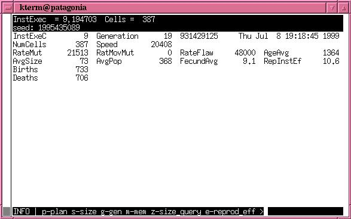
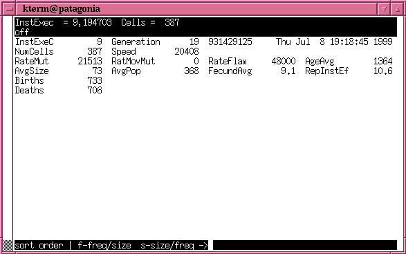
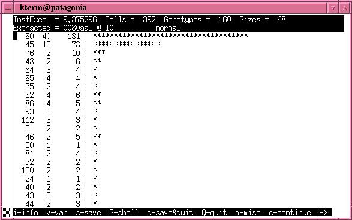
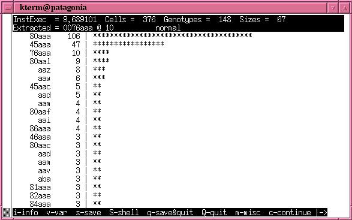

-
Tierra.doc 12-27-2000 documentation for the Tierra Simulator
-
Tierra Simulator V6.02: Copyright (c) 1991 - 2003
Tom Ray & Virtual LifeContents
-
8) Using Network Tierra
-
-
9.6) The Genalign Utility
-
9.7) The Threadtree Utility
-
13) The Ancestors & Writing a Creature
-
13.2) The Network Ancestors
-
Tierra Simulator V6.02: Copyright (c) 1990 - 2004 Thomas S. Ray
Tom Ray, ray@udel.edu ray@santafe.edu ray@his.atr.co.jp (the bulk of the code)
Joseph F. Hart, jhart@atr.jp (general programming, Linux/Unix/Windows/AmigaOS support, sockets, thread/tissue/genetic analysis)
Matt Jones, mjones@condor.psych.ucsb.edu (Mac support)
Agnes Charrel, agnes@sophis.fr, (tping code for network version)
Tsukasa Kimezawa, kim@hip.atr.co.jp (early socket code for network version)
Tooru Yoshikawa, (Beagle explorer, network version)
Kurt Thearling, KThearling@exapps.com (CM5 adaptation, parallel creatures)
Dan Pirone, cocteau@echannel.com (frontend, crossover)
Tom Uffner, email@unknown (rework of genebanker & assembler)
This is the license agreement:
The source code, documentation, and executables can be freely distributed
The source code and documentation is copyrighted, all rights reserved. The source code, documentation, and the executable files may be freely copied and distributed without fees (contributions welcome), subject to the following restrictions:
· This notice may not be removed or altered.
· You may not try to make money by distributing the package or by using the process that the code creates.
· You may not prevent others from copying it freely.
· You may not distribute modified versions without clearly documenting your changes and notifying the principal author.
· The origin of this software must not be misrepresented, either by explicit claim or by omission. Since few users ever read sources, credits must appear in the documentation.
· Altered versions must be plainly marked as such, and must not be misrepresented as being the original software. Since few users ever read sources, credits must appear in the documentation.
The following provisions also apply:
· Virtual Life and the authors are not responsible for the consequences of use of this software, no matter how awful, even if they arise from flaws in it.
· Neither the name of Virtual Life, nor the authors of the code may be used to endorse or promote products derived from this software without specific prior written permission.
· The provision of support and software updates is at our discretion.
Please contact Tom Ray (full address below) if you have questions or would like an exception to any of the above restrictions.
If you make changes to the code, or have suggestions for changes, let us know! If we use your suggestion, you will receive full credit of course.
THIS SOFTWARE IS PROVIDED “AS IS” AND WITHOUT ANY EXPRESS OR IMPLIED WARRANTIES, INCLUDING, WITHOUT LIMITATION, THE IMPLIED WARRANTIES OF MERCHANTABILITY AND FITNESS FOR A PARTICULAR PURPOSE.
Tom Ray
Zoology Department
University of Oklahoma
Norman, Oklahoma 73019
tray@ou.edu
405-325-3526 (Tel)
405-325-7813 (Fax)
The virtual machine was named “Tierra”, Spanish for “Earth”. Originally, the only design criteria was that it should be able to support the evolution of self-replicating machine code. It may have been the first Von Neuman computer designed for evolvability. Conditions for Darwinian Evolution are: self-replicating entities, turn-over of generations, genetic inheritance and genetic variation. So the virtual machine contains: Darwinian Operating System, Soup (RAM), CPU Structure, Instruction Set, and Genetic Operations (included in Darwinian Operating System):
I. Darwinian Operating System
A Darwinian Operating System manages a population of processes in Darwinian fashion. It has the following elements:
1. Slicer. The slicer is a circular queue of processes. It allocates slices of CPU time to each process in the queue, in succession. The size of the time slice determines the number of machine instructions that each virtual cpu (“tissue cell”) of a process (“creature”) will execute in its turn. The slice size may be fixed, a uniform random variate, dependent on the actual size of the genome, or dependent on the executed size of the genome. When a new process is born, it enters the queue behind its mother.
2. Reaper. The Reaper is a linear queue of processes. Processes enter the bottom of the queue at birth, “injection”, or immigration from another Tierra environment (ex. another machine running Tierra). If the memory is full at this time, the Reaper kills processes at the top of the queue. The Reaper removes the dead process from both the Reaper and the Slicer queues and frees memory allocated to the dead process. The code of the dead process may be cleared to “no operation” instructions, randomized, or retained the soup at the user’s discretion. Older processes generally die first. The Reaper may kill the process at the top of the queue, or a process randomly selected from the top X% of the queue (death may be partially or fully random). When a process generates an error, it moves one position up the Reaper queue, while a successful birth of an offspring moves the process one position down.
3. Memory Allocation. A Processe is born with a block of memory procured for it by its parent. The memory may have read, write, or execute protection. The default is write protection only, such that other processes may not write to the block. A process may spawn one offspring at a time. It may reserve one memory block at a time for each, but no more. A additional memory request before giving birth frees the offspring memory block without giving birth and allocates a new one. Instructions copied to the old block are not used. The memory allocator provides several options for placing the memory block: first fit, better fit, random preference, near mother’s address, and suggested address. The memory allocator is connected to the Reaper. When a memory request cannot be fulfilled because a block of the requested size is not available, the Reaper kills processes until a block of the requested size becomes available. The size of memory requests are limited to N times the size of the first block (by default, N = 3).
4. Genetic Operations. There are three broad classes of genetic operations: Mutations, Gene Splicing, and Flaws.
\1) Mutations - Mutations occur when a process is born, or code is copied from place to place, or any time at random (like radiation induced mutations). There are two kinds of mutations of machine instructions:
-
bit flips - a single bit of the instruction is flipped (original Tierra 5 bits, Network Tierra 6 bits).
-
random replacements - the affected instruction is replaced by one of the 32 (or 64) instructions in the set, chosen at random.
\2) Gene Splicing - Each class of gene splicing can occur in two ways: either anywhere in the genome or only at “segment boundaries” marked by templates. Segment boundary gene splicing is an attempt to make splicing a little bit smart, by splicing functionally coherent chunks of code. It is based on the recognition that in Tierra, control-flow (jump) points are marked by templates. Segment boundary splicing cuts only at the location of templates. Gene splicing is applied to a daughter process at the time of birth. There are three classes of splicing:
-
Crossover - A “mate” is chosen at random for “daughter” about to be born. A crossover point in the daughter genome is chosen at random. The smaller part of the daughter is replaced with the corresponding part of the mate. Crossover can occur in two forms: preserving the size of the daughter, or potentially changing the size of the daughter.
-
Insertion - Like crossover, insertion involves the selection of a mate for a daughter; unlike crossover, the code to be inserted does not replace code already in the daughter. The code may be inserted an any location within the daughter’s genome. Any portion of the mate’s genome may be inserted into the daughter.
-
Deletion - Up to one-half of the genome may be deleted. First the size of the segment to be deleted is chosen at random (0 to 1/2); next the offset of the segment is determined within the genome, then the segment is removed from the genome.
\3) Flaws - Flaws are not genetic operations, because they do not alter the genetic code directly. They were originally conceived of as being analogous to metabolic reactions gone wrong or producing byproducts. Flaws are “intentional” errors in the operations of the machine instructions. Most flaws are errors of magnitude + or -1. Flaws have been implemented for almost all of the machine instructions, e.g.: “add” adds the value of the data in two CPU registers; the result may be flawed by + or -1; the results of any arithmetic operations may be incorrect by the amount + or -1; instructions moving data to or from CPU registers may use the wrong (neighboring) register; instructions shifting or rotating bits in registers may shift the bits one place too much or too little; instructions manipulating (e.g. flipping) bits may manipulate the wrong (neighboring) bit.
5. Disturbances. The operating system may optionally kill a proportion of the population of processes at regular or irregular intervals. The user can define the proportion killed, and the temporal pattern of the disturbances.
II. Soup (RAM)
Memory is circular. The size of the memory is set at startup, and cannot change during a run.
-
\III. CPU Structure
Each process contains at least one “virtual cpu”, and depending on the instruction set used, may have many more.
typedef struct // structure for registers of
{ int re[ALOC_REG]; // array of registers
int ip; // instruction pointer
int sp; // stack pointer
int st[STACK_SIZE]; // stack
Flags fl; // flags
CRflags cf; // CPU Register flags
} Cpu;
There are four registers in original Tierra, six in Network Tierra. The (10 word) stack is circular, repeated pushes wrap around and overwrite data.
CPU flags:
typedef struct
{ int E:1; // Error : 1 = error condition has occurred
int S:1; // Sign : resulting sign of arithmetic
int Z:1; // Zero : result of arithmetic or compare
int B:2; // Bits: 00 = 32, 01 = 16, 10 = 8
int D:1; // Direction: for shift, rotate, move, search
} Flags;
typedef struct
{ TRind Se; // current segment register
TRind De; // current destination register
TRind So; // current source register
} CRflags; // CPU register flags
Multiple CPUs:
typedef struct // structure for cpu array
{ TSignal sig; // signal buffer for this cell
int ib; // instruction bank
int ac; // number of this active cpu
Cpu *c; // pointer to active cpu
int n; // number of allocated cpus
Cpu *ar; // pointer to array of cpus
SyncA sy; // sync group array
InstDef *d; // pointer to current InstDef
int threadct; // cell thread count
} CpuA;
-
\IV. Instruction Set
The Tierran instruction set was designed to be evolvable. The following are the relevant characteristics:
1. Graceful Error Handling
No instruction can generate an error that would crash the virtual machine. Serious errors cause the instruction to fail to have any effect, and the instruction pointer moves on to the next instruction.
2. Small (no numeric operands)
“Normal” machine codes permit instructions to include numeric operands. The bit pattern that specifies the instruction must include bits to specify both the operation and the numeric operands. Most of the bits in machine instructions are used to specify the numeric operands. The size of the instruction set collapses to a very small number if numeric operands are not allowed. The instructions can still operate on numbers stored in the CPU registers. “Fixed” numbers can be created in the registers through bit manipulations, e.g., set-to-zero, flip low order bit, shift left.
3. Template Addressing
Numeric operands would normally be used to specify addresses, such as the absolute or relative addresses for the “jump” instruction. Because numeric operands cannot be used for this purpose in Tierra, another method is needed. In Tierra, the “jump” instruction uses a template rather than an absolute or relative address. Templates are an idea borrowed from molecular biology. Molecules “address” one another by having complementary shapes. Templates are complementary patterns of ones and zeros. They are built from two kind of “nop” instructions: “nop0” and “nop1”. The instruction sequence: jmp nop0 nop0 nop1 causes execution of the program to jump to the nearest occurrence of the instruction sequence: nop1 nop1 nop0 . Complementarity insures that the instruction sequence will not find a copy of itself.
4. (almost) no syntax
Except for instructions which use templates: adrb, adrf, adro, call, jmpb, jmpf, jmpo, all instructions are “atomic”, they do not require a context in relation to neighboring instructions.
5. Otherwise Normal Instruction Set
The instructions in the virtual machine code are mostly conventional: nop, add, and, call, clrflag, dec, div, halt, ifzero, inc, jmp, join (threads), mal, mov, mul, not, ior, pop, push, rand, ret, shl, shr, split (thread), sub, xor, zero, get, put. Register usage of instructions is configured at run-time.
The C source code creates a virtual computer and its operating system, whose architecture has been designed in such a way that the executable machine codes are evolvable. This means that the machine code can be mutated (by flipping bits at random) or recombined (by swapping segments of code between algorithms), and the resulting code remains functional enough of the time for natural (or presumably artificial) selection to be able to improve the code over time.
Along with the C source code which generates the virtual computer, we provide several programs written in the assembler code of the virtual computer. Some of these were written by humans and do nothing more than make copies of themselves in the RAM of the virtual computer. The others evolved from the ancestral programs, and are included to illustrate the power of natural selection.
The virtual machine is an emulation of a MIMD (multiple instruction stream, multiple data stream) shared memory computer. This is a massively parallel computer in which each processor is capable of executing a sequence of operations distinct from the other processors. The parallelism is only emulated by time slicing, but there really are numerous virtual CPUs. One or more CPUs will be created and assigned to each “creature” (self-replicating algorithm) living in the RAM of the virtual computer. The RAM of the virtual computer is known as the “soup”.
The operating system of the virtual computer provides memory management and timesharing services. It also provides control for a variety of factors that affect the course of evolution: several kinds of mutation rates, disturbances, the allocation of CPU time to each creature, the size of the soup, the spatial distribution of creatures and so on. In addition, the operating system provides a very elaborate observational system that keeps a record of births and deaths, sequences the code of every creature, and maintains a genebank of successful genomes. The operating system also provides facilities for automating the ecological analysis, that is, for recording the kinds of interactions taking place between creatures.
The version of the software currently being distributed is considered to be a research grade implementation. This means two things: 1) It is continuously under development, and may not be completely bug free. 2) We have chosen to go with modifiability and modularity over speed of execution.
If you find bugs in the code, please report them to us. By the time you find them and report them, we may have eliminated them, and would be able to provide you with a fixed version. If not, we will be able to fix the bug, and would like to make the fix available to other users.
We have chosen modifiability over speed primarily because we know that the original version of the virtual computer was very poorly designed, except with respect to the features that make it evolvable. Specifically, one third of the original instruction set was taken up by stack manipulations; there were only two inter-register moves; the dx was unused (in the initial version, dx was used to set the template size, but that has been abandoned); there were no moves between CPU registers and RAM; there was no I/O; and there was no way of addressing a data segment.
In August 1991, 100% of the original virtual CPU code was replaced with new code that does essentially the same thing. However, the new code is written in a generalized way by implementing a meta-virtual computer which makes it trivial to alter the machine architecture. With the new implementation of the virtual computer it is possible for anyone to painlessly swap in their favorite CPU architecture and instruction set, and their innovation will be seamlessly embedded within the heart of the elaborate observational software. Knowing how bad the original design was, there was a temptation to fix it when the virtual computer was reworked, but the original implementation was retained for historical reasons. In spite of its shortcomings, life proliferated in the environment that it created. Things should get interesting as we improve the architecture. The new organization of the code should make that easy.
In August of 1992, the modifications of the previous August bore fruit as three new instruction sets were implemented. These are documented in some detail below, and in general, eliminate most of the problems discussed above.
In early 1994, attempts to create numerous additional new instruction sets revealed that the method of defining instruction sets was still too stiff, so the code used for decoding the instructions was rewritten yet again, providing a much more flexible method of instruction set definition.
The bulk of the code and documentation was written by Tom Ray, whose address is listed at the end of this file. Substantial contributions have been made by: Dan Pirone, cocteau@santafe.edu, who was involved in the Tierra project from the Fall of 1990 through 1992, and wrote the user interface. Tom Uffner, tom@genie.slhs.udel.edu, reworked the genebanker and assembler/disassembler in the Fall of 1991. Marc Cygnus, cygnus@udel.edu, developed the ALmond monitor, a separate piece of software that displays activity in a running Tierra (see below). Kurt Thearling has been involved in the port to the CM5, and the development of multi-cellular implementations. Since July 1996, Joe Hart has been programming full-time on the Tierra project.
The behavior of this software is described in the publications which are available on the Tierra home page at:
The Tierra Simulator has been widely reported in the media. These publications are listed on the Tierra home page at: http://www.hip.atr.co.jp/~ray/pubs/news/
The Tierra simulator is the central piece of a growing set of programs. The accessory programs aid in observing the results of Tierra runs. You will want to select one or both of the following:
The Beagle Explorer graphically displays the output that Tierra saves to disk. Beagle runs only on DOS systems, and while the heart of the source code is available, Beagle uses the Greenleaf DataWindows interface, and that source can not be distributed (available from Greenleaf Software, 16479 Dallas Parkway, Bent Tree Tower Two, Suite 570, Dallas, Texas, 75248, phone: 214-248-2561). Beagle would normally be distributed in the executable form. Once you have the executables, you will be able to run them on your PC, and you will not need Greenleaf. You only need Greenleaf if you plan to modify the source code. Beagle is currently configured only for the CGA or VGA graphics modes. Beagle executables are now available on disk from Virtual Life, or in the same ftp site as the Tierra source code, in the directory: /beagle. If you pick up the Beagle executables from the ftp site, remember to transfer the files in binary mode.
Examples for non-Network Tierra
Step 1)
You should have a directory containing the source code and the genebank (“gb”) subdirectories. The genebank directories contain the initial genomes used to inocculate the soup, the opcode map, and network machine map files if Network Tierra is used. Tierra will also save new genomes to these directories as well as keep miscellaneous log and data files there. If you are using the tierraLinux.tgz archive and an x86 based machine, you should be able to skip steps 2 and 3, and go directly to step 4.
Step 2)
For most Linux/Unix platforms, simply edit the parameters at the top of the file “Makefile.in” as needed:
PLOIDY=1 # (integer value, generally 1)
FRONTEND=basic # (bgl, basic or stdio)
DEBUG=yes # (yes or no)
NET=no # (yes or no)
CLUSTER=no # (yes or no)
Step 3)
do the following :
make clean
make
If you wish to use the Beagle frontend, you should change to the Bglclnt directory. There you will find a file called “Makefile.Bgl”, which should be edited to select the desired platform. If the X11 frontend (the default) is used, it may be necessary to change to the Bgl-GUI_X11 directory and edit the file “MakeInclude” to use the link library and linker switches required by your particular platform. This is presently set up for x86 based RedHat Linux. In the near future we plan to use autoconfig to handle all this automatically. Change to the Bglclnt directory and type the following to build the Beagle frontend :
make –f Makefile.Bgl clean
make –f Makefile.Bgl
step 4)
You must assemble the initial genome, as binaries are not portable. To do this, go into the gb0 directory and type:
This will create the binary file 0080.gen which contains a creature that you can use to inoculate the soup, the ancestor 0080aaa. You can check to see if this worked by disassembling the genome, by typing:
This will create the ASCII file 0080aaa. Compare it to the original, 0080aaa.tie (they will not be exactly the same). Before you start a run, copy 0080.gen to 0080gen.vir, in order to have virgin copies for use later when you start another run.
cp 0080.gen 0080gen.vir
You can do the same for each of the gb directories (gb0, gb1, gb2, gb3, and gb8). Be sure to assemble the genomes listed at the ends of the corresponding soup_in files (si0, si1, si2, si3, si8).
step 5)
Examine the file soup_in. This file contains all of the overrides for the default values of the parameters that control the run. It is currently set up to inoculate the soup with one cell of genotype 0080aaa, and to run for 500 generations in a soup of 60,000 instructions.
step 6)
Run the simulator by typing: “tierra”, or “tierra > /dev/null & “ to run it in the background. A log file can be created by setting the soup_in variable “TierraLog = 1”
In order to run tierra in the background, Tierra must be built using the stdio frontend.
If you will run Tierra in the foreground, we recommend that you use the basic frontend.
step 7)
When the run is over, if you want to start a new run, you should clean up the genebank.
If you wish to build an executable from the source code, there is a project file for Visual C++ under the directory named “msvcc”. The file is called “Tierra.dsw”. Clicking on the icon for this will start Visual studio. Simply select the desired configuration (ex. Tierra or Tierra_net_bgl) and build it. Running Tierra under Windows is otherwise very similar to running it under Unix. If you use the “tierraWin.tgz” archive, you will not have to build the executable from the source code. The Beagle frontend is currently available only for Linux/Unix, but a version for Windows is presently under development. A Linux or Unix system running Beagle can be used to remotely control a Tierra process running on a Windows machine.
Examples for non-Network Tierra
step 1)
You must assemble the initial genome, as binaries are not portable. To do this, go into the gb0 directory using the DOS shell window and type :
This will create the binary file 0080.gen which contains a creature that you can use to inoculate the soup, the ancestor 0080aaa. You can check to see if this worked by disassembling the genome, by typing:
This will create the ASCII file 0080aaa. Compare it to the original, 0080aaa.tie (they will not be exactly the same). Before you start a run, copy 0080.gen to 0080gen.vir, in order to have virgin copies for use later when you start another run.
copy 0080.gen 0080gen.vir
You can do the same for each of the gb directories (gb0, gb1, gb2, gb3, and gb8). Be sure to assemble the genomes listed at the ends of the corresponding soup_in files (si0, si1, si2, si3, si8).
step 2)
Examine the file “soup_in”. This file contains all of the overrides for the default values of the parameters that control the run. It is currently set up to inoculate the soup with one cell of genotype 0080aaa, and to run for 500 generations in a soup of 60,000 instructions.
step 3)
Run the simulator by typing: “tierra” in the DOS shell window. A Log file can be created by setting the “soup_in” variable “TierraLog = 1”.
step 4)
When the run is over, if you want to start a new run, you should clean up the genebank.
This section has the following sub-sections:
-
6.1) Startup
-
6.2) The Assembler/Disassembler
-
6.3) The Birth-Death Output
-
6.4) The Genebank Output
-
6.5) Restarting an Old Run
-
6.6) The User Interface
-
6.6.1) The Basic Interface
-
6.6.1.1) The Basic Screen
-
6.6.1.2) The Menu Options
-
6.6.1.2.1) The Size Histogram
-
6.6.1.2.2) The Memory Histogram
-
6.6.1.2.3) The Genotype Histogram
-
6.6.1.2.4) The Size Class Information Display
-
6.6.1.2.5) The Virtual Debugger
-
6.6.1.2.6) The Genome Injector
-
6.6.1.2.7) Trap Creatures
-
-
-
6.6.2) The Standard Output & Interrupt Handler
-
6.6.3) The tierra.log file
-
The first steps in running Tierra are described briefly above. One must place the genomes and the opcode.map in the gb (gene bank) directory. The genome files are supplied in the form of ASCII assembler code files. These must be assembled into binary form to be able to execute on the virtual machine. If you type arg, the assembler will give you a brief listing of assembler options. More complete documentation of the assembler follows:
Arg(1) USER COMMANDS Arg(1)
NAME
arg – gene bank archive utility
SYNOPSIS
arg c|r[v] <archive> <source> [source…]
arg t[v] <archive>
arg x[v]p <tiss[-tiss][,tiss[-tiss]…]> <archive>
arg x[a[d[l][u[s]]]][v] <archive> [genotype [genotype…]]
DESCRIPTION
The arg utility is used to manipulate the genebank archives
that are used by tierra(1). It is used to assemble or dis-
sasemble tierra code, list the genomes contained in a file,
and also to convert between the old and new file formats.
The arg commands are:
c - create archive and add genomes
r – replace in archive (or add to end) genomes
x - extract all or specified genomes
t - list archive contents
The modifiers are:
a – generate thread analysis reports
d – use detailed thread analysis report format
(default is summary)
l – include split tissue analysis data
p - execution pattern (must be used with x)
s - symmetric cluster analysis (must be used with x, a, and d
u - cluster analysis format (must be used with x, a, and d)
FILES
GenebankPath/nnnn.gen permanently saved genomes
GenebankPath/nnnn.tmp genomes from periodic saves
GenebankPath/nnnn.smp extracted samples
The arg utility requires that the file “opcode.map” be in the current working directory.
During a run, if the DiskOut parameter is non-zero, a record of births and deaths will be written to disk in the path specified by OutPath, to files whose names depend on the BrkupSiz parameter. The format of this file is a bit cryptic, so it will be explained here. The file has either three or four columns of output, depending on whether the GeneBnker parameter is set. Three of the columns remain the same either way: 1) elapsed time since last birth or death event in instructions, output in hexadecimal format. 2) a ‘b’ or a ‘d’ depending on whether this is a birth or a death. 3) the size of the creature in instructions, output in decimal format. If the genebanker is on, then there will be a fourth column contain the three letter code identifying the genotype of the creature. Mutations appear in the birth-death record as the death of one genotype followed by the birth of another, with an elapsed time of zero between the two events.
What makes the file cryptic, and also compact, is that columns are implied to be identical in successive records unless otherwise indicated. Only the first column, elapsed time since last record, must be printed on every line, and only the first record must have all three or four columns. Therefore, if there is a series of successive births, only the first birth record in the series will contain the b. Notice that at the beginning of the file, there will generally be many lines with just one column, because at the outset, all records are of births of the same size and genotype.
The record of births and deaths is read by the Beagle program, and converted into a variety of graphic displays: frequency distributions over time, phase diagrams of the interactions between pairs of sizes or genotypes, or diversity and related measures over time. The source code for reading and interpreting the record of births and deaths is in the bread.c module of the Beagle source code.
If the GeneBnker parameter is set to a non-zero value, then as each creature is born, its genome will be sequenced and compared to that of its mother. If they are identical, the daughter will be assigned the same name as the mother. If they are different, the genome of the daughter will be compared to the same size genomes held in the RAM genebank. If the daughter genome is found in the RAM bank, it will be given the same name as the matching genome in the bank. If the daughter genome is not found in the RAM genebank, it will be compared to any same size genomes stored on the disk that are not in the RAM genebank. If the daughter genome is found in the disk genebank, it will be given the same name as the matching genome in the disk genebank, and that genome will be brought back into RAM from the disk. If the daughter genome does not match the mother or any genome in either the RAM or disk banks, then it will be assigned an arbitrary but unique three letter code for identification.
The gene banker keeps track of the frequency of each size class and each genotype in the soup. If a genotype exceeds one of the two genotype frequency thresholds, SavThrMem or SavThrPop, its assigned name will be made permanent, and it will be saved to disk in a .gen file. When all creatures currently or originally of this genotype are extinct, the reference to this genotype in the ram bank will be replaced with a flag indicating that it may be found in the disk bank. Genotypes are grouped into individual files on the basis of size. For example, all permanent genotypes of size 80 will be stored together in binary form in a file called 0080.gen. Genotypes without a permanent name are deleted when all creatures either currently or originally of that genotype are extinct.
When the simulator comes down, or when the state of the simulator is saved periodically during a run, all genotypes present in the soup which have not been assigned permanent names will be stored in files with a “.tmp” extension. For example, all temporary genotype names of size 45 would be stored in binary form in a file called “0045.tmp”.
The binary genebank files can be examined with the assembler-disassembler utility “arg” (see the relevant documentation, section 6.2 above). The Beagle Explorer program also contains utilities for examining the structure of genomes. One tool condenses the code by pulling out all instructions using templates, which can reveal the pattern of control flow of the algorithm. Another function allows one genome to be used as a probe of another, to compare the similarities and differences between genomes, or to look for the presence of a certain sequence in a genome. A completely separate tool called probe will scan the genebank pulling out any genomes that meet a variety of criteria that the user may define.
When you start Tierra by typing the executable name at the system prompt, you may provide an optional file name as a command line argument. This is the file that contains a list of parameters whose default values are to be overridden. The default file name is soup_in. When a simulator comes down, and periodically during a run, the complete state of the machine is saved so that the simulator can start up again where it left off. In order to do this you must have the simulator read the file “soup_out” on startup The “soup_out” file is saved in the gene bank directory. This means that you must type:
tierra <gene bank directory>/soup_out
example: tierra gb0/soup_out
There are two interfaces available for Tierra. The source code and executables are shipped in a form that is configured for the nicer of the two, the Basic interface. However, if you make the appropriate modifications to the configur.h file, you can recompile with the Standard Output interface (useful for running Tierra in the background). Documentation for each of these interfaces follows.
The Basic frontend features a dynamic interface to the simulation. The screen area is divided into five basic areas:
The STATS area consists of the top two lines of the screen. This area displays several important variables, whose values are updated after every birth:
InstExec = 75,529993 Cells = 387 Genotypes = 191 Sizes = 23
Extracted = 0080aad @ 8
InstExec = 75,529993 tells us that the simulation has executed a total of 75,529,993 instructions. Cells = 387 tells us that there are presently 387 adult cells living in the soup. Genotypes = 191 tells us that there are presently 191 distinct genotypes of adult cells living in the soup. Sizes = 23 tells us that there are presently 23 distinct sizes of adult cells living in the soup. Extracted = 0080aad @ 8 tells us that the last genotype to cross one of the frequency thresholds (SavThrMem or SavThrPop) and get saved to disk and get a permanent name was a creature of size 80 with the name aad, which had a population of 8 adult cells when it crossed the threshold.
The PLAN area displays the values of several variables, whose values are updated every million instructions:
InstExeC = 75 Generations = 188 Thu Apr 30 11:49:46 1992
NumCells = 356 NumGenotypes = 178 NumSizes = 21
AvgSize = 76 NumGenDG = 171
AvgPop = 376 Births = 1007 Deaths = 1034
RateMut = 10966 RateMovMut = 1216 RateFlaw = 97280
MaxGenPop = 21 (0078aak) MaxGenMem = 21 (0078aak)
Speed = 23256
InstExeC = 75 tells us that this set of variables was written when the simulation had executed 75 million instructions. Generations = 188 tells us that the simulation had run for about 188 generations at this time. Thu Apr 30 11:49:46 1992 tells us the actual time and date that this data was printed.
NumCells = 356 tells us that there were 356 adult cells living in the soup. NumGenotypes = 178 tells us that there were 178 distinct genotypes of adult cells living in the soup. NumSizes = 21 tells us that there were 21 distinct sizes of adult cells living in the soup.
AvgSize = 76 tells us that during the last million instructions, the average size was 76. NumGenDG = 171 tells us that there are 171 genotypes that have received permanent names and been saved to disk as .gen files in the genebank directory gb.
AvgPop = 376 tells us that during the last million instructions, the population was 376 adult cells. Births = 1007 tells us that during the last million instructions, there were 1007 births. Deaths = 1034 tells us that during the last million instructions, there were 1034 deaths.
RateMut = 10966 tells us that the actual average background (cosmic ray) mutation rate for the upcoming million instructions will be one mutation per 10966/2 instructions executed. RateMovMut = 1216 tells us that the actual average move mutation rate (copy error) for the upcoming million instructions will be one mutation for every 1216/2 instructions copied. RateFlaw = 97280 tells us that the actual average flaw rate for the upcoming million instructions will be one flaw for every 97280/2 instructions executed. The reason that these numbers represent twice the average mutation rates is that they are used to set the range of a uniform random variate determining the interval between mutations.
MaxGenPop = 21 (0078aak) tells us that at this time, the genotype with the largest population is 0078aak, and that it has a population of 21 adult cells. MaxGenMem = 21 (0078aak) tells us that the genotype whose adult cells occupy the largest share of space in the soup is 0078aak, and that it has a population of 21 adult cells.
Speed = 23256 indicates that the virtual machine is executing 23,256 instructions per second.
The MESSAGE area, for state changes, and Genebank data. This area serves many purposes - memory reallocation messages, Genebank information displays, large interface prompts (e.g. changing a soup_in variable ).
The ERROR area at the second to the last line of the screen. All simulation errors and exit conditions are passed through this area.
The HELP area at the last line of the screen. This area provides suggestions for keystroke navigation. Under DOS it will usually look like this:
Press any Key for menu …
Under Unix it will generally look like this:
Press Interrupt Key for menu …
Under DOS, pressing any key will get you the menu, under Unix, pressing the interrupt key (usually Ctrl C) will get you the menu, described in the next section.
Please note that if the Tierra simulator is started with two arguments, it will come up with the menu system activated. The first argument must be the name of the soup_in file, the second argument is a dummy and anything will do: tierra soup_in junk
The frontend menu looks like this:
i-info v-var s-save S-shell q-save&quit Q-quit m-misc c-continue |→
These options allow for rapid IO from the simulation, in a user friendly format. The interface allows transition between any data display mode. The features are activated by a single keypress ("Enter/Return" is usually not needed).
The options are:
i-info v-var s-save S-shell q-save&quit Q-quit m-misc c-continue |→
i-info: pulls up the display mode menu. See below for details.
v-var: allows you to examine or alter the value of any of the variables in the soup_in file at any point during a run.
s-save: will cause the state of the system to be saved at this point, and then continue the run. If this option is selected, the user will be asked for confirmation before proceeding.
S-shell: suspends the simulation and transfers you to to a system prompt.
q-save&quit: will cause the state of the system to be saved at this point, and then exit from the run. If this option is selected, the user will be asked for confirmation before proceeding.
Q-quit: will exit immediately without saving the state of the system. If this option is selected, the user will be asked for confirmation before proceeding..
m-misc: pulls up the miscellaneous sub-menu
c-continue: continue the run.
If you press i for info, from the main TIERRA menu, you are able to select one of the data display modes:

The second line from the top of the screen will change, providing additional information on the operating system memory use, or the Tierran memory use. At the bottom of the screen, a new list of GeneBank data display options are available. All of these modes will try to provide as much data as can fit on the screen. These modes are detailed below:
Hit the c key to continue (to get out of this level of the menu)
The options are:
p-plan s-size_histo g-gen_histo m-mem_histo z-size_query
If you press p from the info menu you get the Plan Display mode:
Now in Plan Display mode, updated every million time steps
This provides the normal statistics every million virtual time steps (this is also an easy way to clear the message area):
InstExeC = 75 Generations = 188 Thu Apr 30 11:49:46 1992
NumCells = 356 NumGenotypes = 178 NumSizes = 21
AvgSize = 76 NumGenDG = 171
AvgPop = 376 Births = 1007 Deaths = 1034
RateMut = 10966 RateMovMut = 1216 RateFlaw = 97280
MaxGenPop = 21 (0078aak) MaxGenMem = 21 (0078aak)
Speed = 23256
The meaning of this information is detailed above.
If you press s from the info menu, the size class histogram sort menu is displayed. The size class histogram may be sorted by creature size or frequency of occurrence.

The plan and message areas will show a histogram of frequency distributions of the currently living size classes:

In the above histogram, the left column of numbers is the size class, the middle column is the number of genotypes of that size class, and the right column is the number of living adult cells of that size class.
If you press m from the info menu, the memory histogram sort menu is displayed. The memory histogram may be sorted by size or frequency of occurrence.

The plan and message areas will show a histogram of frequency distributions of the currently living size classes by memory use:
Size Memory use (size * freq.)
18 3 180 | *
19 3 76 | *
20 2 60 | *
21 1 63 | *
22 1 110 | *
27 3 162 | *
31 1 31 | *
33 1 33 | *
34 2 136 | *
35 1 105 | *
36 37 3096 |
37 69 7141 | *
38 34 3610 | *
39 7 351 |
40 13 960 |
41 1 41 | *
42 1 42 | *
43 1 43 | *
44 1 44 | *
45 1 90 | *
46 2 92 | *
47 1 235 |
48 1 48 | *
49 1 98 | *
50 1 50 | *
54 1 54 | *
56 2 168 | *
66 1 66 | *
71 22 42 | *
72 25 42 | *
In the above histogram, the left column of numbers is the size class, the middle column is the number of genotypes of that size class, and the right column is the amount of memory occupied by living adult cells of that size class.
If you press g from the info menu, the genotype histogram sort menu is displayed. The genotype histogram may be sorted by size or frequency of occurrence.
The plan and message areas will show a histogram of frequencies of specific genotypes:

In the above histogram, the first column is the genotype, and the second column is the number of living adult cells of that genotype.
If you press z from the info menu, you will be prompted for a specific size class to examine.
Enter a size class ( eg: 80 ) to examine → 80
A list of the most common genotypes of that size will be generated along with some statistics on each:
InstExec = 2,124009 Cells = 359 Genotypes = 123 Sizes = 63
Extracted = 0080abo @ 10 normal
Gene: # Mem Errs Move Bits
aaa 197 26 0 80 EXsh TCsh TPsh MFsh MTd MBh
aab 7 0 0 80 EXsh TCsh TPsh MFsh MTd MB
aac 1 0 0 0 EX TC TP MF MT MB
aad 1 0 0 0 EXs TCs TPs MFso MTd MB
aae 1 0 0 0 EXsofh TCsofh TPsofh MFso MTd Mbsoh
aaf 1 0 0 0 EX TC TP MF MT MB
aag 5 0 0 0 EXsof TCsof TPsof MF MT MBs
aah 2 0 0 80 EXsh TCsh TPsh MFs MTd MB
aai 4 0 0 80 EXsh TCsh TPsh MFs MTd MB
aak 1 0 0 80 EXso TCso TPso MF MT MBs
aal 1 0 0 0 EX TC TP MF MT MB
aam 1 0 0 0 EXs TCs TPs MF MT MB
aan 2 0 0 80 EXsoh TCsoh TPsh MFsh MTd MB
aao 1 0 0 0 EXs TCso TPs MFo MTf MB
aap 2 0 0 79 EXsofh TCsofh TPsofh MFs MTd Mbsof
aaq 1 0 0 80 EXs TCs TPs MFs MTd MB
aar 1 0 0 80 EXs TCs TPs MFs MTd MB
aas 1 0 0 80 EXs TCs TPs MFs MTd MB
aat 1 0 82 80 EXsofh TCsofh TPsofh MFs MTd MBo
aau 1 0 0 0 EXs TCs TPs MFs MTd MB
U/D-page up/down q-quit→
# = actual count, populations of adult cells of this genotype
Mem = is the percent of Soup, occupied by adult cells of this genotype
Err = is the number of instruction errors,
Move = number of instructions moved to the daughter cell,
Bits = Watch bits, defined in section 7 - Soup_in Parameters
Zero values usually represent cases of insufficient data. The “U/D-page up/down” option displays the next page if any if “U” is selected, and the previous page if “D” is selected.
If you press e from the info menu, the reproductive efficiency histogram menu will appear:
Reprod Effic | s-size_avg g-genome→
From this menu it is possible to select a size class or genotype reproductive efficiency histogram. After this selection is made the reproductive efficiency daughter menu will appear:
Reprod Effic | 1-1st_daught 2-2nd_daught→
A reproductive histogram can be generated for either the first or second daughter. After this selection is made, the reproductive efficiency histogram sort menu appears:
sort order | f-effic/size s-size/effic →
The histogram can be sorted either by reproductive efficiency and size or size and efficiency. The size class efficiency histogram appears as follows:
120 2 10.225 | *
110 1 10.245 | *
105 1 10.257 | *
102 1 10.265 | *
88 1 10.273 | *
98 2 10.276 | *
78 4 10.279 | *
91 1 10.297 | *
97 1 10.306 | *
87 2 10.318 | *
90 1 10.333 | *
81 4 10.333 | *
82 2 10.337 | *
77 1 10.342 | *
80 23 10.344 | *
92 3 10.344 | *
76 2 10.355 | *
72 1 10.375 | *
71 1 10.380 | *
93 3 10.387 | *
79 8 10.408 | *
58 1 10.466 | *
The first column is for size class. The second column is the number of adults in that size class, and the third is the average reproductive efficiency in terms of instructions executed per instruction copied for that size class.
The genotype reproduction efficiency histogram appears as follows:
102aab 10.265 | *
88aaa 10.273 | *
98aaa 10.276 | *
aab 10.276 | *
97aac 10.278 | *
91aaa 10.297 | *
87aab 10.310 | *
85aaa 10.318 | *
77aaa 10.325 | *
87aaa 10.325 | *
78aae 10.333 | *
80aaq 10.333 | *
81aaa 10.333 | *
90aab 10.333 | *
80aaa 10.338 | *
aab 10.338 | *
aal 10.338 | *
aan 10.338 | *
aav 10.338 | *
abf 10.338 | *
abi 10.338 | *
abr 10.338 | *
The first column is the genotype, and the second is the average reproductive efficiency in terms of instructions executed per instruction copied for the corresponding genotype.
If you press v for variable, from the main TIERRA menu, you will get the variable submenu:
VAR | a-alter variable e-examine variable→
From this menu, you have the following options:
a - alter variable: if you press the a key, you can name any variable in the soup_in file, and specify a new value for that variable.
To alter any global variable from soup_in, type
the variable name (using proper case), a space,
an equal sign, a space, and the new value.
Use no space at start of line. Some examples:
alive = 0
DistProp = .6
GenebankPath = newpath/
GeneBnker = 1
e - examine variable: if you press the e key, you can examine the value of any variable in the soup_in file.
The following parameters may be examined but are protected from alteration :
new_soup
seed
CumGeneBnk
GenebankPath
Host
LocalPort
ImapFile
MonPort
map_fn
NumCells
OutPath
SoupSize
TierraNice
debug
hangup
BrkupSiz
DropDead
MaxIOBufSiz
MaxPutBufSiz
MaxGetBufSiz
MaxFreeBlocks
MAX_species_SIZ
MAX_species_GEN
MAX_species_MEM
If you press m for misc, from the main TIERRA menu, you will get the miscellaneous sub-menu, which looks like the following :
MISC | H-Histo Logging I-Inject Gene M-Micro Toggle |→
When this sub-menu is selected, some information is displayed at the top of the screen about what variables are #defined:
VER=4.10 PLOIDY=1 MICRO ALCOMM
This information relates to the way that Tierra was compiled. In this case this tells us that this is Version 4.10 of the Tierra program, that it is a haploid model (Ploidy = 1), and that the MICRO virtual debugger is enabled, and that the ALmond communications system is also enabled.
From this menu, you have the following options:
H-Histo Logging: if you press the H key, it will toggle the logging of any histograms you create to the tierra.log file.
I-Inject Gene: inject a genome of your choice from the genebank into the soup of the running simulator.
M-Micro Toggle: turn on the virtual debugger. The debugger has three states: delay, keypress, and off. In delay mode, the debugger will execute one Tierran instruction per second. In the keypress mode, the debugger will execute one Tierran instruction per keypress. Changing the debugger state will clear tracking and and the current break trap if one is set.
The debugger has three main states: delay, keypress, and off. In delay mode, the debugger will execute one Tierran instruction per second. In the keypress mode, the debugger will execute one Tierran instruction per keypress. Once you have selected your mode, press c to start the simulator again. You can use this tool to step through the genome of a creature, either to see what it does, or to debug a creature that you are writing.
In keypress mode, there are some additional modes. Given that there is usually a population of cells in the soup, the virtual debugger will swap from cell to cell as each one gets its time slice. However, this can be disconcerting if one is trying to study the behavior of a particular cell. The debugger can be made to follow a single creature using the Track cell option as specified at the bottom of the screen in keypress mode:
T-Trk cell Trk U-cur N-New thd r-Rpt Brk q-Main d-displ a-disasm
If you hit the T key, you will go into Track cell mode, and the menu will change to:
t-Untrk cell Trk U-cur N-New thd r-Rpt Brk q-Main d-displ a-disasm
Now hitting the “t” key will return to the mode that swaps between cells.
Version 4.1 and later of Tierra allows for the possibility that a single cell can have more than one processor. This introduces a similar problem in that the debugger will follow the time slicing pattern of the simulator, which involves a single instruction per processor within a cell. Again, this can make it difficult to follow the activity of a single processor during the course of a given thread (see 10.0.1). The debugger can be made to follow a single thread within a cell using the one of the “thread tracking” options as specified at the bottom of the screen in keypress mode (see above). If you hit the “U” or the “N” keys, you will go into the appropriate “thread tracking” mode, and the menu will change to:
t-Untrk cell u-Untrk thd r-Rpt Brk q-Main d-displ a-disasm
The “U-cur” thread tracking mode will allow the debugger to follow the activity of the current thread, and the “N-New thd” mode will allow the debugger to follow the activity of the most recently created thread. This last is particularly useful for following the new thread created by a “split” instruction. To do this, insure that the debugger is halted on a “split” instruction, and then deactivate any active thread tracking mode so that the debugger is not following any particular thread. Single step over the “split” instruction, and then enter the “N-New thd” tracking mode. The debugger will find and follow the new thread without the user having to know which cpu was created or what thread id was assigned.
Please note that going into a “thread tracking” mode automatically puts you into Track cell mode. You may exit the “thread tracking” mode by hitting the “u” key, and the menu will change to:
t-Untrk cell Trk U-cur N-New thd r-Rpt Brk q-Main d-displ a-disasm
Note that exiting a “thread tracking” mode does not cause you to exit Track cell mode. If you wish to exit the Track cell mode, you must hit the “t” key.
It should also be noted that manually changing the cell or thread tracking mode will clear the current break trap.
If you wish to start debugging from the very beginning of a run, you will want to start the simulator fresh with the menu activated, so that you can start the debugger before any seed creature has started to run. This is done by giving two arguments when starting Tierra. The first is the name of the soup_in file, and the second is a dummy argument. So for example, you should type:
tierra si0 junk
The debugger display in keypress mode looks like:
InstExec = 46512 Cells = 35 Genotypes = 8 Sizes = 7
Extracted = step
Cell 0: 30 0080aab @ 31284 Slice= 30 Stack [ 31397]
IP [ 31415] (+131 ) = 0x1a movii [ 34771]
OSD AX [ 34781] ----------- host ------------ [ 31364]
BX [ 31374] id : 0080aaa [ 80] <
CX [ 70] status : alive [ 0]
DX [ 4] offset : 51 [ 0]
EX [ 0] inst : 204 [ 0]
FX [ 0] instP : 204 [ 0]
Flag: 0 Stk: 3 [ 0]
Daughter @ 34771 + 80 [ 0]
0 of 1 Cpus thread [ 0]
i-info v-var s-save S-shell q-save&quit Q-quit m-misc c-cont|→
The various components of the display are documented in the following:
Cell 0: 30 0080aab @ 31284 Slice= 30
Each creature has associated with it a cell structure. The cell structures are organized in a two dimensional array. Cell 0: 30 tells us that the structure for the currently active creature is at location 0,30 in the cell array.
The currently active creature is 0080aab whose cell starts at address 31284 in the soup. This creature currently has 30 CPU cycles left in its time slice. Note that when the Slice counts down to zero, the slicer will swap in the next creature in the slicer queue, and the debugger will display the CPU of the next creature. Therefore when there is more than one creature in the soup, it is hard to follow the activity of a single creature, since the debugger will be swapped from creature to creature. This problem can be eliminated by activating the Track cell mode (see above).
Daughter @ 34771 + 80
The currently active creature has allocated a space of 80 instructions at address 34771 in the soup, which it presumably will use to make a daughter.
IP [ 31415] (+131 ) = 0x1a movii
The instruction pointer (IP) of the currently active creature is presently located at the soup address 31415. The number in parentheses (+131) is the offset of the IP from the start of the cell. As long as the IP is inside the cell, this offset will be displayed without a sign. If the IP is outside of the cell, the offset will be displayed with a + or a - sign. The current offset of +131 means that this creature is executing code outside of itself. The instruction currently being executed is represented in the soup by the hex value 0x1a. The assembler mnemonic of this instruction is “movii”, which is an instruction copy operation.
Cell 0: 30 0080aab @ 31284 Slice= 30 Stack [ 31397]
IP [ 31415] (+131 ) = 0x1a movii [ 34771]
OSD AX [ 34781] ----------- host ------------ [ 31364]
BX [ 31374] id : 0080aaa [ 80] <
CX [ 70] status : alive [ 0]
DX [ 4] offset : 51 [ 0]
EX [ 0] inst : 204 [ 0]
FX [ 0] instP : 204 [ 0]
Flag: 0 Stk: 3 [ 0]
Daughter @ 34771 + 80 [ 0]
The four CPU registers (“a”, “b”, “c”, and “d” – “e” and “f” are not used for this instruction set) of the currently active creature contain the values indicated above. Probably, the AX value is the address where the creature is writing in its daughter cell, the BX value is the address that it is copying from in its own cell, the CX value is the number of instructions of the genome remaining to be copied, and the DX value is the size of the last template used.
Flag: 0
This shows the status of the flag register. This can be used to recognize when an instruction has failed, generating an error condition.
Stack [ 31397]
[ 34771]
[ 31364]
[ 80] <
[ 0]
[ 0]
[ 0]
[ 0]
[ 0]
The stack of the currently active creature contains the values indicated above. The stack pointer points at the location indicated by the < sign (the top of the stack).
0 of 1 Cpus
Given that versions 4.1 and later allow each cell to have more than one CPU, this message tells us which CPU we are currently observing. The CPUs are numbered starting from 0. In this case, the cell has only one CPU.
-
6.6.1.2.5.1) Additional Debugger Display Elements
id : 0080aaa
status : aliveIf there is a resident at the address of the currently executing instruction and the resident is adult the “status” display shows the message “alive”. If the gene banker is active the “id” display shows its genotype. If the gene banker is not active the “id” display shows the size of the resident. If the resident is embryonic the “status” display shows the message “embryonic”. The “id” display will indicate that it is a daughter. If the gene banker is active, the “id” display will also give the genotype of the parent. If the gene banker is not active, the size of the parent will be shown. If there is no resident, “free memory” will be shown.
offset : 51
If there is a resident at the address of the currently executing instruction, the offset relative to the start of that resident is shown.
inst : 204
instP : 204The “inst” display shows the number of serial instructions executed by the currently executing creature since its birth. The “instP” display shows the number of parallel instructions executed since birth.
Stk: 3
The “Stk” display shows the current value of the stack pointer.
6.6.1.2.5.2) “Soup Memory” Debugger Display
In the default debugger display menu is the following option :
d-displ
This leads to the debugger display menu :
t-toggle display q-quit→
The “t-toggle display” option causes the debugger display to toggle between the default display and the “soup memory display”, which appears as follows :
InstExec = 0 Cells = 1
keypress
soup soup current host host
address byte opcode resident status offset
--------- ------ --------- ------------------- --------- ------
[ 30000] [0x01] nop1 0080--- alive 0
[ 30001] [0x01] nop1 0080--- alive 1
[ 30002] [0x01] nop1 0080--- alive 2
[ 30003] [0x01] nop1 0080--- alive 3
[ 30004] [0x04] zero 0080--- alive 4
[ 30005] [0x02] not0 0080--- alive 5
[ 30006] [0x03] shl 0080--- alive 6
[ 30007] [0x03] shl 0080--- alive 7
[ 30008] [0x18] movDC 0080--- alive 8
[ 30009] [0x1c] adrb 0080--- alive 9
a-addr U/D-page u/d-scroll i-IP t-toggle display q-quit→This display begins at the address of the currently executing instruction by default. This may be changed by selecting the “a-addr” option :
soup address limits = 0 – 59999
Enter view start address (enter to abort)→50000This results in the following display :
soup soup current host host
address byte opcode resident status offset
--------- ------ --------- ------------------- --------- ------
[ 50000] [0x00] nop0 free memory
[ 50001] [0x00] nop0 free memory
[ 50002] [0x00] nop0 free memory
[ 50003] [0x00] nop0 free memory
[ 50004] [0x00] nop0 free memory
[ 50005] [0x00] nop0 free memory
[ 50006] [0x00] nop0 free memory
[ 50007] [0x00] nop0 free memory
[ 50008] [0x00] nop0 free memory
[ 50009] [0x00] nop0 free memoryThe “U/D-page” option causes the display to page up or down by one screen. The “u/d” option causes the display to scroll up or down by one line. The “i-IP” option causes the display to start at the address of the currently executing instruction. The “q-quit” returns control to the main debugger menu using the currently selected debugger display type. If the “soup memory” display is in effect, it will automatically revcrt to starting at the address of the currently executing instruction.
6.6.1.2.5.3) Disassembly via the Debugger
In the debugger display menu is the following option :
a-disasm
This option leads to the following menu :
1 - current creature
2 - specific genome
3 - resident of specific address
4 - most recent thrd analysis data trapped
q – Quit
Menu Option→Disassembly listings of the appropriate genotype are placed in the gene bank directory in a file of the same name as that of the genotype. If a file with this name already exists, the following message is displayed:
disassembly exists (replace) ? - specify (y/n)→
The file will be replaced if “y” is typed followed by the “Enter” key.
Option 1 produces a disassembly listing of the genotype of the currently executing organism. Option 2 produces a disassembly listing of a user specified genotype. Option 3 produces a disassembly listing of the genotype of the organism, if any, resident at the user specified soup address. Option 4 produces a disassembly listing of the genotype of the organism, if any, for which thread analysis data has most recently been collected using the “thread analysis data ready” break trap. If the current and original genotypes of the associated organism differ for options 1, 3,or 4, disassembly of the current or original genotypes may be specified. If the original genotype is disassembled, the user is offered the option of including thread analysis data reports in the listing if thread analysis data is available for the genotype.
The menu system provides a facility for injecting a genome into a running simulation. The main menu of Tierra contains a “m-misc” option :
-
m-misc
Under the “m-misc” option is the following menu :
H-Histo Log I-Inj Gene M-Micro Tog B-Brk Menu m-more→
If the “I-Inj Gene” option is selected, Tierra requests the name of the genotype of the creature to be injected :
Enter genome to be injected (eg 0080aaa) (enter to abort)→0080aaa
The genome must be in a “.gen” or “.tmp” file in the path indicated by the GenebankPath soup_in variable. Tierra then requests the number of creatures of the given genotype to be injected :
Enter number of creatures to inject (enter to abort)→1
This may be any number up to the maximum the soup can hold. Tierra then requests the address at which the injection is to begin. Tierra will inject the organisms as close as possible the this address if it is given. If there is no preference, Tierra will begin injection as close as possible to the start of the soup.
soup address limits = 0 – 59999
Enter preferred address, (Enter to abort, or -1 for no preference)→-1m-misc
Under the “m-misc” option is the following menu :
H-Histo Log I-Inj Gene M-Micro Tog B-Brk Menu m-more→
Under the “B-Brk Menu” option is the “break trap” main menu :
b-Set Brk c-Clr Brk r-Rpt Brk→
The break trap menu allows for the setting of conditions under which the micro debugger will enter “single step” mode and wait for a keypress. A set of such conditions is called a “break trap”. When the debugger enters “single step” mode according to the conditions set by the break trap, the trap is said to be “triggered”. Once this happens, the break trap is said to be “cleared”, and must be set again if it is to be used. The “r-Rpt Brk” option may be used to repeat the settings for the previously triggered break trap. The current version of Tierra allows the setting of one break trap at a time. The “c-Clr Brk” option allows for the clearing of a break trap before it is triggered.
After the conditions of the break trap are set, Tierra will return to the main menu :
i-info v-var s-save S-shell q-save&quit Q-quit m-misc c-continue |→
Press “c” to allow Tierra to continue processing until the break trap is triggered. The micro debugger screen will appear as follows when the break trap is triggered:
InstExec = 0 Cells = 1
keypress
Cell 0: 2 000080--- @ 30000 Slice= 2 Stack [ 0]
IP [ 30000] ( 0 ) = 0x01 nop1 [ 0]
OSD AX [ 0] ----------- host ------------ [ 0]
BX [ 0] id : 0080--- [ 0]
CX [ 0] status : alive [ 0]
DX [ 0] offset : 0 [ 0]
EX [ 0] inst : 0 [ 0]
FX [ 0] instP : 0 [ 0]
Flag: 0 Stk: 9 [ 0]
NO Daughter [ 0] <
0 of 1 Cpus thread [ 0]
t-Untrk cell u-Untrk thd r-Rpt Brk q-Main d-displ a-disasmThe debugger will enter keypress mode, and will track the current cell and thread until otherwise instructed.
6.6.1.2.10.0) “Set Brk” Menu
This menu allows the selection of the type of break trap to be set.
1 - Given Genotype / Offset 8 - Any Genotype / Given Time
2 - Current cell / Offset 9 - Given Parasite / Any Host
3 - Abs Time (Instr) 10 - Any Parasite / Given Host
4 - Rel Time (Instr) 11 - Any Genotype / Given Size Range 5 - Given Parasite / Given Host 12 - Any Parasite / Host Size Range 6 - Pct Change in Avg Pop 13 - Any Host / Parasite Size Range 7 - Any Parasite / Any Host / Time 14 - Thread Analysis Ready
q – Quit
Menu Option→b6.6.1.2.10.1) “1 - Given Genotype / Offset”
This break trap instructs the micro debugger to stop when it encounters a creature of a given genotype at a given offset relative to the start of the creature.
Enter genotype (eg 0080aaa) (enter to abort)→0080aaa
Enter creature offset (enter to abort)→06.6.1.2.10.2) “2 - Current cell / Offset”
This break trap instructs the micro debugger to stop when the instruction pointer of the cpu running the given thread for the current cell reaches a given offset relative to the start of the creature. If no specific thread is to be tracked, the debugger will stop when it encounters the first thread to reach the specified offset after the trap is set.
current cell is 0080---
Enter creature offset (enter to abort)→2
track thread ? - specify (y/n)→y
Enter thread id (-1=curr thrd, enter to abort)→-1If the current creature dies before the break trap is triggered, a message is displayed as follows:
cell being monitored has died
Press any key to continueThe break trap is cleared, and the debugger enters step mode.
6.6.1.2.10.3) “3 - Abs Time (Instr)”
This break trap instructs the micro debugger to stop when Tierra’s global instruction clock reaches a given absolute value.
current time (instructions executed) = 600001
Enter interval time (enter to abort)→999996.6.1.2.10.4) “4 - Rel Time (Instr)”
This break trap instructs the micro debugger to stop when Tierra’s global instruction clock has incremented by a given value relative to that at which the break trap was set.
current time (instructions executed) = 535047
Enter break time (enter to abort)→6.6.1.2.10.5) “5 - Given Parasite / Given Host”
This break trap instructs the micro debugger to stop when a parasite of a given genotype is found on a host of another given genotype.
Enter parasite genotype (eg 0080aaa) (enter to abort)→0045aab
Enter host genotype (eg 0080aaa) (enter to abort)→0080aaa6.6.1.2.10.6) “6 - Pct Change in Avg Pop”
This break trap instructs the micro debugger to stop when the total population of creatures in a given size range changes by a given percentage. The genotypes to be included can be specified as “permanent only”, “temporary only”, or “both”.
Enter pct change in population (pct > 0)→10
Enter lower limit of size range →45
Enter upper limit of size range →45
genotype - p-permanent, t-temporary, b-both→b6.6.1.2.10.7) “7 - Any Parasite / Any Host / Time”
This break trap instructs the micro debugger to stop when a parasite of any genotype is found on a host of any genotype such that both genotypes originated after the given absolute time. The genotypes can be specified as “permanent only”, “temporary only”, or “both”.
current time (instructions executed) = 807338
Enter earliest origin time to look for (enter to abort)→500000
parasite - p-permanent, t-temporary, b-both→b
host - p-permanent, t-temporary, b-both→b6.6.1.2.10.8) “8 - Any Genotype / Given Time”
This break trap instructs the micro debugger to stop when a creature of any genotype is found such that the genotype originated after the given absolute time. The genotype can be specified as “permanent”, “temporary”, or “either”.
current time (instructions executed) = 807338
Enter earliest origin time to look for (enter to abort)→500000
genotype - p-permanent, t-temporary, b-both→6.6.1.2.10.9) “9 - Given Parasite / Any Host”
This break trap instructs the micro debugger to stop when a parasite of the given genotype is found on a host of any genotype. The host genotype can be specified as “permanent”, “temporary”, or “either”.
Enter parasite genotype (eg 0080aaa) (enter to abort)→0045aab
host - p-permanent, t-temporary, b-both→b6.6.1.2.10.10) “10 - Any Parasite / Given Host”
This break trap instructs the micro debugger to stop when a parasite of any genotype is found on a host of the given genotype. The parasite genotype can be specified as “permanent”, “temporary”, or “both”.
Enter host genotype (eg 0080aaa) (enter to abort)→0080aaa
parasite - p-permanent, t-temporary, b-both→b6.6.1.2.10.11) “11 - Any Genotype / Given Size Range”
This break trap instructs the micro debugger to stop when the instruction pointer of the cpu running the given thread for a cell of a genotype in the given size range reaches a given offset relative to the start of the creature. If no specific thread is to be tracked, the debugger will stop when it encounters the first thread to reach the specified offset after the trap is set. The genotype can be specified as “permanent”, “temporary”, or “both”.
Enter lower limit of size range →45
Enter upper limit of size range →45
Enter creature offset (enter to abort)→0
genotype - p-permanent, t-temporary, b-both→b
track thread ? - specify (y/n)→y
Enter thread id (-1=curr thrd, enter to abort)→06.6.1.2.10.12) “12 - Any Parasite / Host Size Range”
This break trap instructs the micro debugger to stop when a parasite of any genotype is found on a host with a genotype in the given size range. The host and parasite genotypes may each can be specified as “permanent”, “temporary”, or “both”.
Enter lower limit of size range →80
Enter upper limit of size range →100
parasite - p-permanent, t-temporary, b-both→b
host - p-permanent, t-temporary, b-both→b6.6.1.2.10.13) “13 - Any Host / Parasite Size Range”
This break trap instructs the micro debugger to stop when a host of any genotype is found with a parasite in the given size range. The host and parasite genotypes may each can be specified as “permanent”, “temporary”, or “both”.
Enter lower limit of size range →45
Enter upper limit of size range →53
parasite - p-permanent, t-temporary, b-both→b
host - p-permanent, t-temporary, b-both→b6.6.1.2.10.14) “14 - Thread Analysis Ready”
This break trap instructs the micro debugger to stop when thread analysis is ready for a creature with the specified size or genotype. Thread analysis must be active (ThreadAnalysis = 1) in order to use this break trap.
specify size class or genotype (s/g)→s
Enter size class (enter to abort)→45
or
Enter genotype (enter to abort)→0045aab
The menu system provides a facility for viewing selected portions of long histograms. The main menu of Tierra contains a “m-misc” option :
-
m-misc
Under the “m-misc” option is the following menu :
H-Histo Log I-Inj Gene M-Micro Tog B-Brk Menu m-more→
Under the “m-more” option is the following menu:
O-Histo Ctrl o-online f-offline →
Under the “O-Histo Ctrl” option is the following menu:
U-pg up D-pg dwn u-scroll up d-scroll dwn q-quit→
The “U-pg up” option causes the histogram to page up by one screen. The “D-pg dwn” option causes the histogram to page down by one screen. The “u-scroll up” option causes the histogram to scroll up by one line. The “d-scroll dwn” option causes the histogram to scroll down by one line. The “q-quit” returns control to the main menu leaving the histogram at the last selected starting point.
When Tierra is compiled with: #define FRONTEND STDIO, while running it produces output to the console that looks something like this:
TIERRA: LOG = on, Histogram Logging = off
seed = 1573093196
sizeof(Instruction) = 1
sizeof(TCell) = 172
sizeof(MemFr) = 16
60000 bytes allocated for soup
16512 bytes allocated for cells
12800 bytes allocated for MemFr
tsetup: arrays allocated without error
skipping 30000 instructions
GetNewSoup: loading 0080aaa into cell 0,2
InstExeC = 0 Generations = 0 Wed May 17 16:54:27 1995
NumCells = 1 NumGenotypes = 1 NumSizes = 1
AvgSize = 80 NumGenDG = 1
RateMut = 6382 RateMovMut = 1280 RateFlaw = 51200
tsetup: soup gotten
Press Interrupt Key for Menu …
extract: 0080aaa @ 268 v
extract: 0080aac @ 11
InstExeC = 1 Generations = 3 Wed May 17 16:55:05 1995
NumCells = 377 NumGenotypes = 140 NumSizes = 9
AvgSize = 79 NumGenDG = 2
AvgPop = 289 Births = 988 Deaths = 612
Speed = 26316
MaxGenPop = 202 (0080aaa) MaxGenMem = 202 (0080aaa)
RateMut = 15211 RateMovMut = 1264 RateFlaw = 80000
InstExeC = 2 Generations = 5 Wed May 17 16:55:42 1995
NumCells = 376 NumGenotypes = 123 NumSizes = 11
AvgSize = 80 NumGenDG = 2
AvgPop = 374 Births = 880 Deaths = 881
Speed = 27027
MaxGenPop = 198 (0080aaa) MaxGenMem = 198 (0080aaa)
RateMut = 18105 RateMovMut = 1280 RateFlaw = 72640
InstExeC = 3 Generations = 8 Wed May 17 16:56:20 1995
NumCells = 376 NumGenotypes = 132 NumSizes = 20
AvgSize = 79 NumGenDG = 2
AvgPop = 369 Births = 1006 Deaths = 1006
Speed = 26316
MaxGenPop = 164 (0080aaa) MaxGenMem = 164 (0080aaa)
RateMut = 15447 RateMovMut = 1264 RateFlaw = 63616
extract: 0080acx @ 10
InstExeC = 4 Generations = 10 Wed May 17 16:56:58 1995
NumCells = 363 NumGenotypes = 137 NumSizes = 14
AvgSize = 80 NumGenDG = 3
AvgPop = 369 Births = 852 Deaths = 865
Speed = 26316
MaxGenPop = 134 (0080aaa) MaxGenMem = 134 (0080aaa)
RateMut = 18305 RateMovMut = 1280 RateFlaw = 74496
The meaning of each different kind of information is described below:
TIERRA: LOG = on, Histogram Logging = off
If the soup_in variable “Log” is non-zero, most of the information shown in the standard output listing above will be written to the file “tierra.log” on disk. Histogram Logging = off indicates that histograms viewed through the menu system will not be saved to the log. This option can be toggled so that static histograms are saved to the log.
sizeof(Instruction) = 1
sizeof(TCell) = 172
sizeof(MemFr) = 16
The size in bytes of each of the main structures, of which the system will allocate large arrays at startup.
60000 bytes allocated for soup
16512 bytes allocated for cells
12800 bytes allocated for MemFr
The total number of bytes used for each of the three main arrays of structures.
tsetup: arrays allocated without error
Statement indicating that the arrays were allocated without error.
skipping 30000 instructions
The soup_in file specified to place the seed creature in the middle of the 60,000 bytes of memory in the soup.
seed = 1573093196
A record of the seed of the random number generator used in this run. This can be used to repeat the run if desired.
GetNewSoup: loading 0080aaa into cell 0,2
A statement indicating that the system is inoculating the soup with a creature of size 80. There will be a comparable line for every creature used in inoculating the soup at startup. The first creature goes into cell 2 of array 0, because cells 0 and 1 are used for other purposes.
InstExeC = 0 Generations = 0 Wed May 17 16:54:27 1995
NumCells = 1 NumGenotypes = 1 NumSizes = 1
AvgSize = 80 NumGenDG = 1
RateMut = 6382 RateMovMut = 1280 RateFlaw = 51200
tsetup: soup gotten
These lines indicate the starting conditions of several variables which will be explained below.
extract: 0080aaa @ 268 v
This line indicates that the genotype 0080aaa crossed one of the frequency thresholds set in the soup_in file, SavThrMem or SavThrPop, and that there were 268 adult creatures of this genotype in the soup when this was noted. However, no creatures are extracted until the reaper is activated when the soup becomes full. This means that 0080aaa was not actually extracted at the time that it crossed a threshold, but actually much later, when it had a relatively large population. The v after 268 indicates that this was a “virtual extraction”, which means that the genome was not actually saved to disk, since it already has been saved to disk. Anytime a permanent genotype goes extinct, then reappears and crosses a threshold, it will experience a virtual extraction, which just means that the crossing of the threshold will be reported as an extract in standard out and in the tierra.log file (this information can be put to good use by the tieout tool: tieout tierra.log i.e. ex)
extract: 0080aac @ 11
This is a real extraction, as indicated by the absence of a v after the 11. This genotype, 0080aac, crossed the threshold frequency with a population of 11 adult creatures, its name was made permanent, and its genome was saved to disk.
InstExeC = 1 Generations = 3 Wed May 17 16:55:05 1995
NumCells = 377 NumGenotypes = 140 NumSizes = 9
AvgSize = 79 NumGenDG = 2
AvgPop = 289 Births = 988 Deaths = 612
Speed = 26316
MaxGenPop = 202 (0080aaa) MaxGenMem = 202 (0080aaa)
RateMut = 15211 RateMovMut = 1264 RateFlaw = 80000
A statement of this form is printed after every million instructions executed by the system. See the plan() function in the bookeep.c module for more details on this.
InstExeC = 1 Generations = 3 Wed May 17 16:55:05 1995
InstExeC = 1 tells us that one million instructions have been executed in this run. Generations = 3 tells us that roughly three generations of creatures have passed so far during this run. Wed May 17 16:55:05 1995 tells us the time and date of this record.
NumCells = 377 NumGenotypes = 140 NumSizes = 9
NumCells = 377 tells us that there were 377 adult cells (and a roughly equal number of daughter cells) at this point in the run. NumGenotypes = 140 tells us that there were 140 distinct adult genotypes (code sequences) living in the soup at the time of this record. NumSizes = 9 tells us that there were nine distinct adult genome sizes (creature code lengths) living in the soup at this time.
AvgSize = 79 NumGenDG = 2
AvgSize = 79 tells us that the average size of all the adult creatures living in the soup at this time was 79 instructions. NumGenDG = 2 tells us that there are two genotypes that has received permanent names and been saved to disk as .gen files in the genebank directory gb.
AvgPop = 289 Births = 988 Deaths = 612
AvgPop = 289 tells us that during the last million instructions the average population was 289 adult cells. Births = 988 tells us that during the last million instructions, there were 988 births. Deaths = 612 tells us that during the last million instructions, there were 612 deaths.
MaxGenPop = 202 (0080aaa) MaxGenMem = 202 (0080aaa)
MaxGenPop = 202 (0080aaa) tells us that at this time, the genotype with the largest population is 80aaa, and that it has a population of 202 adult cells. MaxGenMem = 202 (0080aaa) tells us that the genotype whose adult cells occupy the largest share of space in the soup is 80aaa, and that it has a population of 202 adult cells.
RateMut = 15211 RateMovMut = 1264 RateFlaw = 80000
RateMut = 15211 tells us that the actual average background (cosmic ray) mutation rate for the upcoming million instructions will be one mutation per 15211/2 instructions executed. RateMovMut = 1264 tells us that the actual average move mutation rate (copy error) for the upcoming million instructions will be one mutation for every 1264/2 instructions copied. RateFlaw = 80000 tells us that the actual average flaw rate for the upcoming million instructions will be one flaw for every 80000/2 instructions executed. The reason that these numbers represent twice the average mutation rates is that they are used to set the range of a uniform random variate determining the interval between mutations.
When Tierra is running in the foreground it is possible to interrupt it on either DOS or UNIX, usually by typing Ctrl C (^C). When you do this you will get a brief message listing your options, which looks something like this:
^C
TIERRA: Main Menu
VER=4.20 PLOIDY=1 MICRO
InstExe.m = 4 InstExec.i = 397467 NumCells = 370
NumGenotypes = 138 NumSizes = 20Key Function
i Information on simulation
v Change or examine a soup_in variable
m Misc. commands
S Execute a system Shell
s Save the soup
q Save the soup & quit
Q Quit/Abort simulation
c To Continue simulation
i-info v-var s-save S-shell q-save&quit Q-quit m-misc c-continue |->
You must now choose one of the options by typing one of the corresponding letters: ivSsqQc. When you type the letter, the simulator will either prompt you for more input or do the requested operation.
The options are:
i-info v-var s-save S-shell q-save&quit Q-quit c-continue |->
These options are documented under the BASIC frontend above.
1. [[Log]]6.6.3) The tierra.log file
If the soup_in variable:
TierraLog = 1 0 = no log file, 1 = write log file
is set to a non-zero value, a file named tierra.log will be written to the current directory. This file contains in abbreviated form, much the same information that is contained in the Standard Output frontend. An example of the output to this file follows:
ie0 gn0 Wed May 17 17:27:06 1995
nc1 ng1 ns1
as80 dg1
rm6382 mm1280 rf51200
ie1 gn3 Wed May 17 17:27:44 1995
nc387 ng141 ns11
as79 dg1
bi1044 de658 ap289
mp211 @ 0080aaa mg211 @ 0080aaa
sp38
rm14287 mm1264 rf75200
ie2 gn5 Wed May 17 17:28:20 1995
nc368 ng128 ns14
as79 dg1
bi847 de866 ap371
mp199 @ 0080aaa mg199 @ 0080aaa
sp36
rm18232 mm1264 rf74688
ex = 0080aab @ 10
ex = 0080aao @ 10
ie3 gn8 Wed May 17 17:28:57 1995
nc376 ng119 ns11
as78 dg3
bi861 de853 ap376
mp179 @ 0080aaa mg179 @ 0080aaa
sp37
rm18226 mm1248 rf74624
ex = 0080abr @ 10
ie4 gn10 Wed May 17 17:29:34 1995
nc380 ng117 ns12
as78 dg4
bi892 de888 ap372
mp164 @ 0080aaa mg164 @ 0080aaa
sp37
rm17387 mm1248 rf71872
ex = 0045aaa @ 14
Because this file is of essentially the same form as the standard output, only the abbreviations will be documented here. Refer to the documentation of the Standard Output to interpret the meaning of this file.
ie = InstExeC; gn = Generations; nc = NumCells; ng = NumGenotypes;
ns = NumSizes; as = AvgSize; dg = NumGenDG; bi = Births; de = Deaths;
ap = AvgPop; mp = MaxGenPop; mg = MaxGenMem; sp = Speed
rm = RateMut; mm = RateMovMut; rf = RateFlaw;
ex = extract
The log file will be created if it does not exist. If the log file already exists, additional output will be appended to the preexisting file. This permits resuming an interrupted run without losing preexisting log data. The log file also contains messages which resulted from fatal errors if it is possible to record them. A “MemStatReport” style memory usage report is also recorded in the log file after every million instructions.
[[deconstruct]]**6.6.4) The “Deconstruct” Report**
[[tadata]]instruc offset thrdid Cpu# #Cpus Inst InstP RanID
------- ------- ------- ----- ----- ------- ------- ----------
split 22 0 0 1 12 12 863563410
mal 73 0 0 2 80 46 863563410
call 76 0 0 3 88 49 863563410
call 108 0 0 9 141 58 863563410
split 151 0 0 9 186 63 863563410
ret 150 0 0 10 226 67 863563410
offAACD 115 0 0 10 246 69 863563410
offBBCD 116 0 0 10 256 70 863563410
ret 140 0 0 9 8518 1039 863563410
movdi4 86 0 0 9 8563 1044 863563410
The “Deconstruct” report is a list of executed instructions selected from a specific set of instructions, and presented in the order in which they were executed. Each listed instruction is added each time it is executed. The “instruc” column gives the mnemonic of the instruction. The “offset” column gives the offset of the instruction relative to the start of the creature. The “thrdid” column gives the id of the executing thread. The column “Cpu#” gives the id of the virtual cpu used by that thread. The column “#Cpus” gives the number of virtual cpus in use by the creature at the time the instruction was executed. The “Inst” column gives the execution time in serial instructions relative to the birth of the creature. The “instP” column gives the time in parallel instructions. The “RanID” column gives the id of the creature executing the instruction.
If a specific creature is being tracked, only the instructions for that creature will be added to the “Deconstruct” report. If a specific thread of that creature is being tracked, only the instructions for that thread will be added.
This report is generated when the DeconstructOn parameter is set to a non-zero value. The report is placed in the “instrec” file, which is kept in the gene bank directory.
*6.7) Thread Analysis Data*
[[tad_intro]]**6.7.1) Introduction**
When the ThreadAnalysis parameter is set to a non-zero value, thread analysis data is collected for each organism which meets the following criteria:
The organism has not been mutated by causes other than itself.
The organism has not experienced a flawed operation.
The organism was born after the last time the ThreadAnalysis
parameter was set to a non-zero value.
Thread analysis data collection has not been completed for the
organism.
For each organism for which thread analysis data is to be collected, additional data on “instruction copy” operations will be collected for each “instruction copy” which meets the following criteria:
The copy source is in the body of the currently active cell
The copy destination is in one of the following :
The currently active cell.
The daughter of the currently active cell.
When thread analysis data collection is complete for a given organism, thus reflecting its life history, the data is transferred to the entry in the gene bank for the original genotype of that organism. Once this occurs, no more thread analysis data will be collected for that organism.
Completion of thread analysis data collection for a given organism is determined by the ThrdAnaMaxFec and ThrdAnaStop parameters as follows :
ThrdanaMaxFec - fecundity required to stop thread analysis data
collection for cell
< 0 = any value of fecundity > 1
= 0 = stop after fecundity =
FecundityAvg
> 0 = stop at this number of
children
ThrdAnaStop – condition required to stop thread analysis data
collection for cell
0 = stop if fecundity conditions met
1 = stop on cell death of specified cause if fecundity conditions +
are met
2 = stop on cell migration if fecundity conditions are met
3 = stop on remote divide if fecundity conditions are met
4 = stop on local divide if fecundity conditions are met
5 = stop on completed life cycle
ThrdAnaTrmCode - specific cause of death at which to indicate thread analysis data +
ready.
#define REAP_LAZY 1 /* non-reproducing */
#define REAP_DISTURB 2 /* disturbance */
#define REAP_HALT 3 /* halt of last cpu */
#define REAP_NON_NET_EJECT 4 /* non-net ejection */
#define REAP_SOUP_FULL 5 /* soup full */
#define REAP_APOCALYPSE 101 /* Apocalypse */
#define REAP_SUBNET 102 /* migrate to another subnet */
#define REAP_SURF 103 /* normal surf */
#define REAP_DIVIDE 104 /* remote divide */
Thread analysis data collection is also complete for a given organism at death regardless of the ThrdAnaMaxFec and ThrdAnaStop settings if the ThrdAnaPartSave parameter is set to a non-zero value.
If the thread analysis collection criteria (ThrdAnaMaxFec, ThrdAnaPartSave) are changed, or thread analysis data collection is discontinued, all thread analysis data is dumped from the currently living organisms and the ram bank. If the dump is due to a change in data collection criteria, collection resumes using the new criteria.
It should be noted here that for some types of organisms thread analysis data collection can create a large load on the node on which the data is being collected. This does not always occur, but can happen when collecting data on a population of organisms of a long lived type having a large executed section or a complex sensory system. If the load on the node in question appears to be significant, and if the node is borrowed from another facility to be employed in a Tierra network, it may be best to rely on a fossil record produced by the gene banker, and subjecting the resultant samples to thread analysis in a isolated test facility.
Some types of organisms are such that there are only a few of each genotype, but a large number of genotypes for a given size class. This can occur if the organism does not breed true, or is self mutating. The population in any one genotype of organisms like this often does not become large enough to trigger the automatic extraction of a sample by the gene banker. The thread analysis break trap is useful in collecting data for such organisms.
[[tad_format]]**6.7.2) Thread Analysis Data Format**
The thread analysis data is saved in the disk gene bank following the GenBits structure for each genotype. The format of this data is as follows :
FilThrdAnaDat (see 6.7.2.1)
CallLvlIntrv tree (see 6.7.2.2)
for each thread used
IdxThreadDat (see 6.7.2.3)
for each event
ThrdAnaEvent (see 6.7.2.4)
For each soup memory update
SoupUpdEvent (see 6.7.2.5)
copied code
for each copied offset
for each track
FilGenThrdDat (see 6.7.2.6)
for each thread
FilInstrThrd (see 6.7.2.7)
for each call level interval
I32s call level interval id
executed code
for each executed offset
for each track
FilGenThrdDat (see 6.7.2.6)
for each active thread
FilInstrThrd (see 6.7.2.7)
for each call level interval
I32s call level interval id
*6.7.2.1) The FilThrdAnaDat Structure*
A dynamic array structure is a array which has no fixed limit to its size, and which can grow as required to accommodate new elements. The dynamic array can be an array of data structures which can be directly indexed, or an array of pointers to dynamically allocated structures (indirectly indexed). Every element of a dynamic array is the same size.
This is the structure of a dynamic array (DynArr) :
typedef struct
\{ void *dyna_array; /* pointer to the actual array of
elements (data structures or data
structure pointers) */
DynArrCtrl dyna_ctrl; /* dynamic array control structure */
} DynArr;
The following is the dynamic array control structure (DynArrCtrl), which contains control or administrative information on a dynamic array structure (DynArr).
typedef struct
\{ I32s dync_elsize; /* array element size – all elements
in a dynamic array are the same
size */
I32s dync_elmused; /* elements used */
I32s dync_elmaloc; /* allocated size */
I32s dync_indir; /* indirect flag :
0 – array of directly indexed
data structures
1 – array of pointers to data
structures */
} DynArrCtrl;
The FilThrdAnaDat structure contains copies of the dynamic array control structures for a number of dynamic arrays used by the thread analysis system.
The following is the FilThrdAnaDat structure :
typedef struct /* thread analysis data */
\{ DynArrCtrl ftad_thdatara_ctrl; /* data indexed by thread id */
DynArrCtrl ftad_cpysegbti_ctrl; /* data on copied instructions
indexed by source offset */
DynArrCtrl ftad_codsegbti_ctrl; /* data on executed instructions
indexed by offset */
DynArrCtrl ftad_event_ctrl; /* list of significant events
indexed by order of
occurrence */
I32s ftad_rtcalvlint; /* root call level intrvl id */
BaseThrdAnaDat ftad_base; /* common thread analysis data */
} FilThrdAnaDat;
*6.7.2.3) The IdxThreadDat Structure*
The IdxThreadDat structure contains data common to a given thread. There is one of these for each thread for which thread analysis data is available.
typedef struct
\{ I32s xtdt_threadid; /* thread id */
BasThreadDat xtdt_thrdat; /* thread data */
} IdxThreadDat;
typedef struct
\{ I32s tdt_dght1bytcpd; /* number of bytes copied to 1st daughter */
I32s tdt_dght1instex; /* number of instr exec for 1st daughter */
I32s tdt_dght2bytcpd; /* number of bytes copied to 2nd daughter */
I32s tdt_dght2instex; /* number of instr exec for 2nd daughter */
I32s tdt_instex; /* number of instr exec */
I32s tdt_fstinstex; /* first instruction executed */
I32s tdt_lstinstex; /* last instruction executed */
I32s tdt_locrepl; /* number of local replications */
I32s tdt_nlocrepl; /* number of nonlocal replications */
I32s tdt_parent; /* parent thread id */
I32u tdt_bits; /* thread "GList" type bits - see discussion
of WatchExe, WatchMov and WatchTem under
soup_in parameters */
I32s tdt_cpu; /* cpu for this thread */
I32s tdt_termcause; /* termination cause for this thread
= instruction opcode if caused by this
thread or -1 otherwise */
I32s tdt_fstInstP; /* InstP at thread start */
I32s tdt_lstInstP; /* InstP of last instr exec */
} BasThreadDat;
*6.7.2.4) The ThrdAnaEvent Structure*
The ThrdAnaEvent structure contains data common to a given significant event. There is one of these for each such event.
typedef struct
\{ I8u taev_eventcode; /* instruction opcode */
I8u taev_ipoffsettype; /* type of host */
/* 0 - own memory */
/* 1 - own daughter */
/* 2 - host memory */
/* 3 - host daughter */
/* 4 - free */
I32u taev_ipoffset; /* offset of instruction relative to
host start */
I32u taev_thrd; /* id of thread executing instruction */
I8u taev_dstoffsettype; /* type of host */
/* 0 - own memory */
/* 1 - own daughter */
/* 2 - host memory */
/* 3 - host daughter */
/* 4 - free */
I32s taev_dstoffset; /* if move type instruction, offset of
destination relative to host start */
N32u taev_node; /* if long word move, this is the content
of the long word. It is printed on
reports in ‘dotted’ notation. */
I8u taev_nodetype; /* (0-local, 1-remote) */
I8u taev_genetrn; /* 1=gene transition */
I32s taev_instP; /* parallel instructions (InstP) relative
to the time of the creature’s birth */
} ThrdAnaEvent;
*6.7.2.5) The SoupUpdEvent Structure*
The SoupUpdEvent structure contains data common to a given soup memory update. There is one of these structures for each such update.
typedef struct
\{ I8u supd_eventcode; /* instruction opcode */
I8u supd_ipoffsettype; /* type of host */
/* 0 - own memory */
/* 1 - own daughter */
/* 2 - host memory */
/* 3 - host daughter */
/* 4 - free */
I8u supd_extrk; /* execution track */
I32u supd_ipoffset;
I32u supd_thrd;
I8u supd_dstoffsettype; /* type of host */
/* 0 - own memory */
/* 1 - own daughter */
/* 2 - host memory */
/* 3 - host daughter */
/* 4 - free */
I8u supd_dtra; /* destination track */
I32s supd_dstoffset; /* destination offset */
I8u supd_srcoffsettype; /* type of host */
/* 0 - own memory */
/* 1 - own daughter */
/* 2 - host memory */
/* 3 - host daughter */
/* 4 - free */
I8u supd_stra; /* source track */
I32s supd_srcoffset; /* source offset */
I32s supd_instP;
} SoupUpdEvent;
*6.7.2.6 FilGenThrdDat*
There is one of these structures for each track of each offset either copied or executed. The FilGenThrdDat structure is as follows :
typedef struct
\{ I32s xgdt_bytoffst; /* offset executed or copied */
DynArrCtrl xgdt_thrd_ara_ctrl; /* mgdt_thrd_ara.mita_ctrl */
BasGenThrdDat xgdt_gbdt; /* genome byte thread data */
} FilGenThrdDat;
typedef struct
\{ I32s gdt_opcnt; /* total number of times this offset is
executed (or copied) or referenced as a
label – op count */
I32s gdt_dght1opcnt; /* op count to 1st daught - exe, cpy */
I32s gdt_dght2opcnt; /* op count to 2nd daught - exe, cpy */
I8s gdt_gbits; /* genome "GList" type bits - see discussion
of WatchExe, WatchMov and WatchTem under
soup_in parameters */
} BasGenThrdDat;
*6.7.2.7 FilInstrThrd*
There is one of these structures for each thread of each track of each offset either copied or executed. The FilInstrThrd structure is as follows :
typedef struct
\{ I32s fith_threadid; /* thread id under track/offset */
BasInstrThrd fith_base;
DynArrCtrl fith_calvlint_ctrl;
} FilInstrThrd;
typedef struct
\{ I32s ith_nonprom; /* 1 - nonpromoted */
I32s ith_prom; /* 1 - promoted */
} BasInstrThrd;
[[tad_samples]]**6.7.3) Thread Analysis Data Samples**
When the “Thread Analysis Data Ready” break trap is triggered, a sample of the organism is extracted and saved in a file with a “.smp” extention. The file format is the same as for the “.gen” and “.tmp” files. Each “.smp” sample file holds data for only one genotype and includes thread analysis data for it. Each sample file is sequentially numbered, which allows taking multiple samples for the same genotype without overwriting data from earlier samples. The thread analysis data contained in the sample may be displayed in reports generated by the “arg” utility.
[[tad_reports]]**6.7.4) Thread Analysis Reports**
These reports provide information gathered by the thread analysis system. This information is stored in the gene bank archive entry for each genotype for which it was gathered. These reports are provided as part of genome disassembly, and are available via the debugger disassembly menu or by using the “a” switch of the “arg” utility. The various kinds of reports presented are discussed below.
[[tarpt_genospec]]**6.7.4.1) Genotype Specifications Report**
; bytes executed - 303 bytes - 31.56 %
This represents the number of different instructions executed by the creature of this genotype used for the sample, from birth until the time the sample was taken.
; bytes copied - 320 bytes - 33.33 %
This figure represents the number of different instructions copied by the creature during that same interval.
; genome length - 960 bytes
This figure gives the total size of the genome of the sample creature.
; reproduction efficiency
; serial - 26.7906 instr/byte copied
This figure gives the average number of serial instructions executed for each instruction copied to the daughter.
; - ( 8.9302 instr/byte of genome)
This figure gives the average number of serial instructions executed for each instruction present in the body of the creature, regardless of whether or not that instruction is copied or executed. Not all the instructions present in the body of a creature will necessarily be copied to the daughter.
; parallel - 3.2687 instr/byte copied
This figure gives the average number of parallel instructions executed for each instruction copied to the daughter.
; - ( 1.0896 instr/byte of genome)
This figure gives the average number of parallel instructions executed for each instruction present in the body of the creature, regardless of whether or not that instruction is copied or executed.
[[tarpt_codcpyd_ofst_thd]]**6.7.4.2) Code Copied (by offset, thread)**
Detail Format
; code copied (by offset, thread)
; n/c = not copied
; start end thrd cpu
; ----- ----- ---- ----
; 0 159 0 0
; 160 319 9 9
; 320 959 n/c n/c
For this report, the copied instructions are grouped into contiguous intervals by offset such that all the instructions in a given interval are copied by the same thread. These intervals are then listed by starting offset for the interval, ending offset, and thread id of the copy thread. The “cpu” figure listed next to the thread id is the cpu id for that thread.
Summary Format
;
; code copied
; start end
; ----- -----
; 0 319
In the summary format, the intervals are grouped without regard to thread, and so detail on individual threads is not reported. Instructions which are not copied are not listed.
[[tarpt_codcpyd_thd_ofst]]**6.7.4.3) Code Copied (by thread, offset)**
; code copied (by thread, offset)
; n/c = not copied
; thrd cpu start end
; ---- ---- ----- -----
; n/c n/c 320 959
; 0 0 0 159
; 9 9 160 319
For this report, the copied instructions are grouped into contiguous intervals by offset such that all the instructions in a given interval are copied by the same thread. These intervals are then listed by thread id of the copy thread, starting offset of the interval, and ending offset. The “cpu” figure listed next to the thread id is the cpu id for that thread. This report is only shown when detail formats are requested for thread analysis reports.
[[tarpt_codexec_ofst_thd]]**6.7.4.4) Code Executed (by offset, thread)**
Detail Format
; code executed (by offset, thread)
; n/e = not executed
; p - promoted
; start end thrd cpu dev
; ----- ----- ---- ---- ---
; 0 31 0 0
; 23 25 1 1
; 27 37 1 1
; 38 38 n/e n/e
; 39 87 0 0
; 88 94 n/e n/e
; 95 127 0 0 p
; 95 127 1 1 p
; 95 127 2 2 p
; 95 127 3 4 p
; 95 127 4 3 p
; 95 127 59 3 p
; 95 127 60 5 p
; 95 127 61 4 p
; 114 127 9 9 p
; 114 127 10 6 p
For this report, the executed instructions are grouped into contiguous intervals by offset such that all the instructions in a given interval are executed by the same thread. These intervals are then listed by starting offset of the interval, ending offset, and thread id of the executing thread. The “cpu” figure listed next to the thread id is the cpu id for that thread.
Summary Format
; code executed
; start end
; ----- -----
; 0 37
; 39 87
; 95 127
; 129 153
; 155 270
; 272 297
; 299 309
; 314 318
In the summary format, the intervals are grouped without regard to thread, and so detail on individual threads is not reported. Instructions which are not executed are not listed.
[[tarpt_tisstypdef]]**6.7.4.5) Tissue Type Definitions**
; tissue types
; type start end
; ---- ----- -----
; 0 0 31
; 39 87
; 314 318
; 95 127 p
; 129 134 p
; 136 153 p
; 1 23 25
; 27 37
; 141 153
; 155 194
; 196 217
; 219 270
; 272 297
; 95 127 p
; 129 134 p
; 136 153 p
; 299 309 p
This report appears only if the detailed format is used. For this report, the executed instructions are grouped into contiguous intervals by offset such that all the instructions in a given interval are executed by the same thread. These intervals are then sorted by starting offset of the interval, ending offset, and thread id of the executing thread. It often happens that the set of such intervals associated with a given thread is also associated with one or more other threads. Such set of intervals is termed a “strict tissue”. Each strict tissue is assigned a unique numeric id called a “tissue type”. This report is a listing of the “tissue types”, along with the instruction intervals which make up each one. This report only appears if detail format is requested for thread analysis reports.
[[tarpt_similmatrix]]**6.7.4.6) Tissue Similarity Matrix**
; tissue similarity
; [instr exec : common/(row_len, col_len)]
;
; type: 0 0' 1 1'
; ----- ----/----/---- ----/----/---- ----/----/---- ----/----/----
; 0 86 0.00-0.00 167 0.09-0.05 86 0.00-0.00
; 0' 167 0.23-0.08 68 1.00-0.84
; 1 167 0.08-0.19
This report appears only if the detailed format is used. The tissue similarity matrix compares each tissue type with every other tissue type. In the default format, there are three values reported for each pair of tissue types being compared. The first value of the three is the size of the largest tissue of the pair. The two tissues of the pair will often have an interval of instructions in common. The second value of the pair is the ratio of this common interval size to the size of the row tissue of the pair. The third value is the ratio of the common interval size to the size of the column tissue of the pair.
asymmetrical cluster analysis format
11 tiss
11 comp
Q Q Q Q Q Q Q Q Q Q Q
T0 T0' T1 T1' T2 T2' T3 T4' T5' T6 T7
T0 1.00 0.00 0.09 0.00 0.00 0.00 0.00 0.00 0.00 0.00 0.00
T0' 0.00 1.00 0.23 1.00 0.12 1.00 0.11 0.46 0.47 0.12 0.11
T1 0.05 0.08 1.00 0.08 0.69 0.08 0.22 0.04 0.04 0.05 0.05
T1' 0.00 0.84 0.19 1.00 0.10 1.00 0.09 0.38 0.40 0.10 0.09
T2 0.00 0.06 0.98 0.06 1.00 0.06 0.32 0.05 0.06 0.08 0.07
T2' 0.00 0.84 0.19 1.00 0.10 1.00 0.09 0.38 0.40 0.10 0.09
T3 0.00 0.16 0.95 0.16 1.00 0.16 1.00 0.16 0.16 0.21 0.21
T4' 0.00 0.96 0.22 0.96 0.22 0.96 0.22 1.00 1.00 0.22 0.22
T5' 0.00 0.96 0.25 0.96 0.25 0.96 0.21 0.96 1.00 0.25 0.21
T6 0.00 0.78 1.00 0.78 1.00 0.78 0.89 0.67 0.78 1.00 0.89
T7 0.00 0.75 1.00 0.75 1.00 0.75 1.00 0.75 0.75 1.00 1.00
The tissue similarity matrix is also available in a format suitable for “cluster analysis”. This format is not folded to fit a normal screen as the default format is. It can be imported into a spreadsheet which can then be used in cluster analysis software. The “cluster analysis” format is available in either a symmetric or asymmetric form, and a single value for each pair of tissues is presented. The value presented is dependent on the form of “cluster analysis” selected.
In the symmetric cluster analysis format, the value presented is the smaller of two ratios. One ratio is that of the common interval size to the size of the row tissue of the pair. The other is that of the common interval size to the size of the column tissue of the pair. This matrix is symmetric about its diagonal because the same value is presented for the same pair of tissues being compared, without regard to which tissue is associated with the “row” and which with the “column”.
In the asymmetric cluster analysis format, the value presented is the ratio of the common interval size to the size of the row tissue of the pair, and so is not generally symmetric about its diagonal.
The similarity matrix only appears if detail format is requested for thread analysis reports.
[[tarpt_thrdatrpt]]**6.7.4.7) Thread Data Report**
; thread data
; n/a - not applicable
;
; first last tissue origin term term
; thrd cpu parent instr instr type InstP InstP cause
; ---- ---- ------ ----- ----- ------ ------ ------ ------
; 0 0 n/a 0 87 0 0 -1
; 1 1 0 23 187 1 13 -1
; 2 2 1 152 218 2 48 385 halt
; 3 4 1 152 218 2 52 238 halt
; 4 3 2 152 218 2 52 238 halt
; 5 8 1 152 218 3 56 91 halt
; 6 7 2 152 218 3 56 91 halt
This report gives selected information on each thread observed in a sample creature. The “thrd” column gives the thread id. The “cpu” column gives the cpu number, or “id”, which was used by the thread. The “parent” column gives the thread id of the parent of the thread. The “first instr” column gives the offset relative to the creature start of the first instruction executed by the thread. The “last instr” gives the offset of the last instruction executed by the thread. The “tissue type” column gives the “tissue type” code for the thread. The “origin InstP” column gives the time of origin of the thread in parallel instructions relative to the time of birth of the creature. The “term InstP” column gives the time of termination of the thread in parallel instructions. The “term cause” column gives the reason for the thread termination if it was not still active when the sample was taken.
[[tarpt_eventlist]]**6.7.4.8) Event List**
; event list
; ip src/dst ip
; event offset thrd offset address instP gene
; ------- --------- ---- --------- --------------- -------- -----------
; nop1 0 0 0 *sel
; zeroD 21 0 11 *dif
; split 22 0 12 dif
; pushD 23 1 13 *dif
; zero 44 0 17 *repS
; getipp 160 1 320 127.0.0.3 22 *senS
; csync 161 1 23 senS
; nop1 52 0 25 *repL
; call 180 1 42 senS
The event list report is a list of “significant events” given in the order in which they occurred. A “significant event” can be the execution of one of a set of selected instructions. A “significant event” can also be the execution of an instruction immediately following the execution of another in the same thread but a different “gene”. The “event” column gives the mnemonic of the instruction of the “event”. The “ip offset” column gives the offset of the instruction relative to the creature start. The “thrd” column gives the thread id of the thread executing the instruction.
The values given for the “src/dst offset” and “ip address” columns are as follows:
mnemonic "src/dst" column value
-------- ------------------------------------------------------------
getipp offset relative to creature start of tping buffer written to
offAACD offset of ax+(cx*dx) relative to creature start
offBBCD offset of bx+(cx*dx) relative to creature start
movdi4 offset read from relative to creature start
mnemonic "ip addr" column value
-------- ------------------------------------------------------------
getipp ip address given in written tping buffer
movdi4 longword read from soup memory
divide register destination argument to divide given in ip address
format
surf register destination argument to surf given in ip address
format
The “instP” column gives the time at which the instruction was executed in parallel instructions relative to the time of birth of the creature. The “gene” column gives the mnemonic of the “gene” if any to which the instruction is assigned. If the event represents a gene transition, an asterisk will appear in front of the “gene” mnemonic.
[[tarpt_exeptrn]]**6.7.4.9) Execution Pattern Report**
bits: 12718213 EXs TCs TPs MFs MTsd MB
genotype: 0960aad genetic: 0,320 parent genotype: 0666god
1st_daughter_a: inst: 8573 instP: 1046
1st_daughter_b: flags: 0 mov_daught: 320 breed_true: 1
2nd_daughter_a: inst: 0 instP: 0
2nd_daughter_b: flags: 0 mov_daught: 0 breed_true: 0
Origin: InstExe: 0,000000
MaxPropPop: 1 MaxPropInst: 0.6 MaxPop: 6 mpp_time: 0,37601
MaxCpus: 34
ploidy: 1
CODE
track 0:
; 0 1 2 3 4 5 6 7
; ----- ----- ----- ----- ----- ----- ----- -----
;
nop1 ; 100 01 0 *
nop1 ; 100 01 1 *
nop1 ; 100 01 2 *
nop1 ; 100 01 3 *
nop1 ; 100 01 4 *
adrb ; 100 03 5 *
nop0 ; 100 00 6 *
nop0 ; 100 00 7 *
nop0 ; 100 00 8 *
nop0 ; 100 00 9 *
nop0 ; 100 00 10 *
This report is only available from the “arg” utility, and is produced by using the “p” modifier with the “x” extraction command switch. This report lists the instructions executed by the tissues given in the argument list for the invocation of the “arg” utility. There is a column in the report for each tissue given. For each such tissue, an asterisk (“*”) is placed next to each instruction executed by it. The asterisk is placed in the column corresponding to that tissue.
[[tarpt_sensysview]]**6.7.4.10 Sensory System “Field of View”**
;
; for IP Map
; successful
; IPMap selection
; start count
; -------- ----------
; 22 1
; 23 2
; 27 4
This report provides an indication of the “field” of view of the creature sensory system for the IP map array in use when the sample was taken. When the getipp instruction is first executed by an organism, the information is retrieved from the IP map array starting at a subscript given by the GetIPPStrtIdxC parameter. Subsequent executions of the getipp instruction retrieve data from successive elements of the IP map array. When the creature selects a destination for a migration or remote division, a count corresponding to this subscript is incremented, and the current subscript is taken to be a new starting point for a getipp scan. The count represents the number of IP map array scans which started at the associated subscript and which resulted in the successful selection of a destination. This report is only available when disassembly is done from the debugger menu.
*6.7.4.10 Soup Memory Update Event Report*
This report includes one line for each time the sample creature updated the soup memory. It can be very useful in the analysis of any tissue which causes soup memory to be updated, particularly sensory systems. It is given as part of the “detail” thread analysis report for any sample for which “soup memory updates” are to be recorded (SouUpdTrk =1). This recording should generally be done only in a small test area rather than a “live” net, as it can collect very large amounts of data. Each line includes the following:
location updated (destination), given as an offset of a type
specified by the first character in the field
source of the value used for the update, given as an offset of a
type specified by the first character in the field
ip address of the instruction which caused the update, given as an
offset of a type specified by the first character in the field
thread which executed the instruction
time of the update in parallel instructions relative to the birth
of the creature.
; soup memory update event list
;
; dest source ip
; ------------- ------------- -------------
; offset trk offset trk offset trk instr thrd instP
; --------- --- --------- --- --------- --- ------- ---- --------
; 320 0 x -1 0 160 0 getipp 1 22
; 321 0 x -1 0 160 0 getipp 1 22
; 322 0 x -1 0 160 0 getipp 1 22
offset type (first character of offset field), offset is in (relative to) :
self " "
own daughter "d"
host "h"
host daughter "e"
free memory "f" (relative to start of soup)
source is not soup "x"
1. [[network]]7) Designing Network Tierra
7.1 The Internet
*7.1.1) Some basic (inter)networking principles*
*7.1.1.1) Dedicated connection vs. packet switching*
There are two basic ways for data to travel on a network: using dedicated connections or using packet switching.
*7.1.1.1.1-Dedicated connections*
In this case, the user initiating the communication asks for a connection with another user. If the request is accepted, a physical circuit is opened between both users. They can then begin sending and receiving data on this dedicated line. They will release the connection when the exchange of information is finished.
image:extracted-media/media/image12.png[image,width=516,height=462]
Dedicated connection
The main advantage of this method is that once the connection is granted, the users can be sure they will have the full capacity of the line reserved for their use. The drawback is that nobody else can use the physical line, even if the users are not actually transmitting anything on it. The best example of a network working with dedicated connections is the
telephone network.
*7.1.1.1.2-Packet switching*
In a packet switching network, the user's data is divided into pieces of a fixed maximum size. The destination address is then added to each piece, which is now called a **packe**t. The network is composed of packet switches. These basically receive a packet, check its destination address, and send it to the neighboring switch which is known to be the next step on the path to the final destination (these routing decisions are made independently for each packet of a same message, which explain why two packets from the same message can follow different paths).
This way many packets from different users can be sent over the same physical link, and the use of the link is optimized. The drawbacks are that links can overload, packets can be delayed or lost, and because different packets from a same communication can follow different paths from source to destination, packets can arrive out of order.
image:extracted-media/media/image13.png[image,width=576,height=466]
*Packet switching*
Despite these drawbacks, packet switching networks are now the norm for computer networks. The Internet itself is based on packet switching technology, as we saw before, and so are its protocols.
*7.1.1.2-Protocol layering*
*7.1.1.2.1-Protocols*
Firstly, what is a protocol?
A *protocol* is a set of rules determining the way to pass messages. It specifies the format of the messages, and explains how to handle error conditions. A protocol is the grammar that computers have to use in order to communicate with each other.
image:extracted-media/media/image14.png[image,width=426,height=266]
*protocol*
Because a protocol is a high level communication language, it is independent from hardware. On the other hand, the software that implement the protocol on a given architecture is hardware dependent. Moreover, since it is also what gives the hardware the ability to "speak" according to a specific protocol's rules, it is also protocol dependent. This software is called the *interface* between hardware and protocol.
image:extracted-media/media/image15.png[image,width=473,height=424]
*interface between application program and Ethernet network*
What is the interest of protocols, then, if specific code must be written to "teach" the protocol to every single architecture?
We must remember that a network is the medium used by an application program to exchange data with another application program. If no protocol is used, each implementation of each application program has to know how to use the particular network it is running on to be able to work properly. With a protocol, the interface knows the details of the specific hardware, and the same application program, using only the rules specified the protocol, can be used on every network. The interface simply translates between the universal language of the protocol and the specific dialect of the hardware.
To summarize, let's consider _p_ application programs that running on _n_ different architectures. Without a protocol we must write _n*p_ pieces of code, when we would only need _n+p_ with a protocol (n interfaces, p application programs). (Of course, this presents no interest if __n=__1, but then there is no problem of connectivity if all networks are the same).
*7.1.1.2.2-Layering principle*
Protocol layering pushes the idea of hiding the particularities of hardware from application programs one step further. A network must be able to do a lot of things to function properly: formatting messages, finding addresses, handling errors...
To handle so many tasks, it is better to use a set of cooperative protocols, called a protocol suite, rather than a huge, monolithic structure. This way, the complex task can be divided between smaller units of protocol software which will be easier to understand and to maintain. These units are called (protocol) **layer**s.
Not only does this make writing networking software easier, but it also makes the communication process completely transparent. One layer simply hands the data "up" and "down", and needs only to know about the layers immediately above and under it.
image:extracted-media/media/image16.png[image,width=442,height=565]
*protocol layering*
This principle is called **protocol layerin**g. Data goes down from the top layer (the application program) to the lowest one (the physical link), through every layer. Each one provides a set of specific functionalities to the communication (error handling, segmentation, acknowledgment...).
As an illustration, here is the International Standards Organization open systems interconnection model for computer communications:
image:extracted-media/media/image17.png[image,width=208,height=288]
OSI 7-layer model
The layering principle greatly simplifies network communications because it provides completely transparent communications. Since a layer communicates with its neighboring layer using a given protocol, from its point of view it could be, and is, communicating with the same layer on the other side of the communication. This is illustrated by the next figure, where data follows the solid lines, but seems to be flowing along the dashed lines, from each layer's point of view.
image:extracted-media/media/image18.png[image,width=424,height=362]
*transparent communications (4-layer model)*
*7.1.1.2.3-Encapsulation*
One of the tasks done by layer i is to translate data from the format specified by protocol i to protocol i+1. Because data is mostly circulated in packet-like format, this can be done very easily.
A packet usually looks like this:
image:extracted-media/media/image19.png[image,width=376,height=40]
where the header contains administrative information for the layer, such as addresses, sequence number...
When layer i receives a packet from "upstairs" (expressed according to the rules of protocol i+1), it reads the header to get basic information (destination address...). It then creates a new header in the grammar of protocol i, and attaches it to the beginning of the packet it received. The result is a protocol i packet, where the data part is the protocol i+1 packet.
When layer i on the other side receives a protocol i packet from "downstairs", it cuts out the header, reads the information it contains, and acts on them. Then it hands the data "up". Since the data part of the protocol i packet is a protocol i+1 packet, it will be understood by the layer i+1.
image:extracted-media/media/image20.png[image,width=572,height=168]
*encapsulation*
This method is called **encapsulatio**n.
Most of the methods and principles we have introduced deal with network
communication. We will see in the next part how the architectural model that was chosen for internets makes them easy to transpose to internetwork communications.
*7.1.1.3-Architectural model*
We saw that the goal of an internet is to provide universal interconnection (while allowing individuals to use whatever network hardware is best suited to their needs).
First, how is interconnection possible between two networks using heterogeneous architectures?
Two such networks are connected through a special (and usually dedicated) computer called *gateway* or **route**r. This computer is physically connected to both networks. It reads data coming through one of its two network interfaces, and (if the destination of this data is on the other network) it puts it on the other network through its second network interface.
image:extracted-media/media/image21.png[image,width=576,height=281]
example of interconnection between an Ethernet and a Token ring network
But such interconnection is not enough to make an internetwork. We also want the topology of the internet and its constituting elements to be free. For example, a new network being connected to an internet should not need to be connected to every other network. This implies that data should be able to cross one (or more) intermediate networks before reaching its ultimate destination.
As a consequence, to be able to route data across the internet, gateways needs to know the topology of the internet. Routing is a complex problem, and an internet makes it even more complex. We will see how it was somewhat simplified by routing data according to network instead of host destination, thus making routing tables much less bulky.
To provide universal service, the Internet uses a scheme that hides the details of underlying network hardware.
Interconnection could be provided at application level, but we saw in the previous section how difficult it is to maintain such a system for a simple network. A complex internetwork, where application programs will have to run on widely different hardware architectures, makes this solution even less attractive.
Instead, interconnection is provided at network level. Data communication activities are then separated from applications, making the system more flexible and easier to adapt to changes, either in network architecture or in application programs. Of course, the work of the application programmer is also made much easier.
Network level-interconnection provides universal interconnection, and makes our heterogeneous collection of networks appear as a single large packet switching network to the user, where the gateways would be the switches. This is what is properly called an **interne**t.
image:extracted-media/media/image22.png[image,width=576,height=614]
*internet*
The use of protocol layering and more precisely of the protocol suite called TCP/IP made this possible.
*7.1.2-The TCP/IP protocol suite*
*7.1.2.1-The TCP/IP internet layering model*
TCP/IP protocols are built on a simplified five-layer model which was adapted to the internetworking concept and architectural model.
The *physical layer* is the hardware connection between hosts on a given network.
The basic unit of communication is the **bi**t.
The *network interface layer* puts the network hardware frames together, and map IP addresses to hardware addresses. It handles communications between machines on the same physical network. It is of course hardware specific, and its characteristics and abilities differ widely between different implementations.
The basic unit of communication is the **fram**e.
The *internet layer* is the only internet specific layer. It insures communications between machines on different physical networks, thus providing the layers above with a virtual network connecting all the hosts which are actually on the internet.
So the internet layer is the one handling all the complex routing decisions required by an internet.
The service provided is actually an unreliable, best effort, connectionless packet delivery system. Unreliable because packet delivery is not guaranteed. Connectionless because each packet is treated independently from the others. Best effort since unreliability appears only because of exhaustion of resources or failure of underlying networks. As we said before, the internet layer presents the layers above the image of a packet switching network, while dealing underneath with an internetwork.
The basic unit of communication is the **IP datagra**m.
The *transport layer* provides end-to-end communication, i.e. communication between two application programs. The characteristics of this layer depends much on the protocol used. The TCP/IP protocol suite proposes two protocols with very different abilities at this level, TCP and UDP.
UDP provides unreliable, best effort, connectionless packet delivery service. TCP provides reliable stream delivery.
The basic unit of communication is the *UDP datagram* or the **TCP strea**m.
The *application layer* consists of the application programs used to access services across the Internet (so user's programs are usually one level above the application layer).
The basic unit of communication is a *message* or a **strea**m.
image:extracted-media/media/image23.png[image,width=464,height=241]
TCP/IP internet layering model
*7.1.2.2-Internet layer protocol: IP*
The IP protocol specifies the various conventions necessary to hide the physical details of an internet. It provides the layer above with an **unreliable connectionless packet delivery servic**e.
*7.1.2.2.1-Internet addresses*
To build the virtual network which will hide the heterogeneity of the internet, the first thing we need is an universal addressing scheme, so that every host on the internet can be uniquely identified.
(Since the virtual network simulated by the IP protocol is implemented in software, designers were free in their choice of an addressing scheme, and could fit it to the other requirements for the IP layer).
IP addresses are encoded as a pair: netid (identifier for a network) / hostid (identifier for a host on a network) in a 32-bit integer. This division was introduced to allow a quick identification of the network involved because, as we mentioned in the previous section, the IP software routes datagrams according to their destination network. (It should be noted that as a consequence, gateways, which are connected to more than one network, have more than one IP address).
There are 5 classes of IP addresses, each one with a different format for the pair netid/hostid. The highest order bits determine the class, as can be seen below.
image:extracted-media/media/image24.png[image,width=574,height=173]
IP addresses classes
The introduction of different classes of IP addresses was meant to accommodate networks of very different size. Class A addresses, which allows 24 bits for the hostid, was intended for networks with more than 2 16 (65,636) hosts. Class B networks are intermediate size, counting 256 to 65,535 hosts, and class C networks are small ones (such as Token Ring networks) with less than 256 hosts connected. Of course, the number of class A network addresses available under this scheme is much smaller than the number of class C networks.
There are two reserved hostids that cannot be used to refer to a real host: netid + all '0' is the IP address for the network, netid + all '1' is the IP address for broadcasting to the network.
Another special address is class A, netid = all '1', hostid = 0, reserved for testing and interprocess communication on a same machine. It simply loops back to its origin, without actually going out on any network.
To make IP addresses easier to read for human beings, they are usually written in dotted decimal notation: four decimal integers, each one representing an octet, separated by dots. For example, using this notation, the loopback address would be 127.0.0.0.
Finally, the Network Information Center insures that netids are unique across the Internet itself. The organization responsible for a network must in turn make sure that hostids are unique on this network.
*7.1.2.2.2-IP datagrams*
We saw that the internet layer was providing a connectionless packet delivery service using IP datagrams. To insure such a service, the IP software performs routing and error handling operations. All these tasks are controlled by special fields in the header of the IP datagrams.
image:extracted-media/media/image25.png[image,width=576,height=221]
IP datagram
The SERVICE TYPE field allows the user to specify how the datagram should be handled (precedence and type of transport). This gives more information to routing algorithms, and gives them some clues to optimize routing according to hardware capacities. However, the internet protocol does not guaranty that the type of transport required is the one that will actually be used.
The Maximum Transfer Unit (or MTU) of a given network is the limit on the size of the data field for a frame. It is hardware dependent. Encapsulation requires the size of a datagram to be at most the MTU for the network it is traveling on. Instead of putting a general limit on the size of IP datagrams, they are sent with a size adapted to the first network they cross. If they have to go through a network with a lower MTU, the IP software on the gateway divides the datagram into smaller ones. This is called fragmentation. When the datagrams reach their final destination, reassembly of the different fragments takes place (if necessary).
The IDENTIFICATION, FLAGS and FRAGMENT OFFSET fields control fragmentation and reassembly.
The TTL (Time To Live) field specifies how long the datagram should be allowed to live. It is decremented by gateways along the way. If it reaches zero before the datagram gets to its destination, the gateway will discard the datagram.
This insures that no datagram will loop forever on the internet, in case routing tables get corrupted.
The PROTOCOL field specifies which higher level protocol (basically UDP or TCP) was used when creating the message in the data field. It tells the IP software at the destination which transport layer protocol should get the data field of the datagram.
The OPTION field is primarily used for network testing and debugging.
We saw that much of the information in the header of an IP datagram, including of course the source and destination addresses, were used by gateways. The software in gateways has the difficult task of handling routing.
*7.1.2.2.3-Routing*
*Routing* is the process of choosing a path over which to send packets so that they can reach their destination.
Direct routing, when source and destination are on the same physical network, is a simple problem (i.e. entirely handled by the layers under IP, and done without going through a gateway): the datagram is encapsulated in a frame, the IP address is mapped to the hardware address by the network interface software, and the frame is sent to its destination.
Indirect routing is the case when the datagram must cross at least one network to which neither source nor destination host is connected to reach its destination. It is a much more complex problem. The solution consist in dividing it into smaller successive steps.
The originating host knows the IP address of the destination machine, but does not know how to reach it. However, the source knows the address of a gateway on its own network. So it uses direct routing to send the datagram to this gateway. The gateway, upon receiving a datagram, extracts the netid part of the destination address. Using its routing table and routing algorithm, it gets the name of the next gateway on the path to the destination. Since it shares a network with this other gateway, it uses direct routing to send the datagram to its next destination.
Hopping from gateway to gateway, the datagram finally (hopefully) reaches a gateway connecting to its destination network. This gateway hands the datagram to its network interface on the destination network, where the destination IP address is mapped to the destination hardware address.
It must be noted that, while routing is handled by the IP layer, the source and destination addresses in the datagram header are never modified. The IP software in the gateway simply hands down to the network interface software the datagram and the IP address of the next hop. (The routing tables, maintained at the IP level, do not use hardware addresses, as it would defeat the layering principle and make the IP software hardware dependent).
*7.1.2.2.2-ICMP: error and control messages*
IP provides, by definition, an unreliable service. Hardware failure, host disconnection, congestion can lead to failure in delivering datagrams.
The Internet Control message Protocol (ICMP) is a special purpose mechanism which deals with such problems. ICMP is used by gateways to report delivery problems, and by hosts to test whether destinations are reachable (ICMP is the basis for the ping command).
ICMP is an error reporting mechanism. It only reports error conditions to the source. It relies on the source to take the actions necessary to correct the problem. And since IP datagrams do not record the path they followed, as they only carry source and destination address, the source must also locate the problem if it occurred on the way.
ICMP also carries control messages. For example, if a gateway overloads, cannot route packets quickly enough, and begin dropping some of them, it can send a "source quench" message to the senders, demanding that they slow down their transmission.
Gateways also use ICMP to exchange routing information ("redirect" message). And it is ICMP which is used to warn the source that a datagram had to be discarded because its TTL expired.
ICMP messages have different formats, always beginning by an octet identifying the type (and the format) of the rest of the message. They travel encapsulated in an IP datagram with a protocol field set to 1.
This should not lead us to mistake ICMP for a higher level protocol: the information in the ICMP messages are formatted, sent, received and processed at the IP layer. The specifications for ICMP are part of the IP standard.
*7.1.2.3-Transport layer protocols: TCP and UDP*
We saw that the TCP/IP protocol suite provided two protocols with very different capabilities, TCP and UDP.
Messages coming from the transport layer are handed upward by the IP software to one of these two protocols, according to the value in the PROTOCOL field of the IP datagram the message arrived in.
*7.1.2.3.1-User Datagram Protocol*
UDP provides, like IP, an unreliable, connectionless, packet delivery service. This means that the layers above must insure reliability itself. This is specially important on an unreliable internetwork such as the Internet.
But UDP still adds a functionality to IP. A transport protocol must insure end-to-end communication, i.e. communication between processes. So UDP provides a mechanism to distinguish between multiple destinations on a given host.
Identifying the ultimate destination is not as easy as it seems. Processes on a machine are known to the operating system through an id number. But these process id change dynamically as processes are started or killed, and even more if the machine is rebooted. It is impossible for every machine to keep up to date with the PID associated at any time with every application program on every other host on the network.
So instead of PID, UDP uses a set of abstract destination points called *protocol ports* to identify processes. The operating system on every machine is then expected to keep track of the relationship between protocol port and PID, and to provide an interface between processes and ports. The access to incoming data is synchronous and buffered.
An UDP port can be thought of as a queue holding incoming messages
Protocol ports are 16-bit unsigned integers. A UDP datagram carries both source and destination protocol ports, to make answering to a message easier.
image:extracted-media/media/image26.png[image,width=576,height=110]
UDP datagram
As we can see, the source and destination IP addresses are not included in the UDP datagram. This means that the UDP software must interact with the IP software to get them (they are needed to send the answer). In theory, the IP and UDP layers can only exchange UDP datagrams. Obviously, the TCP/IP protocol suite violates the protocol layering principle in this case. This violation is allowed because it is compensated by a greater efficiency.
The last question raised by the UDP protocol is: how are protocol ports used? How does an application program on a specific machine knows which protocol port is associated to the application program it wants to communicate with on another machine?
Some port numbers, called "well-known" port numbers, are assigned by a central authority. They are used by the most common application programs (e.g. echo = 7, daytime = 13, trivial file transfer = 69...).
The majority of other port numbers are assigned dynamically by each machine to (less common) application programs. To learn the protocol port associated with such an application on a particular machine, the sender first asks the protocol port associated with the name of the application on the destination machine, addressing the question to a special well-known protocol port on the destination machine. This special port number is itself associated with a piece of software called a portmapper, which keeps track of the
association between dynamically assigned port numbers and application programs on its own host.
*7.1.2.3.2-Transmission Control Protocol*
TCP defines the second most important internet service (after connectionless packet delivery): **reliable stream deliver**y. TCP is a transport layer protocol, and, contrary to UDP, adds subsequent functionalities to the service provided by the internet layer.
As a consequence, the TCP protocol is much more complex than UDP. Because of this, and because the present version of Tierra only uses UDP datagrams for communication, we will only make a short presentation of the TCP functionalities in this chapter.
Why is reliable stream delivery such an important service?
Application programs often need to send large volumes of data, and also need the transmission to be reliable. TCP was introduced to allow application programmers not to worry about error detection and recovery. The TCP software take care of this, and provides the application program with a reliable transmission.
Reliability is insured through positive acknowledgement and retransmission: the destination machine confirms the arrival of every piece of information sent by the source, using a special message called an acknowledgement (ACK message). If the source does not get this acknowledgement, it sends the data segment once more. To avoid duplicate segments if it is the ACK that gets lost, segments are given a sequence number, and if the destination receives a retransmitted segment it already got, it discards it.
The interface between and application programs has other useful properties:
Stream orientation: the two user processes communicating through TCP exchange streams of bytes. They do not have to divide their messages into packets, and then reassemble them on destination: the TCP software takes care of this.
Virtual circuit connection: actually, the TCP software provides its users with the illusion of a dedicated hardware circuit. The users get the advantages of a connection oriented network, while the use of hardware equipment is optimized by the underlying packet switching network provided by IP.
Buffered transfer: to make transfer more efficient, the data handed to the TCP layer by the application program is buffered before being actually transmitted.
Unstructured stream: application programs using TCP must agree on stream format before initiating transmission, using a three-way handshake.
Full-duplex connection: TCP allows concurrent transfer in both directions on the virtual connection.
As we saw, TCP software divides the data stream it receives from the application
layer into segment.
image:extracted-media/media/image27.png[image,width=576,height=225]
TCP segment
The many fields in the header show that the workings of TCP are actually much more complicated than the brief outline we gave. TCP allows out-of-band data (treated as soon as it arrives, without waiting for its turn in the incoming queue), and many options to provide maximum efficiency and reliability.
Like UDP, TCP uses protocol ports numbers to identify the ultimate destination of a segment. But TCP uses the **connectio**n, i.e. a pair of endpoints of the form \{destination host/port, source host/port}, as its fundamental abstraction.
TCP uses the same mix of static (255 well-known port numbers maximum) and dynamic port bindings to link application program to port number. Because UDP datagrams and TCP segments are differentiated at the IP level, the port numbers for each protocol are independent. Still, the designers chose to assign the same port numbers for services that are available through both TCP and UDP.
*7.1.2.4-Interface to the transport layer protocols: sockets*
To be able to use the TCP/IP protocol suite, application programmers need an interface to the transport layer. However, such interfaces are operating system-dependent, and so there is no standard for them.
This section will briefly introduce the socket interface, which is the one used by 4.3BSD Unix OS. Its many useful and efficient features have been widely copied, but it still is not a standard. But first we will study the client-server model of interaction, which provides the basis for most network communications.
*7.1.2.4.1-Client server model of interaction*
A *server* is a program offering a service that can be reached by sending a request over the network. It is usually an application level program, which waits for a request to arrive. When it receives a request, it performs some actions based on it, often including sending an answer.
A *client* is any process that send a request to a server.
Servers can be divided into two categories. *Iterative* servers, upon receiving a request, perform the associated action(s). A *concurrent* server waits for a request, and, when receiving one, creates a slave process. This slave handles the actions associated with the request, while the server process resumes its waiting. This insures that the server will not get tied with one request, and ignore incoming messages.
*7.1.2.4.2-Sockets*
The *socket* is the basis for 4.3BSD Unix network I/O. It is an endpoint for communication. The designers of the socket tried to have it behave just like the Unix files and devices (whenever it made sense).
Sockets are created, maintained, used and destroyed using a set of special system calls.
A socket is first created (socket system call). It is associated to a protocol (TCP or UDP for the TCP/IP protocol suite) at birth. The user receives a socket descriptor, a small integer which will be the identification number for all further access to the socket.
The bind system call is used to associate a local protocol port number to the socket. The socket can now receive data. If it is to be used with stream service, it must also be bound to a destination address. This is done through the connect system call.
The connect system call can be applied to a socket using a packet delivery service, but then it simply provides automatic addressing for outgoing packets. When used with a stream service, it also takes care of all the details associated with the opening of a virtual connection.
Data can now be sent using the socket. This is done using write, writev, send (connected socket only), sendto, sendmsg. To receive data, read, readv, recv (connected socket only), recvfrom, or rcvmsg should be called.
The listen system call is used to assign a queue length to a connected socket. The accept system call tells a TCP socket to wait for a connection. It is blocking, and returns a new socket descriptor when accepting the connection. The select system call allows a single process to wait for a connection on multiple sockets.
The socket interface also provides a number of library functions to handle data transmission, and to get addresses, protocol numbers and names, as well as information
about networks and hosts.
*7.1.3. Non-network Tierra*
Tierra is a C program implementing a virtual computer. So the C program must read the virtual code (i.e. the genome of the creatures), execute it, and take care of all the administrative details an operating system usually deals with (such as memory allocation...).
Here is the outline of the main() of Tierra (as found in tierra.c).
int **mai**n(argc,argv)
int argc;
char *argv[];
\{
GetSoup(argc,argv);
life();
WriteSoup(1);
}
GetSoup() (in tsetup.c) initializes the soup, which is the segment of memory where the “pseudo-code” of the creatures will be read and written. The language used by Tierran creatures is a simple assembler language with a set of 32 instructions. The actual instruction set (i.e. the array mapping between assembler mnemonics, 5-bit opcodes, and C functions executing the instructions on the real machine) is part of the information gotten by GetSoup().
WriteSoup() saves the soup to disk.
life() runs in a loop for a maximum of alive generations. It doles out the time slices (Tierra simulates a parallel machine through time slicing, executing part of the code of each creature in turn). And it calls ReapCheck() to kill a (some) creature(s) if there is not enough memory free for a new creature to be born.
void **lif**e() /* doles out time slices and death */
\{
while(Generations < alive) \{
(*slicer)();
ReapCheck();
}
}
Tierran creatures are the programs running on the virtual computer. They are represented by their code, stored as a sequence of bytes in the soup, where one byte encodes one instruction. Tierra also maintains a structure (in the file tierra.h) containing administrative details about the creature (pointer to the code in the soup, value of the instruction pointer for the creature, content of the registers...).
struct *cell* \{ /* structure for cell of organisms */ +
Dem d; /* fecundity, times and dates of birth and death */ +
Que q; /* pointers to previous and next cells in queues */ +
Mem mm; /* main cell memory */ +
Mem md; /* daughter cell memory */ +
CpuA c; /* virtual cpus */ +
I8s ld; /* 0 = dead, 1 = alive */ +
};
This cell structure contains the demographic data Tierra gathers about every creature, pointers to the memory of the cell, and a pointer to an array of CPU.
typedef struct \{ /* structure for cpu array */ +
I16s ib; /* instruction bank */ +
I32s n; /* number of allocated cpus */ +
I32s ac; /* number of this active cpu */ +
I8s sync; /* sync flag for this cell */ +
Cpu *c; /* pointer to currently active cpu */ +
Cpu *ar; /* pointer to array of cpus */ +
InstDef *d; /* pointer to current InstDef structure for +
parsing */ +
} **Cpu**A;
The CpuA structure contains all the data used to manage the array of CPUs for a cell. A creature can have in some cases more than one CPU (but only one can be active at a given time).
typedef struct \{ /* structure for virtual cpu */ +
Reg re[ALOC_REG]; /* array of registers */ +
Reg ip; /* instruction pointer */ +
Reg sp; /* stack pointer */** +
** Reg st[STACK_SIZE]; /* stack */ +
Flags fl; /* flags */ +
CRflags cf; /* CPU Register flags */ +
I8s sync; /* wait for sync */ +
#if PLOIDY > 1 +
I8s ex; /* track of execution */ +
I8s so; /* source trace for reads */ +
I8s de; /* destination track for writes */ +
I8s wc; /* wait count for error-track switching */ +
#endif /* PLOIDY > 1 */ +
} **Cp**u;
This Cpu structure is the heart of the creature. Each creature is a small computer, with a complete CPU executing the assembler code stored in its genome. All the registers necessary to run the code can be found in this structure, which is used by Tierra to make the link between the pseudo-code of the genome and the actual C functions run by Tierra to simulate the virtual computer, every time the creature gets a time slice.
*7.2. Designing the first version of network Tierra*
An important consideration for Network Tierra is the ability of digital organisms to migrate from one computer to another. This could be implemented by allowing a creature to spawn a daughter and immediately send it to a remote node while the parent remains where it is. A creature could also be allowed to move itself to another machine. The intelligent choice of a destination requires that the creatures be able to sense their environment.
1. Basic Choices
The first of these choices was for the communication medium. Sockets were chosen because the first version of network Tierra was to be implemented on Unix, and sockets provide a simple interface between processes on the same or different machines.
The next step was to choose the protocol these sockets would be using. As there is a considerable overhead due to the establishment of a virtual circuit between source and destination. Tierra would have to remain “frozen” and as a consequence would be unavailable to run the soup during that time. Furthermore, the messages exchanged between nodes will be relatively small(at most the size of the biggest creature existing in the soup), so the answer to this choice is UDP datagrams.
1. 7.2.1.General Organization
*7.2.1.a)Outline of the communication mechanism*
image:extracted-media/media/image28.png[image,width=576,height=262]
Tierra does not use the client-server model. A node must be able both to initiate communication and to reply to communications initiated by other nodes. Tierra executes a loop which handles incoming and outgoing communications, maintains the environment for the creatures, and takes care of the necessary administrative tasks.
Tierra messages are sent on two kinds of occasions. Tierra may execute an creature instruction which “sends” a message of some kind. A Tierra message might also be sent by the environment program itself when it needs to contact a remote Tierra. Some administrative activity apart from creature execution is necessary to maintain the Tierra network.
*b) The Tierra Node Map File*
To send a message the local Tierra process must know the IP address and port number for the destination process. Tierra gets this information from the node map file. This is a text file containing the addresses for every Tierra process known to the local process. Each line of the file contains an address for a Tierra process in the following format :
name_of_machine:IP_address:port_number;
The machine name is currently not used by the Tierra process, but is kept for readability. The IP address is given in dotted decimal format.
*7.2.2.Message format*
Tierra uses various types of messages to facilitate activities such as genome exchange, creature sensory functions, and Tierra node address exchange. A message begins with a tag that identifies its type. This tag is followed by the content of the message itself. All messages end with environment data for the node which sent the message.
The types of messages are as follows:
image:extracted-media/media/image29.png[image,width=576,height=208]
In these messages, two different types of addresses appear. One type is for Tierra nodes and the other is for creatures. A node address contains the simply an IP address and a port number. The address for a creature contains its node and soup addresses.
An emigration message is used for sending a genome to a destination.
A TPing request is used to request environmental data from the Tierra node which receives it. It contains the address to which the reply should be sent.
A TPing reply is used to send environmental data to a destination. It also contains the destination cell address.
The SENDADDR message is used to send a Tierra node address to a remote node.
1. 7.2.3) Implementation
*7.2.3.1) Data structures*
*7.2.3.1.a) ComAddr and ComData*
The following structures represent the address of a creature, and the data field of a datagram.
typedef struct \{ +
I32s ranID; +
I32s cellID; +
I32s soup; +
I16u portnb; +
I32u node; +
} ComAddr;
This address structure is used to identify uniquely one creature in the network of Tierran nodes. A creature is known through its IP address and protocol port number(node and portnb), its soup(in case Tierra runs more than one soup, as would be the case on a parallel machine), and its cellID, which is actually the address of the creature in the soup. A ranID field had to be added to locate a creature in time. Communication can introduce very large delays, especially over such a slow network. It is possible for a message meant for a creature to arrive long after the recipient is dead. If a creature is identified only by its address in the soup, this message will be received by the new “inhabitant” of this particular memory space. The ranID value, which is chosen at random for every new-born creature, allows Tierra to detect such problems.
typedef struct \{ /* structure for communications data */ +
I32s len; /* length of message */ +
I8s *d; /* array for data communications */ +
} ComData;
The data field of a message will be stored in such a structure (dynamic array).
*b)IOS and IOb*
Tierran creatures communicate to gather information about their surrounding. This information, such as the data sent as a reply to a tping request, must somehow be handed to the creature. The data is stored in the soup, and the IOS and IOb structures where created to allow Tierra to manage these data spaces( for example, to know where to put the data previously requested by a specific creature).
typedef struct \{ /* structure for IO for communication */ +
ComData d; /* data */ +
ComAddr s; /* source address */ +
ComAddr e; /* destination address */ +
I32s t; /* tag for type of message */ +
} IOS;
typedef struct \{ /* IO structure (communications buffer) */ +
I32s ipi; /* current index into mapfile */ +
I16s siz; /* currently allocated size of IOS buffer */ +
I16s nio; /* index of next free IOS for incoming message*/ +
IOS *io; /* pointer to IOS buffer; 0 struct for */ +
} IOb; /* outgoing, 1 to (siz - 1) for incoming */
The ipi field was introduced to allow a creature to search for addresses in the mapfile. This way, instead of playing around with real IP addresses, creatures can only refer to an address in the mapfile.
As an advantage, they do not have to specify a 32-bit IP address plus a 16-bit port number, but only the 32-bit index in the file.
Furthermore, as can be seen above and under, each creature has its own pointer. This allows every creature to go through the whole file at its own pace, thus gathering more or less comprehensive information about the different nodes.
*c) CpuA*
typedef struct \{ /* structure for cpu array */ +
I16s ib; /* instruction bank */ +
I32s n; /* number of allocated cpus */ +
I32s ac; /* number of this active cpu */ +
I8s sync; /* sync flag for this cell */ +
Cpu *c; /* pointer to currently active cpu */ +
Cpu *ar; /* pointer to array of cpus */ +
InstDef *d; /* pointer to current InstDef structure for +
parsing */ +
#ifdef NET +
IOb io; /* IO buffer for network communications */ +
#endif /* NET */ +
} CpuA;
The necessary pointer to the I/O buffer was added to the CpuA structure.
*7.2.3.2.Functions involved*
Tierra uses two sets of functions, one to send datagram, one to receive and process them. These sets are interdependent.
*a)Sending a genome: NEject()*
NEject() is called whenever a creature wants to emigrate. For this beta version of Tierra, it is called at random, with a low probability, every time a creature attempts to
spawn a daughter.
Here is the prototype of the function:
void **NEjec**t(I32s gen,I32s siz);
The parameters for this function are gen, the address of the genome in the soup, and siz, the size of the genome.
This function copies the genome in a message, and sends it to a remote node. In this beta version of Tierra, the destination address is chosen at random in the mapfile.
image:extracted-media/media/image30.png[image,width=546,height=248]
*b) Sending an address: Addr_send()*
Addr_send() is called once at startup, and is used by Tierra to broadcast to other nodes its ability to communicate and its address.
I32s **Addr_sen**d()
The return value gives some status information.
This function sends the local address (association \{IP address; protocol port}) and name, in the same format as a mapfile line, to every known node.
It goes through the following loop until it has gone through the whole mapfile:
image:extracted-media/media/image31.png[image,width=533,height=237]
*c) Sending a tping request: TPing_send()*
TPing_send() is called by the decode function associated to a specific instruction in the assembler code of the creatures (tpingsnd() in instruct.c). It sends a tping request to a node whose index in the mapfile is specified by the creature.
I32s **TPing_sen**d(I32u index,ComAddr *cell_addr);
The parameters are index (index for an IP address in the mapfile) and cell_addr, a ComAddr structure containing the address of the creature sending the tping. The return value gives some status information.
The outline of the code is the following:
image:extracted-media/media/image32.png[image,width=501,height=218]
*d) Receiving messages: NetRecvFunc()*
This function is called at every turn of the life() loop (cf. III.1.1). It checks whether there is an incoming message waiting on the socket. If there is one, it processes the message and returns. If there is no message waiting, NetRecvFunc() returns without blocking.
I16s **NetRecvFun**c();
The return value indicates the return status of the function.
The outline of the code follows:
image:extracted-media/media/image33.png[image,width=556,height=324]
*e) Processing a genome: Inject()*
This function is called from NetRecvFunc() when a message carrying a genome is received. It puts the received genome in the local soup.
This function is used to inject in the soup genomes from varied origins (network, genebanker, other soup...). This explains the apparition of some of the parameters.
void **Injec**t(g, size, sad, tol, disk, rrpi) +
FpInst g; /* pointer to genome */ +
I32s size; /* size of genome */ +
I32s sad; /* suggested address for placement */ +
I32s tol; /* tolerance placement of genome */ +
I32s disk; /* 1 = this genome comes from the disk */ +
float *rrpi; /* reap rand prop for injection */
This function receives the address and size of the incoming genome (g and size parameters), which is presently located in a receiving buffer.
An address in the soup can be suggested for grafting the new genome in the soup, through the sad and tol parameters.
*f) Processing an address: Addr_recv()*
This function is called from NetRecvFunc() when an address message arrives. It copies the received address in the local mapfile, if this address was not already known.
I32s **Addr_rec**v(I8s *address);
This function receives as parameter the string (in mapfile format) received in the datagram. It returns an exit status.
The outline of the code for this function follows:
image:extracted-media/media/image34.png[image,width=576,height=222]
*g) Processing a tping request & sending a reply: TPing_reply()*
This function is called by NetRecvFunc() when it receives a tping request. It processes the request, and sends back the data required.
I32s **TPing_repl**y(ComAddr *cell_addr);
The only parameter needed by this function is the address of the creature which sent the request. The return value is an exit status.
The outline of the code for this function follows.
image:extracted-media/media/image35.png[image,width=442,height=184]
*h) Processing a tping reply: TPing_recv()*
This function is called by NetRecvFunc() upon receiving a tping reply message. It puts the tping information in the I/O buffer associated with the destination creature.
I32s *TPing_recv* (I8s *buffer);
This function receives the data field received on the socket (minus the tag) in its buffer parameter. It returns an exit status value.
The outline of the code follows:
image:extracted-media/media/image36.png[image,width=440,height=86]
7.2.4.Outline of the network related code
The next few lines will show where exactly the new network code was added in the previous program structure.
The main is apparently unchanged.
int **mai**n(argc,argv)
int argc;
char *argv[];
\{
GetSoup(argc,argv);
life();
WriteSoup(1);
}
We saw earlier that GetSoup() initialized the soup. The following “code” was added to this function, to create the local communication endpoint and warn the other nodes of the creation of the local Tierra.
image:extracted-media/media/image37.png[image,width=424,height=146]
The life() function gets NetRecvFunc() added to its main loop.
void **lif**e() /* doles out time slices and death */
\{
while(Generations < alive) \{
(*slicer)();
#ifdef NET
NetRecvFunc();
#endif /* NET */
ReapCheck();
}
}
1. *7.3. Network Tierra version 1.0*
The improvements to the beta version followed three lines. The first one was the modification and extension of the set of message formats available. The second one was the introduction of a new, more convenient method for sending the messages. The third one was the improvement of the management of the list of addresses of remote Tierran nodes.
*7.3.1.New message formats*
*7.3.1.1-Formal description*
The first changes that were introduced dealt with the messages themselves. They followed two lines: modifying existing messages to carry more information, and adding
new messages to the preexisting set.
*a) Adding to the data brought back by tping*
The idea was to add more information to the data sent back in a tping reply. Because we want the creatures to learn how to use this data, and because we do not know what they will consider useful, we can as well fill this with the maximum of information.
The following items were added to the previous ones, which were Speed, SoupSize and NumCells:
+ the operating system under which Tierra is running,
+ the total number of instructions executed by Tierra since startup,
+ the total number of instructions executed with Tierra connected to the network,
+ the transit time between local and remote nodes,
+ the local time.
*b) Caching tping data*
If creatures really begin to use the tping instruction, with a lot of nodes connected, and a lot of creatures going to all the nodes to get their data, the volume of traffic could very quickly grow out of hand. In the worst case, this could bring Tierra down, and in the best case, important messages (such as migrating genomes) could be discarded because of the limitations on buffering size for sockets.
So the second idea was to avoid sending too many tping requests and replies. To do this, we will use a technique called caching, which is commonly used when manipulating frequently accessed data.
Tping data is gathered once, by sending a tping request to the proper site, when the first creature asks for the data for a specific node. The data is then copied somewhere in memory, before being given to the creature which issued the request.
When a second creature asks for the same data, the information will be collected from local memory, instead of sending a message on the network. And so on for the following accesses to this information.
This method drastically cuts down the number of messages being sent over the network. And the access to the tping data is completely transparent to the creatures, which never know whether the data they got came from the network or the cache.
Furthermore, an access to cached memory is much quicker than an exchange of messages over the Internet. This way, creatures willing to go for the net will not be too much penalized by their efforts.
*c) Sending tping data out with every message*
The problem introduced by caching is to know whether the data in the cache in coherent with the outside world. While being perfectly aware that the data gathered is already out of date when it gets to the local site, it is also clear that we do not want it to be too much out of date.
Keeping the data in the cache relatively up to date would require the local Tierra to send new tping requests from time to time, to every node on the net. This would introduce some unavoidable overhead.
Another method was adopted. To update the caches on the net, each Tierra appends its local tping data to every message it sends. This way the information takes advantage of other messages to travel to its destination, thus avoiding the overhead introduced by sending full messages, processing requests, and sending replies.
*d) BYETAG, a new tag for a new message format*
After tping requests and replies, we tried to perfect the mechanism used to exchange addresses. A lot of work was (and is still) needed.
The method we use to teach addresses to other nodes lacked symmetry. We saw that a node, at startup, warns every node on its mapfile that it is awake and ready to receive. But there was no mechanism for a node to warn other nodes that it is leaving the net, or, worse, going down.
This was implemented (at least for cases when Tierra is exiting gracefully: a crash does not leave room for such niceties) by sending a special “good-bye” message to every known node, when going down.
A new type of messages, using the BYETAG tag, was created for this purpose. Its data field simply contains the full address (IP address and port number) of the sender.
Upon receiving such a message, Tierra deletes the corresponding line in its list of node addresses.
*e) Summary of the new message formats*
*message formats for Tierra*
*7.3.1.2-Underlying structures*
To help implement these new message formats more easily, new data structures were added to Tierra.
*a) Address structures*
We saw that a Tierran node is identified through the association \{32-bit IP address; port number}. A structure called NetAddr was created to handle such an association:
typedef struct \{
I32u node;
I16u portnb;
} **NetAdd**r;
We saw that Tierra also manipulates addresses for creatures. This is done through the ComAddr structure. This structure was modified a little to use the one above.
typedef struct \{ +
I32s ranID; +
I32s cellID; +
I32s soup; +
struct NetAddr address; +
} **ComAdd**r;* +
*
*b) Tping data structure*
The following structure was created to allow the many different pieces of information appearing in the tping data field of every message to be handled more easily.
typedef struct \{ +
I32s Speed; /* speed of Tierra */ +
I32s SoupSize; /* size of soup in bytes */ +
I32s NumCells; /* number of cells in soup */ +
I8s OS; /* underlying operating system */ +
Event InstExec; /* total number of instructions executed*/ +
Event InstExecConnect; /* total number of instructions +
executed while connected */ +
I32u TransitTime; /* transit time from source to dest */ +
I32u Time; /* local time at origin */ +
} **TPingData**;
*c) Structure of messages*
With the structures defined above, we can define very simply the implementation of the messages formats.
image:extracted-media/media/image45.png[image,width=576,height=252]
Structures and messages
The figure also suggests that we could push the idea of using structures a little bit further, and create structures for handling the messages themselves. The ability to send structures over the network would then considerably simplify the exchange of messages.
No one should forget that until now we have been stuck, in order to send anything across the Internet, with the very unwieldy task of translating all data to a stream of bytes, if unlucky, or to and from network standard byte order, if lucky (i.e. if the only types handled were integers).
Unfortunately Berkeley sockets do not provide any mean for sending data in any form but arrays of bytes.
*7.3.2.Adding XDR to Tierra*
*7.3.2.1-XDR routines*
image:extracted-media/media/image46.png[image,width=470,height=296]
The eXternal Data Representation standard was designed to make the exchange of data between heterogeneous machines easier. It defines a standard format for data being sent over a network, not only for integers, but for most of the data types, simple (integers) or
complex (structures, arrays), used by the C language.
XDR is a library of functions which insure the conversion of data to and from this standard format. This library can be used as it is, or the functions it provides can be used to build other conversion functions for more complex, user-defined data types.
Encoding and decoding with XDR routines
When using XDR to send a message, the data composing the message first must be encoded to the standard message format. The different variables making up the message are read, encoded using the XDR routine associated to their type. The result, under the form of a stream of bytes, is stored in a buffer.
It can then be sent across the network, using the standard socket system calls (sento(), send()...).
When using XDR for the reception of a message, the data which was received on the socket is decoded from the standard format. The different conversion routines are called to read byte by byte from the buffer where the incoming message was stored, and write the converted data to local variables of the proper type.
The encoded data is kept in a buffer as a stream of bytes. This data stream is handled through an XDR handle (the definition of the corresponding structure, XDR, can be found in <rpc/xdr.h>). The handle must be created and associated to the buffer before the encoding / decoding operations can begin. The direction of the operation (ENCODE or DECODE) is specified when creating the handle.
Here is a short summary of the way data is sent...
image:extracted-media/media/image47.png[image,width=444,height=162]
...and received using XDR.
image:extracted-media/media/image48.png[image,width=442,height=146]
It should be noted that XDR does not encode explicitly the type along with the data. The data received in a message encoded with XDR is an unstructured stream of bytes. This means that the user must always know what the data should be decoded into. It is up to the programmer to keep encoding and decoding operations symmetrical between sender and receiver, and thus guaranty that the data is always coherent.
Some XDR routines, which deal with the most used data types (integers, floats, characters), are provided by an XDR library. This library also provides the outline for routines for more complex data types such as arrays or strings.
Tierra uses many different structures to build the different formats of messages. To be able to encode and decode messages, we need to write the different XDR routines associated to these routines. The XDR package provides an automatic generator of XDR code: rpcgen. It was used to write the XDR routines in Tierra.
rpcgen makes the use of XDR much easier. The programmer only needs to write the outline of the structures in a special file (anything.x), using a syntax roughly similar to the syntax of the C language. rpcgen is then run on this file, and creates two files. The first one, with an extension .h (anything.h), contains the structures previously described, in correct C language, along with the prototypes of the XDR routines. The second file contains the code of the XDR routines, under the name anything_xdr.c. To modify the structures or the format of a message, the .x file alone needs to be modified. The programmer then simply runs rpcgen again on the .x file to update the C structures and the XDR routines.
*7.3.2.2.Adding XDR to Tierra*
*a) XDR streams*
The XDR library proposes three routines to create and initialize an XDR stream, i.e. to associate XDR handle and buffer used to store the encoded data: xdrmem_create(), xdrrec_create() and xdrstdio_create(). The last one is used for I/O involving files descriptors, and is of no interest to communications for Tierra. But a choice had to be made between the first two.
It was an easy one to make. xdrrec_create() buffers outgoing data until the buffer is full and then calls a routine to send the data, and calls a receiving routine if the buffer gets empty. This behavior is obviously best suited to a connection-orientated protocol.
xdrmem_create(), which stores encoded data in the buffer (gets data to be decoded from the buffer), and requires the application to send the data itself, is more suited to the datagram approach. When sending data, the data segment of the datagram is built in the buffer, and then the send() system call is used. Reciprocally a read()system call puts the data segment of an incoming datagram in the buffer, where it is decoded as needed. So xdrmem_create() was chosen in our case (as could be deduced from the
outline of the way XDR is used that was given above).
xdrmem_create() takes as arguments a pointer to the XDR handle, the address of the buffer, the maximum size for this buffer, and the direction of the XDR operations to be applied to the stream (XDR_ENCODE, XDR_DECODE, XDR_FREE).
Its prototype is:
void xdrmem_create(XDR *xdrs, char *addr, u_int size, enum
xdr_op op);
*b) Using rpcgen to generate the necessary XDR routines*
rpcgen was used on two files. The first one was a small part of portable.c, where the basic types of integers (8-bit signed, 8-bits unsigned...) are defined independently of the machine. The part chosen was of course the one for Unix based systems. It was used to generate **port_xdr.**c, which contains the code for the following XDR routines, used to translate to and from the user-defined integer types.
bool_t xdr_I8s(XDR *xdrs, I8s *objp) +
bool_t xdr_I8u(XDR *xdrs, I8u *objp) +
bool_t xdr_I16s(XDR *xdrs, I16s *objp) +
bool_t xdr_I16u(XDR *xdrs, I16u *objp) +
bool_t xdr_I32s(XDR *xdrs, I32s *objp) +
bool_t xdr_I32u(XDR *xdrs, I32u *objp)
The second file, named **mesg.**x, defines the structures specific to the network communications. It was used to generate the corresponding C structures and XDR code. But XDR was used one step further, and mesg.x contains the outline of a structure describing any existing Tierran message. It is possible with XDR and rpcgen to create a mix of structure and union where the decision on the type of the members is made by reading a first field (of a fixed type), a tag whose value indicate how the rest of the structure should be interpreted. This is exactly what we had previously been doing by hand. When called with an XDR stream set to DECODE, the XDR routine associated to this special structure decodes and reads the tag, and, depending on its type, call the adequate XDR routines to decode the rest of the message.
Here is the definition of the message structure which can be found in mesg.x.
enum *TagsType* \{ +
NULLTAG = 0, /* introduced for debugging purposes */ +
SENDADDRTAG = 1, +
BYETAG = 2, +
EMIGRATETAG = 3, +
TPINGREQTAG = 4, +
TPINGREPTAG = 5 +
};
union *Data* switch (TagsType tag) \{ +
case NULLTAG: +
void; +
case SENDADDRTAG: +
struct AddrBody Addr; +
case BYETAG: +
struct ByeBody Bye; +
case EMIGRATETAG: +
struct EmigrateBody Creature; +
case TPINGREQTAG: +
struct TPingReqBody TPingReq; +
case TPINGREPTAG: +
struct TPingRepBody TPingRep; +
default: +
void; +
};
struct *Message* \{ +
Data info; +
struct TPingData PingData; +
};
The XxxBody structures combine the different structures found in the data part of the messages, except for the tping information field (which is part of every message). The
details of the structures can be found, for more information, in the file mesg.x (see the code for more details).
*c) How to use the code generated by rpcgen*
The structures and XDR routines generated by rpcgen are stored in *mesg.h* and **mesg_xdr.**c. We are really only interested in the C structures and the final routine used to
encode and decode the Message structure. The C structures need to be understood because they will be used to put messages together before they are encoded, and to store and read the data after it is decoded. But among the (many) XDR routines generated for these structures, Tierra will only use xdr_Message(). This is because this function is called to encode/decode a whole Message structure, and calls in turn, by itself, the other routines.
To send or receive a message, the steps to follow are now simply:
image:extracted-media/media/image49.png[image,width=440,height=186]
... and:
image:extracted-media/media/image50.png[image,width=432,height=146]
*7.3.3. Management of address lists*
The management of the address list for remote node is an important point for Tierra, which was not developed as it should have been in the beta version. The improvements added in the version 1.0 were two-fold. First came an improvement of the implementation of the address list itself. But the essential part was the establishment of a global policy for the management of these lists.
*7.3.3.1-IPMap array*
*a) The mapfile and the beta version*
The storage of the address list in the beta version was very awkward. Because the list was stored in a file, Tierra had to access the file every time an address was needed, which meant at least every time a message was sent.
The data needed by Tierra could have been stored in a cache after the first access (and stayed there long enough to be useful), thus limiting the access to data on disk. But it was still stored as a sequence of bytes, with a sequential access to the bytes of the file as the only method available for reading the information needed. To read a single address in a file whose size could grow quite a lot (with the total number of live Tierran nodes on the net as an upward limit), Tierra had to read the file byte by byte, to extract the information line by line, and to translate the string thus obtained into the different integer values wanted (IP address and protocol port number).
This use of the mapfile to store the address list led to a big waste of time. So another method had to be introduced.
*b) The IPMap, implementation*
The idea is to store the data Tierra wants to get from the mapfile in an array, which would enable fast access at run time, and allow data to be stored in a structured format. This array is called IPMap.
The IPMap is a global array of MapNode structures, which store the IP address and port number of a Tierran node. Because this IPMap will only be accessed by Tierra, to which names are meaningless (and because a string of no fixed size is difficult to manipulate and eats memory space), the name of the remote node was omitted in IPMap.
However, more information was added to every cell in the array. Some people may have wondered where the TPing data which is now brought to Tierra by each message received is stored. The answer is now clear. The introduction of the IPMap thus solve the problem of TPing data. This data could not have been stored conveniently in the mapfile, because it is updated frequently. If read-only accesses to a sequential file are cumbersome enough, read-and-write accesses are even worse.
So we get the following for the MapNode structure (found in tierra.h).
typedef struct \{ /* structure for IPMap array */ +
NetAddr address; /* address of remote node */ +
TPingData data; /* Tping data for remote Tierra */ +
} **MapNod**e;
*c) Managing the IPMap*
A new set of functions had to be introduced to maintain the IPMap. Their prototypes and a short description of their role follows.
I8s InIPMap(NetAddr addr);
InIPMap() is called by the other functions to test whether a given Tierran node (IP address and port number) is in the IPMap. The return value is 1 if the address is already in the IPMap, and 0 if it is not.
void AddIPMap(MapNode new);
This function adds a new cell, containing the information given in the new parameter, to the IPMap array. It is used at startup to build the IPMap, and during run-time to add previously unknown addresses to the array (for example when receiving a SENDADDR message).
I32s RemoveIPMap(NetAddr dead);
This function removes the cell in the array with dead as an address. It is called when a BYE message is received from the corresponding node.
void GetIPMap(FILE *fp);
This function is called at startup, to load the data stored in the mapfile into IPMap.
I32s SaveIPMap(FILE *old_fp, *new_fp);
This function save the content of the IPMap into the mapfile. Because the IPMap must then be totally rewritten, two files have to be opened at that time. The first one (old_fp) is the old version, and the second (new_fp) receives the updated version.
*7.3.3.2-Updating the address list*
After studying the mapfile, the IPMap and the functions used to add and remove nodes from them, this section will look at matters from farther away and see how and when these functions are called and the list of addresses updated.
*a) Loading the IPMap from the mapfile*
The address list is loaded at startup by calling GetIPMap(), from the GetSoup() function. For every line of the mapfile, GetIPMap() extracts the IP address and port
number. Then it fills a MapNode structure with the node address, zeroing the fields for which data is unavailable (meaning the TPingData part). This structure is then used as a
parameter for AddIPMap(), which adds it to the IPMap. This procedure is repeated for every node in the mapfile. When all the data is loaded, the mapfile is closed, and Tierra begins using the entries in the array to send messages.
__*WARNIN*__G: It should be noted that while reading the mapfile, the syntax of each line is always assumed to be correct. In theory, the mapfile should respect the syntax rules, because the addresses inside it are written by Tierra itself. If the user was to add an address by himself, and make a mistake when adding it to the file, the GetIPMap() function will systematically abort afterward, causing Tierra to crash...
*b) Adding an address*
When Tierra receives an address, it checks whether it was previously known or not. If it is a new one (i.e. if the node is not in the IPMap), it has to be added to the array. This is done in two ways, depending on the way the information was received.
The most obvious way is for the address to arrive in a SENDADDR message. The IP address and port number are extracted, and AddIPMap() is called for this address. The new address is now in the IPMap. This is enough for Tierra. Unfortunately, IP addresses do not mean much to human users. This is the reason why the actual name of the remote site was added to the message. But the IPMap, as we saw previously, does not deal with names... One solution would have been to simply not bother with them, and contact the Domain Name Server to get the information whenever the user asked for it, or when saving the IPMap to file (querying the name server can take some time).
Another solution was chosen. When a new address arrives with the associated name, the mapfile is opened and the whole data, address and name, is written at its end.
Sometimes a message other than SENDADDR can arrive from a previously unknown site. In this case there is no name associated with the address. The AddIPMap() function is called with the appropriate parameter, and the new node is added to the IPMap.
So the data is treated differently depending on the kind of message carrying the new address. This means that the mapfile is only partially up to date at any time. The following sections will show how it can grow more and more incoherent as Tierra keeps running, and will study the consequences.
*c) Removing an address*
When Tierra receives a BYE message signaling that a node is going down, it erases the corresponding cell in the IPMap array by calling RemoveIPMap(). No more messages will be sent to this node.
Because the node is erased from the IPMap and not from the mapfile, the two address lists become more and more different. The fact that new sites whose names are known are added to the mapfile makes the situation worse. We suppose that the file is coherent when Tierra first downloads its contents. As new addresses keep arriving, the IPMap is updated, but the mapfile registers only part of these updates. If a node present in the mapfile goes down gracefully, and broadcasts a BYE message, it will be erased from the IPMap. But not from the mapfile. Suppose now that the node goes back on line. It then broadcasts a SENDADDR. When this is received, the address is tested against the IPMap. Because it won’t be found there, it will be added to the IPMap... and to the mapfile. Because the previous reference was not erased, this node will be referenced twice in the mapfile. Which will be incoherent.
The first conclusion is that the user should never rely on the mapfile at run time.
*d) Updating the mapfile*
The previous lines showed that there is a big need to update the mapfile. This is done by Tierra every time the soup is saved to disk, inside the function WriteSoup(). This calls the function SaveIPMap().
SaveIPMap() gets two open file descriptors, one to the mapfile, the other to a temporary file (called “ipmap.tmp”, so don’t call any file by this name in your Tierra directory!). The function then reads the mapfile. At every line, it extracts the address, and checks it against the IPMap. If it is absent, it does nothing. If it is in the IPMap, it writes the line, name included, to the temporary file. And it puts a tick somewhere to remember this node is in the new mapfile. In case the reference is in the IPMap, but was already ticked, it does nothing.
After going through the mapfile, the function goes to the IPMap, and look for any unticked cell. If it finds one, it writes the address in the temporary file, with “name
unknown” in the name field.
Then WriteSoup() close the files, delete mapfile, and rename the temporary file to the name previously given to the mapfile. Tierra now has a coherent, up to date mapfile, that the user will be able to consult with confidence in the reliability of its contents.
1. [[usenet]]8) Using Network Tierra
+
8.1) Setup
+
8.1.1) Parameter File (“Soup-In” file)
+
The setup for Network Tierra is similar to that for non-network Tierra, with only a few exceptions. A seperate parameter file (see tierra/si-Net for an example) should exist for each Tierra process. Network Tierra was originally designed many years ago for only one Tierra process at each IP address. In this case, the 0960aa(d,e,f) ancestors should be used with the tierra/opcode.map file, which should be copied to the gene bank directory and renamed “opcode.map”. Tierra has since been modified to allow multiple instances to be run at a given IP address. This allows for network simulations and the use of IP masqueraded Internet links. In this case, the 0996aa(d,e,f) ancestors should be used with the tierra/use_port_opcode.map file, which should be copied to the gene bank directory and renamed “opcode.map”. The compiler symbol USE_PORT should also be defined.
+
8.1.1.1) Parameters
+
GenebankPath - should be set to a path to the “gene bank” directory for the Tierra process to be started. See “GenebankPath” in link:#Soupin[*_soup_in Parameters_*]
+
LocalPort – Tierra processes are identified by a combination of host name and “port” number. A unique port number should be given to each Tierra process on a given host (machine). Tierra processes running on different hosts may use the same value.
+
MonPort and MigrCtrlPort – The Beagle frontend communicates with a Tierra process using two ports. A unique value for each of these should be given to each Tierra process on a given host. Tierra processes running on different hosts may use the same values.
+
TierraSleep – see TierraSleep in link:#Soupinadd[*_Additional Parameters_*]
+
TierraNice – see TierraNice in link:#Soupinadd[*_Additional Parameters_*]
+
Other fields important to Network Tierra are discussed in link:#Soupinadd[*_Additional Parameters_*] .
+
8.1.2) Gene Bank Directories
+
A seperate gene bank directory should exist for each Tierra process. A copy of the file “opcode.map” (or “use_port_opcode.map” renamed to “opcode.map” if USE_PORT is defined) from the tierra directory should be placed in each such directory. An “IP Map” file should be added to each “gene bank” directory. It should be given a name which is the same as the value of the parameter “map_fnC” (default: “MapFileC”, set in the file “soup_in.h”). An example “IPMapC” file might be as follows :
+
Machine1:127.0.0.1:18001; +
Machine2:127.0.0.2:18001; +
Machine3:127.0.0.3:18001;
+
There is one line in the “IPMapC” file for each Tierra process in the network. Each line consists of three fields separated by colon (“:”) characters. Each line ends with a semicolon (“;”). The first field is for the process host name, and is treated by Tierra as a comment field only. The second field is the process host “IP” address, which is used instead of the host name to avoid the overhead of looking up the address each time that process is to be contacted. The third field is the Tierra process port number.
+
8.2) Starting Network Tierra
+
Network Tierra is started in the same way as non-network tierra, giving as the first argument the name of the parameter file to be used.
+
8.3) Network Tierra Instruction Set
+
"nop0", nop, pnop, "", ""}, /* no operation */ +
"nop1", nop, pnop, "", ""}, /* no operation */
These two instructions are no-ops, they do nothing, other than to increment the instruction pointer one place. There are no conditions under which these instructions fail.
1. "add", add, dec1d2s, "bbc", ""}, /* bx=bx+cx */
+
"adrb", adr, decadr, "ac ", ""}, /* "rr " */
This instruction causes the ax register to contain the address of the instruction following the nearest occurrence (backwards in the soup) of the template complementary to the template that follows the adrb instruction. The template is defined as the group of consecutive nops (nop0 or nop1) that immediately follow the adrb instruction. The size of the template is just the number of consecutive nops that follow the adrb instruction. The size of the template is placed in the cx register. The target template can be larger than the source template (the entire source template must be matched, but it may match to a sub-template in the target template).
This instruction is a uni-directional search, which means that it will search in only one direction (in this case, only backward) in memory for the complementary template. Let a equal the address of the first instruction of the template, and let s equal the size of the template. The backward search starts at the address a - s - 1. The search looks in successive steps backwards until the complementary template is found, or the search limit (Search_limit) is reached. The template searches wrap around the ends of the soup. The instruction pointer is moved past the template used by the adrb instruction: ce->c.ip = ce->c.ip + s + 1.
1. The instruction will fail if the size of the template following the adrb instruction is less than MinTemplSize, or greater than SoupSize, or if a complementary template is not found within the search radius, Search_limit. On failure the cx register is not altered.
+
"adrf", adr, decadr, "ac ", ""}, /* "rr " */
This instruction causes the ax register to contain the address of the instruction following the nearest occurrence (forwards in the soup) of the template complementary to the template that follows the adrf instruction. The template is defined as the group of consecutive nops (nop0 or nop1) that immediately follow the adrf instruction. The size of the template is just the number of consecutive nops that follow the adrf instruction. The size of the template is placed in the cx register. The target template can be larger than the source template (the entire source template must be matched, but it may match to a sub-template in the target template).
This instruction is a uni-directional search, which means that it will search in only one direction (in this case, only forward) in memory for the complementary template. Let a equal the address of the first instruction of the template, and let s equal the size of the template. The forward search starts at the address a + s + 1. The search looks in successive steps forwards until the complementary template is found, or the search limit (Search_limit) is reached. The template searches wrap around the ends of the soup. The instruction pointer is moved past the template used by the adrf instruction: ce->c.c->ip = ce->c.c->ip + s + 1.
The instruction will fail if the size of the template following the adrf instruction is less than MinTemplSize, or greater than SoupSize, or if a complementary template is not found within the search radius, Search_limit. On failure the cx register is not altered.
1. "and", and, dec1d2s, "ccd", ""}, /* "cx=cx and dx" */
+
"call", tcall, ptcall, "", ""}, /* no decode args */
This instruction behaves identically to the jmp instruction, with the one difference that the address following the template following the call instruction is also pushed onto the stack (this is essentially the address of the instruction pointer plus one meaningful instruction). On failure, the instruction pointer is moved past the template used by the jmp instruction: ce->.c.c->ip = ce->c.c->ip + s + 1, and the ip will not be pushed onto the stack. If the call instruction is not followed by a template, it will push the address of the instruction pointer + 1 onto the stack.
1. "csync", csync, pnop, "", ""}, /* no decode args */
This instruction is used to synchronize all the CPUs within a cell. Once a CPU executes this instruction, it stops executing until all the other CPUs within this cell have also executed this instruction. This causes all the CPUs of the cell to start together, at whatever instructions follow their csync instructions.
1. "dec", add, dec1d1s, "dd", ""}, /* dx=dx-1 */ +
"decC", add, dec1d1s, "cc", ""}, /* cx=cx-1 */ +
"div", idiv, dec1d2s, "ccd", ""}, /* cx=cx/dx */
+
"divide", divide, dec2s, "ca", ""}, /* "rr" */
This instruction causes the mother cell to loose her write privileges on the space of the daughter cell. If the cx register is zero, the daughter cell will be entered into both the reaper and slicer queues. The daughter enters the bottom of the reaper queue, and enters the slicer queue just behind the mother (so the daughter will be the last cell to be reaped and to get another slice). If the cx register is non-zero, the daughter will be sent to the destination given in the cx register. This instruction will increment the instruction pointer by one. If this instruction is executed successfully, this creature will move down the reaper queue one position.
This instruction can fail under the following circumstances: a) if the size of the daughter cell is less than soup_in variable MinCellSize b) if the number of instructions written into the space of the daughter cell by the mother cell (ce->d.mov_daught) is less than the soup_in variable MovPropThrDiv times the size of the daughter cell, c) if the soup_in variable DivSameSize is non-zero, and the daughter cell is not the same size as the mother cell, d) if the soup_in variable DivSameGen is non-zero and the daughter cell is not the same size, or does not have exactly the same sequence as the mother cell.
1. "getipp", getipp, dec1d, " ", "D"}, /* "r" */
+
This instruction causes 64 bytes of Tping data to be placed at the location pointed to by the current “destination register”
+
"halt", halt, pnop, "", ""}, /* no decode args */
+
This instruction causes the cpu executing it to stop. If this is the only cpu currently executing in the creature, the creature will die.
+
"ifequal", skip, dec2s, "cd", ""}, /* cx==dx */ +
"ifgrtr", skip, dec2s, "cd", ""}, /* cx>dx */ +
"ifless", skip, dec2s, "cd", ""}, /* cx<dx */ +
"ifsig", skip, dec2s, "c", ""}, /* signal is indicated */ +
"ifz", skip, dec2s, "cc", ""}, /* cx==0 */
+
These instructions causes the next instruction to be executed if the specified condition is true, otherwise the next instruction will be skipped.
+
"incA", add, dec1d1s, "aa", ""}, /* "ax" */ +
"incB", add, dec1d1s, "bb", ""}, /* "bx" */ +
"incC", add, dec1d1s, "cc", ""}, /* "cx" */
+
These instructions cause the specified register to be incremented.
+
"ior", ior, dec1d2s, "ccd", ""}, /* cx=cx|dx (incl “or”) */
+
"jmpb", adr, decjmp, "b", ""}, /* "r" */
This instruction causes the instruction pointer to be redirected to the instruction following the nearest occurrence (backwards in the soup) of the template complementary to the template that follows the jmp instruction. The template is defined as the group of consecutive nops (nop0 or nop1) that immediately follow the jmp instruction. The size of the template is just the number of consecutive nops that follow the jmp instruction. The target template can be larger than the source template (the entire source template must be matched, but it may match to a sub-template in the target template).
This instruction is a uni-directional jump, which means that it will search in only one direction (in this case, only backward) in memory for the complementary template. Let a equal the address of the first instruction of the template, and let s equal the size of the template. The backward search starts at the address a - s - 1. The search looks in successive steps backwards until the complementary template is found, or the search limit (Search_limit) is reached. The template searches wrap around the ends of the soup.
The instruction will fail if the size of the template following the jmp instruction is less than MinTemplSize, or greater than SoupSize, or if a complementary template is not found within the search radius, Search_limit. On failure, the instruction pointer is moved past the template used by the jmp instruction: ce->c.c->ip = ce->c.c->ip + s + 1.
1. "jmpo", adr, decjmp, "b", ""}, /* "r" */
This instruction causes the instruction pointer to be redirected to the instruction following the nearest occurrence of the template complementary to the template that follows the jmp instruction. The template is defined as the group of consecutive nops (nop0 or nop1) that immediately follow the jmp instruction. The size of the template is just the number of consecutive nops that follow the jmp instruction. The target template can be larger than the source template (the entire source template must be matched, but it may match to a sub-template in the target template).
This instruction is a bi-directional jump, which means that it will search both forward and backward in memory for the complementary template. Let a equal the address of the first instruction of the template, and let s equal the size of the template. The forward search starts at the address a + s + 1, and the backward search starts at the address a - s - 1. The search looks in the forward direction first, then alternately looks ahead or back one additional step until the complementary template is found, or the search limit (Search_limit) is reached. The template searches wrap around the ends of the soup.
The instruction will fail if the size of the template following the jmp instruction is less than MinTemplSize, or greater than SoupSize, or if a complementary template is not found within the search radius, Search_limit. On failure, the instruction pointer is moved past the template used by the jmp instruction: ce->c.ip = ce->c.ip + s + 1.
1. "mal", malchm, dec1d3s, "ac a", ""}, /* "rr r" */
This instruction requests memory space in the soup from the operating system. The amount of space requested is specified by the value in the cx register. The address of the allocated block is returned in the ax register. The memory allocated in this way is considered to belong to the creature whose CPU executed this instruction. The memory protections specified by the MemModeMine and MemModeProt variables apply. This instruction will increment the instruction pointer by one. If this instruction is executed successfully, this creature will move down the reaper queue one position.
The operating system searches for a block of free memory of the size requested, and will invoke the reaper if such a block is not available. The block of memory may be located on a first fit basis by beginning the search at the beginning of memory, or using a better fit method, or the block may be located at a preferred location to within a tolerance (see the MalMode, MalReapTol, and MalTol variables described in the section on SOUP_IN PARAMETERS). Note that the execution of this instruction usually causes the reaper to kill in order to free space to meet the request. However, the reaper will never kill the creature making the request. The allocated block may not wrap around the end of the soup.
This instruction can fail under the following circumstances: a) if the amount of memory requested is less than or equal to zero (note that a request of 1 may be converted into a request of 0 by a flaw), b) if the creature already owns a second block of memory whose size is exactly the amount of memory requested (in other words, if the creature makes two successive calls to mal(), requesting the same amount of memory, without an intervening call to divide()), c) if the amount of memory requested is more than MaxMalMult times the size of the creature making the request (the default value of MaxMalMult is 3).
1. "movdi4", movdi, pmovdi, "cc", "OS"}, /* cx=*(S+O) */
+
The value in the current “source”(S) register is added to the value in the current “offset”(O – generally “cx”) register. The result is the address from which a value is fetched and stored in the “cx” register.
+
"movid4", movid, pmovid, "cc", "OD"}, /* *(D+O)=cx */
+
The value in the current “destination” register is added to the value in the current “offset”(O – generally “cx”) register. The result is the address to to which a value is copied from the cx register.
+
"movii", movii, pmovii, " ", "ODS"}, /* *(D+O)=*(S+O) */
+
The value in the current “destination” register is added to the value in the current “offset”(O – generally “cx”) register. The result is termed the “destination” address. The value in the current “source”(S) register is added to the value in the current “offset”(O – generally “cx”) register. The result is termed the “source” address. One instruction is copied from the “source address” to the “destination address”.
This instruction could fail under the following circumstances: a) if the source and destination addresses are the same, b) if the destination address is not owned by this creature and is write protected, c) if the source address is not owned by this creature and is read protected, d) if either the source or destination addresses are outside the soup.
Also, if the destination address is in the daughter, it will perform the following operation: ce->d.mov_daught++. If the destination address is not in the daughter cell, it will make a call to MutBookeep(is.dval), since this could conceivably make a genetic change in another creature (if the other creature were not write protected, or if the ``other'' creature were actually the one doing the writing).
1. "mul", mul, dec1d2s, "ccd", ""}, /* cx=cx*dx */
+
"notl", notl, dec1d1s, "c", ""}, /* "r" */
+
If the value in the cx register is zero, it will be changed to 1. If the value is non-zero, it will be changed to zero (logical negation).
+
"not0", not0, dec1d, "c", ""}, /* "r" */
+
This instruction flips the low order bit of the cx register. There are no conditions under which this instruction fails.
+
"offAACD", offset, dec1d3s, "aacd", ""}, /* "ax=ax+(cx*dx)" */ +
"offBBCD", offset, dec1d3s, "bbcd", ""}, /* "bx=bx+(cx*dx)" */
+
"popA", pop, dec1d, "a", ""}, /* "a" */ +
"popB", pop, dec1d, "b", ""}, /* "b" */ +
"popC", pop, dec1d, "c", ""}, /* "c" */ +
"popD", pop, dec1d, "d", ""}, /* "d" */ +
"popE", pop, dec1d, "e", ""}, /* "e" */ +
"popF", pop, dec1d, "f", ""}, /* "f" */
+
These instructions cause the value at the top of the stack to be popped into the applicable register and the stack pointer to be decremented (modulus STACK_SIZE). There are no conditions under which these instructions fail.
+
"pushA", push, dec1s, "a", ""}, /* "a" */ +
"pushB", push, dec1s, "b", ""}, /* "b" */ +
"pushC", push, dec1s, "c", ""}, /* "c" */ +
"pushD", push, dec1s, "d", ""}, /* "d" */ +
"pushE", push, dec1s, "e", ""}, /* "e" */ +
"pushF", push, dec1s, "f", ""}, /* "f" */
These instructions cause the value in the applicable register to be pushed onto the stack, and the stack pointer to be incremented (modulus STACK_SIZE). There are no conditions under which these instructions fail.
1. "rand", movdd, dec1d1s, "c", ""}, /* "rr" */
+
This instruction places a random value in the cx register.
+
"ret", pop, dec1d, "", ""}, /* no decode args */
This instruction causes the value at the top of the stack to be popped into the instruction pointer and the stack pointer to be decremented (modulus STACK_SIZE). There are no conditions under which this instruction fails.
1. "shl", shl, dec1d, "c", ""}, /* "r" */
This instruction shifts all bits of the cx register one position to the left, replacing the rightmost (low order) bit with a zero (this is a binary multiply by two). There are no conditions under which this instruction fails.
1. "shr", shr, dec1d, "c", ""}, /* "r" */
This instruction shifts all bits of the cx register one position to the right, replacing the leftmost (high order) bit with a zero (this is a binary divide by two). There are no conditions under which this instruction fails.
1. "split", split, dec1d1s, "dd", ""}, /* "rr" */
This instruction creates a new CPU for the same cell. The entire contents of the Cpu structure are copied from the mother to the daughter CPU (registers, instruction pointer, stack, stack pointer, flags, etc.). However, one register is altered. The register is specified by the re field of the InstDef structure. In the mother CPU, the value of this register is doubled, while the same register in the daughter CPU gets the doubled value plus one. This procedure provides unique values in all the CPUs that could be generated for a cell, and these unique values could be used to differentiate the functions of the CPUs.
The instruction will fail if generation of a new CPU would cause the total number of CPUs for the cell to be greater than or equal to MaxCpuPerCell, a soup_in variable.
This instruction requires two arguments in the re field of the InstDef structure, and they should be the same. They both refer to the register which will be altered to differentiate the CPUs. One is used to name the register where the altered values will be placed, and the other is used to pass the old value in that register to the execute function (funky but it works).
1. "stdn", stdn, pnop, "", ""}, /* no decode args */
+
This instruction causes the stack pointer to be decremented (modulus STACK_SIZE). There are no conditions under which this instruction fails.
+
"stup", stup, pnop, "", ""}, /* no decode args */
+
This instruction causes the stack pointer to be incremented (modulus STACK_SIZE). There are no conditions under which this instruction fails.
+
"subBAC", add, dec1d2s, "bac", ""}, /* "bx=ax*cx" */ +
"subCAB", add, dec1d2s, "cab", ""}, /* "cx=ax-bx" */ +
"subCBA", add, dec1d2s, "cba", ""}, /* "cx=bx-ax" */ +
"subCCD", add, dec1d2s, "ccd", ""}, /* "cx=cx-dx" */
+
"surf", migrate, dec1s, "c", ""}, /* "r" */
This instruction is used to cause the cell that executes it to be ejected from the soup, and to migrate to the soup of the Tierra running on the machine at the IP address specified in the source register. This causes this cell to be removed from the slicer and reaper queues, and deallocates its memory from the soup. If it has an embryonic daughter, its memory will also be deallocated. However, the mother and daughter's code in the soup is not altered. If the IP address specified in the source register is not valid, it will be mapped to the closest matching (hamming distance) IP in the IP map unless the StrictIP parameter is set, in which case the match must be exact. If NET is not defined, then this creature will be removed from the soup, but will not migrate to another node.
1. [[here1]]"togdr", togdr, pnop, "", ""}, /* no decode args */
+
This instruction toggles between the “ax” and “bx” registers to select the current “destination” register. If the current “destination” register is “ax” the new “destination” register will be “bx”. If the current “destination” register is “bx” the new “destination” register will be “ax”.
+
"togsr", togsr, pnop, "", ""}, /* no decode args */
+
This instruction toggles between the “ax” and “bx” registers to select the current “source” register. If the current “source” register is “ax” the new “source” register will be “bx”. If the current “source” register is “bx” the new “source” register will be “ax”.
+
"ttime", ttime, dec1d, "c", ""}, /* no decode args */
+
This instruction places the contents of the system clock in the cx register.
+
"xor", xor, dec1d2s, "ccd", ""}, /* cx=cx^dx (excl “or”) */ +
"zero", movdd, dec1d1s, "c", ""}, /* cx=0 */ +
"zeroD", movdd, dec1d1s, "dd", ""}, /* dx=0 */
+
8.4) Firewall Tunnel
+
Modern firewalls are often configured to limit access to processes inside them as much as possible in an attempt to improve security. UDP packets are quite often restricted to only a few special types. A Tierra process configured to use UDP packets for communication (the default) can usually send messages to processes outside such a firewall, but cannot receive messages from external processes.
+
Likewise, most firewalls are configured to allow outside processes to connect to only a very few processes (servers) running inside the firewall. A Tierra process configured to use TCP protocol for communication can usually connect to processes outside a firewall, but cannot usually be connected to by external processes attempting to send messages to it.
+
Firewalls can be configured with "holes" to allow Tierra traffic to take place, but any open "hole" in a firewall can be considered a security risk, and system administrators may be reluctant to allow this.
+
The "tieudptnl" and "tieudptnlc" utilities allow a Tierra process using the "UDP" model to communicate across a normally configured local firewall.
+
The "tieudptnlc" process is run on the inside of the local firewall, and has the following syntax :
+
./tieudptnlc [-u ( no)] <tieudptnlc udp port>
+
<tieudptnl tcp host > <tieudptnl tcp port>
+
<tierra udp host > <tierra udp port >
+
-u = display incoming traffic status messages
+
The parameters are as follows :
+
<tieudptnlc udp port> - the port used to receive UDP packets to be relayed via the +
TCP connection
+
<tieudptnl tcp host> - the host to which the TCP connection is to be made at startup, +
and to which packets received via the UDP port are to be sent.
+
<tieudptnl tcp port> - the port to which the TCP connection is to be made at startup, +
and to which packets received on the UDP port are to be sent.
+
<tierra udp host> - the host to which packets received via the TCP connection are to +
be sent.
+
<tierra udp port> - the port to which packets received via the TCP connection are to +
be sent.
+
The "tieudptnlc" process at startup uses TCP protocol to connect to a "tieudptnl" server process outside the local firewall. The "tieudptnlc" process then listens for any incoming Tierra UDP packets to the "tieudptnlc udp port". It sends these packets to the "tieudptnl" server process via the TCP connection. It also listens for incoming data over the TCP connection and sends this data as UDP packets to a Tierra node to the given Tierra host and port, which is generally also behind the local firewall.
+
The "tieudptnl" process is run on a host outside of the local firewall, and has the following syntax :
+
./tieudptnl [-u ( no)] <tieudptnl tcp port> <tieudptnl udp port>
+
<tierra udp host > <tierra udp port >
+
-u = display incoming traffic status messages
+
The parameters are as follows :
+
<tieudptnl tcp port> - the port used to receive data via the TCP connection
+
<tieudptnl udp port> - the port used to receive UDP packets to be relayed via the TCP +
connection
+
<tierra udp host> - the host to which packets received via the TCP connection are to +
be sent.
+
<tierra udp port> - the port to which packets received via the TCP connection are to +
be sent.
+
The "tieudptnl" process at startup accepts a TCP connection from a "tieudptnlc" client process. The "tieudptnl" process then listens for any incoming Tierra UDP packets to the "tieudptnl udp port". It sends these packets to the "tieudptnlc" client process via the TCP connection. It also listens for incoming data over the TCP connection and sends this data as UDP packets to the given Tierra host and port.
+
\9) Tier[[Tools]]ra Tools
+
[[lifebeagle]]9.1) Beagle Explorer
1. Building Beagle
If you wish to use the Beagle frontend, you should change to the Bglclnt directory. There you will find a file called “Makefile.Bgl”, which should be edited to select the desired platform. If the X11 frontend (the default) is used, it may be necessary to change to the Bgl-GUI_X11 directory and edit the file “MakeInclude” to use the link library and linker switches required by your particular platform. This is presently set up for x86 based RedHat Linux. In the near future we plan to use autoconfig to handle all this automatically. Change to the Bglclnt directory and type the following to build the Beagle frontend :
make –f Makefile.Bgl clean +
make –f Makefile.Bgl
1. 9.1.1) Overview
Beagle is a graphic user interface for Tierra which can be connected to remote nodes on a Tierra network. It serves the same purpose for multiple nodes in a Tierra net as the local front end does for its own dedicated Tierra process.
Beagle currently runs under :
* SunOS
* IRIX
* Digital UNIX
* HP-UX
* Linux
Beagle can be used to :
_*Observe a running Tierra over the network*_ –Beagle is able to connect to any Tierra process in a Tierra net from a remote machine and monitor it.
_*Control Tierra through network*_ – Beagle has two ways of connecting to the Tierra process. One is called SU(Super User) mode. SU mode allows users to alter parameters in the “soup in” file, save the data of a running Tierra process, and terminate it. SU mode requires a valid password for connection. The other mode is called Non-SU mode. Non-SU mode does not allow users to alter parameters, save data or quit Tierra, but it does not require a password to be entered.
1. 9.1.2) Migration Tracking
Migration Tracking keeps track of the following events for a selected migrating creature: Birth (remote or local), Migration, Immigration, and Death. It is possible that some creatures will be lost during a tracking session. This can occur if the destination node is offline or sleeping during a migration to it.
*9.1.2.3) How to start Beagle*
Before you can start Beagle, you need to specify which Tierra you want to connect to at startup, and then to start Tierra itself. Before starting Tierra you must add your Beagle password entry to “etc/passwd” and review the file “etc/req_app” to check Beagle access privileges.
1. 9.1.2.3.1) Beagle Access Controls
+
Password Entry
Use the tbglpasswd utility to add a password entry to the file “etc/passwd” as follows :
$ tbglpasswd
Input your mail address: mailto:foo@hip.atr.co.jp[_foo@hip.atr.co.jp_]
C A U T I O N : Don’t use same password in your real account.
Input password:
Retype password:
Tierra Monitor password entered.
1. Set Beagle Access Privileges
You can set access privileges via the file **“etc/req_app”**. Each line has the following format :
_______________________________________________________________________
<__Operation Name__> ``='' <__for SU mode__> ``,'' <__for NonSU mode__>
_______________________________________________________________________
If the operation is permitted for a particular mode the field is set to **“1”**. If not, the field should contain **“0”**. Comment lines begin with “**#”.**
The list of possible operation names is as follows :
* Connect – connection to Tierra nodes
* FEMenu –main menu
* save_only – allow save without quit
* save_quit - save and quit
* quit – quit without save
* suspend_life – suspend Tierra
* info_plan – plan display
* info_size – size histogram
* info_gen – genotype histogram
* info_mem – memory histogram
* info_es – reproduction efficiency size histogram
* info_eg – reproduction efficiency genotype histogram
* info_z - Size Query
* val_alter – alter run parameters
* val_exam_id – examine run parameters by ID.
* val_exam_all – examine run parameters.
* misc_histology - Histogram Logging
* misc_inject – manual genome injection
* misc_tping_s - Cluster Server TPing data collection start/stop.
* misc_tping_c - Local Cluster TPing data collection start/stop.
* misc_micro - Micro Debugger Toggle.
* debug_brk_put – set Break point.
* debug_brk_repeat - Break point repeat.
* debug_brk_clear - Break point clear.
* OV - Overview start/stop.
* Genome - Genome information.
* genome_save - Genome save.
* migration_tracking - Migration Tracking On/Off.
1. 9.1.3) Running Life Beagle
1. 9.1.3.1) How to install Beagle
Beagle is built using the makefile "Makefile.Bgl" in the Bglclnt directory. There are two optional arguments for this makefile:
_*OSSELECT*_ : Platform - SunOS, Solaris, SGI, DigitalUNIX, HPUX, Linux(default)
__*UISELECT*__: user interface - UI-stdio (standard i/o)
- GUI_X11 (default: X11 Athena toolkit).
For example, if you want to use SunOS and standard i/o style user interface:
$ make -f Makefile.Bgl OSSELECT=SunOS UISELECT = UI-stdio
This command will create an executable in the same directory in under the filename "bgl-UI_stdio-SunOS". (bgl-“__*user interface”*__-“__*Platform”)*__.
1. 9.1.3.3) Start Beagle
There are three ways to specify a connection at startup :
1. Write a connection script data to a default file called “ConnectionScript”.
2. Create a ConnectionScript file and specify it at startup.
3. Create a default file “Bglclnt/BglDefaultFile” which you can use to start Beagle by default..
Here is a sample :
_________________________
host = life.hip.atr.co.jp
#ip =
dotted = 133.186.44.153
port = 17501
uname = foo@hip.atr.co.jp
passwd = tierra
priv = s
migrctrlport = 17509
_________________________
Each line has the following format :
____________________________
<__data name__> = <__data__>
____________________________
Comment lines begin with “**#”.**
The list of possible “data names” is as follows :
* host - machine to connect to.
* ip - currently unused
* dotted – IP address of machine to connect to.
* port – port to connect to (should match MonPort in Tierra parameter file).
* uname – Beagle user name
* passwd – password for Beagle access
* priv - connection mode. *``s''* - SU mode, *``n''* - Non SU mode.
* migrctrlport – port number for migration tracking (should match MigrCtrlPort in Tierra parameter file.
Use the following command to start Beagle. (e.g. on SunOS)
Bgl-< UISELECT>-<OSSELECT> [BeagleURL|connection_file[**XwindowOption**]]
OSSELECT : SunOS | Solaris | SGI | DigitalUNIX | HPUX | Linux
UISELECT : Uistdio | GUI_X11
BeagleURL : <”bgls”|”bgln”><://<host__>__[:beagle_port [:migration_port]]
Bgls – SU mode, bgln – Non SU mode.
If no arguments are supplied Beagle will use the file **``BglDefaultFile''**to try to connect to the specified Tierra. If there is not enough data to connect with Tierra then Beagle will ask for the missing information.
1. 9.1.3.4) Beagle interface
+
image:extracted-media/media/image51.jpeg[image,width=347,height=276]
+
9.1.3.4.1)Main Window
+
The Main window has five pull down menu buttons : “File”, “Connect”, “Window”, “Misc”, and “Option”.The Main Window displays the name of the machine to which it is connected and the connection mode(“SU” or “Non SU”). It also displays the status of the current connection, TPing data collection, migration monitoring and debugger.
+
9.1.2.5.2)Main Window – File Menu
The File menu has four choices:
**Save soup**: Save current run data.
**Save soup and Quit Tierra**: Save current run data and quit Tierra. If Beagle remembers a previous connection with another node, it will try to restore that connection. If not, Beagle will exit.
**Quit Tierra**: Quit Tierra without saving run data. If Beagle remembers a previous connection with another node, it will try to restore that connection. If not, Beagle will exit.
**Exit Beagle**: Exit Beagle.
1. 9.1.3.4.3) Main Window – Connect Menu
The Connect menu has the following choices:
*Create New Connection*
*Close Connection*
If Beagle remembers any previous connections, the host name of the most recently connected node will be displayed on the bottom.
*Create a new connection by Script or by Host Name:*
**Script**: When chosen, another window will be opened where you can type in a BeagleURL or ConnectionScript file name. Beagle will then try to connect to the specified node.
**Host name**: When chosen, another window will open where you can type in a host name, short communication(migration) port number, standard communication(beagle) port number, and connection mode. Beagle will then try to connect to the specified node.
image:extracted-media/media/image62.jpeg[image,width=468,height=229]
“Close Connection” will close the current connection. If there is a previous connection Beagle will try to restore it, otherwise Beagle will exit.
1. 9.1.3.4.4) Main Window – Window Menu
The Window menu has the following options: **Status**, **Plan**, **Histogram**, **Size Query**, **Tping information**, **Variable**, **Overview**, **Debug**, **Migration**, and **Messages**.
1. Status window
[[_network]][[_trap]]The Status window shows the size of the adult population and the virtual time in serial instructions.
1. Plan Window
image:extracted-media/media/image66.jpeg[image,width=576,height=273]
This gives the values of certain variables which are updated after every million instructions.
1. Histograms
The type of histogram to be displayed is specified via the “mode” menu button. The Mode menu options are as follows :
**Size**: Size histogram sorted by frequency(freq/size) or by size (size/freq).
**Gene**: Genotype histogram sorted by frequency(freq/genotype) or by genotype (gene/freq).
**Mem**: memory occupancy histogram sorted by frequency(freq/mem) or by memory occupancy (mem/freq).
**Effic**: reproduction efficiency histogram.
1. Size Query
Display creature data sorted by size.
1. TPing Data
These windows show Tping data gathered by a Tierra node from other machines. The mode menu toggles between the following :
TPing information On – periodically collect fresh TPing data.
TPing information Off – stop collecting Tping data
The cluster server window shows Tping data gathered from the cluster servers, and the local cluster window shows data gathered from the other machines in the same local cluster as the machine that Beagle is currently connected to.
1. Variables
image:extracted-media/media/image71.jpeg[image,width=576,height=526]
This window shows the values for the run parameters of the node that Beagle is currently connected to. These are set at Tierra startup from the “soup in” file. You can change the values of these via the *Alter* menu.
1. Overview
The overview window shows a graphic view of the “soup” memory of the node Beagle is currently connected to. Each color represents a particular “creature” genome length. There are “File”, “Window”, and “Gene” pull down menu buttons on the menu bar of the overview window.
Through the “Window” menu, you can get the “Instruction Map” and “Count Information” windows. The “Instruction Map” window shows the opcode map of the current connected node. The “Count Information” window shows creature percentage and its population in soup.
You can select a creature to get its code via the “Gene” menu. You can select the creature using its “soup” address or genotype. If you choose to select the creature via the “soup address”, you can point directly at the creature you are interested in. The code of the creature will be then displayed. Or you can specify the genome you are interested in through “from Genome”. You may also save the genome if desired.
*Debug Window*
The debug window shows the current state of the current cpu of the currently executing cell of the node to which Beagle is connected. There are “File”, “Breakpoint”, “Mode”, and “Display” menu buttons in the debugWindow.
______________________________________________________________________________________________________________________________________________________________________________________________________________________________________________________________________________________________
*a.) Breakpoint*
“Creature” break traps can be set, repeated and cleared via the “Breakpoint” menu. “Triggering” a break trap will cause “creature” execution to be suspended according to specified conditions and control to be transferred to the debugger. The debugger will enter “step” mode (see below).
*a.1) Put – Set Break Trap*
The following types of break traps are available :
*a.1.1) Gene and Offset*
Specify the genotype name and the offset relative to the start of the creature to set this break trap. When a creature of the specified genotype executes an instruction at the specified offset, the break trap will be triggered.
*a.1.2) Current Gene and Offset*
Specify the the offset relative to the start of the creature to set this break trap. When the currently executing creature executes an instruction at the specified offset, the break trap will be triggered.
*a.1.3) Absolute Time*
Specify an time in serial instructions relative to the start of the run to set this break trap. When the serial instruction clock (InstExe) reaches the specified time the break trap will be triggered.
*a.1.4) Relative Time*
Specify an interval in serial instructions relative to the current value of the serial instruction clock (InstExe) to set this break trap. When the specified number of serial instructions has been executed the break trap will be triggered.
*a.1.5) Thread Analysis Ready*
x
**a.1.6) Clear**: Clear the breakpoint.
______________________________________________________________________________________________________________________________________________________________________________________________________________________________________________________________________________________________
*a.1.7) Repeat*
Repeat the breakpoint settings for the previously triggered break trap if any, as though manually entered at the present point in the run.
*Debug Window – Run Mode*
The debugger mode can be toggled between the “Delay”, “Step”, and “Off” modes.
*a) Delay*
One Tierran instruction will be executed per second.
*b) Step*
The “step” mode window will open, and one Tierran instruction will be executed each time the step button is pressed.
*c) Off*
The “step” mode window will be closed and Tierra will run normally.
*Debug Window – Step Mode*
image:extracted-media/media/image83.jpeg[image,width=358,height=228]
x
*g. Message Window*
Miscellaneous notifications from either Tierra, Beagle, or both can be displayed if desired.
image:extracted-media/media/image89.jpeg[image,width=528,height=221]
image:extracted-media/media/image90.jpeg[image,width=528,height=221]
1. 9.1.3.4.4) Main Window – Misc Window
Misc has “Inject”, “Hist logging on/off”, “Suspend Life Loop”, “Resume Life Loop”, and “Continue” items.
**9.1.3.4.4.1 - Inject**)
image:extracted-media/media/image91.jpeg[image,width=384,height=192]
Allows you to specify the genotype, count, and start address of the creatures to be injected. If you type “o” in the address Beagle will open the overview window to allow specifying the position by mouse click.
“Hist logging on/off”: toggles histogram logging ON or OFF in Tierra.
“Suspend Life Loop”: Suspend Tierra simulation. When Tierra’s simulation is suspended, the Condition in the main window will change to gray color.
“Resume Life Loop”: Resume the Tierra simulation.
“Continue”: Continue the stopped Tierra which is started with “One Cell Start” operation or continue the stopped communication.
1. 9.1.1.5) Main Window – Option Menu
x.
1. [[PaleoBeagle]]9.2) Paleo Beagle Explorer
Paleo Beagle Explorer was the first observational tool developed for Tierra. It was developed in DOS using the Greenleaf Data Windows text-mode windowing system and therefore eventually became frozen. Paleo Beagle is currently being ported to Visual C++.
Paleo Beagle Explorer includes several observational tools: Bar, Trace, Diversity, Template, Probe and Prepare.
*Bar* – reads break.# files and displays a moving histogram of size or genotype frequencies over time.
image:extracted-media/media/image95.png[image,width=544,height=392]
*Trace* – reads break.# files and displays the relative frequency over time of two size or genotype classes in a 2D x-y plot.
*Diversity* – reads break.# files and calculates and displays graphically a diversity index over time.
image:extracted-media/media/image97.png[image,width=520,height=337]
*Template* – reads ####.gen files and displays template usage of programs, give a rough overview of the control flow of the algorithm.
*Probe* – reads ####.gen files and compares the alignments of two genomes, allows quick comparison of evolutionary relationships and genetic change.
1. Prepare – prepares data for use with bar and trace, by previewing the range of the data.
+
[[Evolvability]]9.3)Evolvability
Evolvability is a descendant of the diversity tool originally developed for Paleo Beagle. It is currently under development as the primary and analytical tool for an empirical study of evolvability in Tierra. It is built in Visual c++.
1. [[Tieout]]9.4)Tieout
[[Probe]]Tieout reads the tierra.log file and outputs two columns of values for any pair of data fields chosen from the tierra.log file. This allows 2D plotting of the columns.
1. 9.5)Probe
The independent Probe tool is unrelated to the Paleo Beagle Probe tool. Probe reads the ####.gen files. It scans all .gen files in a genebank selecting genomes that match any set of criteria that you specify.
Probe interface
TIERRA Genebank Probe by Daniel Pirone
1 - Size (-1)
2 - Label ( -1)
3 - MaxPropPop threshold [0-100]% (-1)
4 - MaxPropInst threshold [0-100]% (-1)
5 - Begin Time of MaxPropPop threshold cross (-1,-1)
6 - End Time of MaxPropPop threshold cross (-1,-1)
7 - Begin Time of Origin (-1,-1)
8 - End Time of Origin (-1,-1)
9 - Watch Bit String [0,1,?] (????????????????????????????????)
Watch Bit String (EXsdofh TCsdofh TPsdofh MFsdofh MTsdofh MBsdofh )
f - Toggle file type (gen)
i - Genebank Input directory (gb0)
o - Match Output directory (td)
m - Opcode - Instruction Map file (opcode.map)
v - Set Gene Output viewer (more < )
G - Begin Probe
PROBE | (1-9) = edit param, 0 = init params, G=go <ESC> = quit ->
[[Genalign]]**9.6) The Genalign Utility**
Syntax:
./genalign <unknown genebank archive>
[-ul <unknown genome label ( do all) ]
[-kg <known genebank archive (0960.gen)>]
[-kl <known genome label ( use 1st) ]
[-tf <threshold factor ( 0.500)>]
[-maw <match weight ( 1.000)>]
[-miw <mismatch weight ( -1.000)>]
[-go <gap open ( -1.000)>]
[-ge <gap ext ( -0.200)>]
[-pa ( no)>]
[-ug ( no)>]
-pa = print alignment
-ug = use Glist gbits if no thread analysis data is available
Each "creature" consists of a sequence of instructions which may be divided into subsequences or "genes", each of which has a specific function. The genalign program compares a sample for which the functions are well understood (a "known" sample) with one for which the functions are not (an "unknown" sample). It selects each gene of the "known" sample, one at a time, and compares it with the entire sequence of instructions in the unknown sample. The program attempts to find similar but not necessarily identical subsequences there. It uses a Smith-Waterman algorithm to evaluate the degree of similarity between the known "gene" and any subsequences it finds in the "unknown" sample.
The genalign program can provide "gene" definition table for the unknown sample. It can also generate a detailed "gene" alignment comparison report listing each "known" gene for which an "unknown" counterpart exists alongside each of its counterparts.
Example gene definition table :
; gene definitions for 8064aaa
; file name : 8064.gen
; standard genotype used : 0960aad
; threshold factor = 0.500
; match weight = 1.000
; mismatch weight = -1.000
; gap open = -1.000
; gap ext = -0.200
; note: thread analysis data used
sel 0 20 0 ; self examination
dif 21 38 0 ; differentiation
repS 39 51 0 ; reproductive setup
repL 52 90 0 ; reproductive loop
copS 92 113 0 ; copy loop setup
copS_1 373 394 0 ; copy loop setup
copL 114 127 0 ; copy loop
copL_1 395 404 0 ; copy loop
copC 128 139 0 ; copy loop cleanup
dev 814 826 1 ; tissue development
senS 154 192 0 ; sensory processing setup
senS_1 411 446 0 ; sensory processing setup
senO 196 212 0 ; sensory processing coordination
senO_1 453 468 0 ; sensory processing coordination
senY 215 224 0 ; sensory processing synchronization
senA 225 276 0 ; sensory data analysis
senA_1 481 529 0 ; sensory data analysis
senR 533 552 0 ; sensory data report
pad 555 575 0 ; sensory data copy call patch
; unmatched executed fragments
gene1 469 477 0 ; match= 1.00 len=9
gene2 447 452 0 ; match= 1.00 len=6
gene3 193 195 0 ; match= 1.00 len=3
gene4 405 407 0 ; match= 1.00 len=3
gene5 530 532 0 ; match= 1.00 len=3
gene6 213 214 0 ; match= 1.00 len=2
gene7 479 480 0 ; match= 1.00 len=2
Explanation of the Gene Definition Table
; file name : 8064.gen
This is the name of the file containing the "unknown" sample.
; standard genotype used : 0960aad
This is the name of the "known" sample used as a standard.
; note: thread analysis data used
This note appears in the heading if thread analysis data was used to determine which instructions were actually executed by the "unknown" sample. Thread analysis data is used when available since all this data is filed under the original genotype of the organism. If this is not available, the "gbits" element of the "g_list" structure can be used if desired. If this is done, the definition table may not be complete, as the "gbits" instruction flag data in this structure is filed under the current genotype at the time an instruction is flagged as executed. An organism may change genotype (mutate) during its lifespan. A warning will appear in the heading of the gene definition table if the "g_list" data is used for the report.
sel 0 20 0 ; self examination
The first field is the name given to the "unknown" gene, and is taken from the name of its "known" counterpart. If there is more than one "unknown" counterpart to a "known" gene, subsequent occurrences will have the same name as the known, followed by "_" and a number.
The second and third fields are the starting and ending offsets, respectively, relative to the beginning of the creature. The fourth field is set to "1" if the "known" counterpart of the "unknown" gene is flagged in its gene definition file as a "dev" gene. The fifth field is a comment copied from the corresponding entry in the gene definition table for the known sample.
; unmatched executed fragments
After all existing counterparts for all the "genes" in the "known" sample have been found, there may remain executed code fragments that do not appear to correspond to any known gene. This may or may not indicate the development of important new functions with no ancestral equivalent, and may be of considerable interest. These are listed in this section sorted by size. Each of these is also checked for duplicate counterparts in the "unknown" sample. Such duplicates are indicated in the same manner as for duplicates of counterparts in the "known" sample.
A portion of a gene alignment report :
repL 52 90 0 0.62 ; reproductive loop52:nop1 0:nop1
53:nop1 1:nop1
54:nop1 2:nop1
55:nop0 3:nop0
56:nop1 4:nop1
57:zero 5:zero
58:not0 6:not0
59:shl 7:shl
60:not0 8:not0
61:pushC 9:pushC
62:popD 10:popD
63:popC 11:popC
64:pushC 12:pushC
65:mul 13:mul
66:pushC 14:pushC
67:zero 15:zero
68:not0 16:not0
69:ttime * 17:shl
70:pushE * 18:pushC
71:popD 19:popD
72:popC 20:popC
73:mal 21:mal
74:popC 22:popC
75:split * 23:pushC
76:call 24:call
77:nop0 25:nop0
78:nop0 26:nop0
79:adrf * 27:nop0
80:nop1 28:nop1
:- 29:nop1
81:pushF 30:pushF
82:popA 31:popA
83:pushE 32:pushE
84:popC 33:popC
85:movdi4 34:movdi4
86:divide 35:divide
87:surf * 36:jmpb
88:nop0 37:nop0
:- 38:nop0
:- 39:nop0
89:nop1 40:nop1
90:nop0 41:nop0
Explanation of the Gene Alignment Report
repL 52 90 0 0.62 ; reproductive loop
This line is similar the line as given in the gene definition table above, except that the fifth field represents the degree of match (or mismatch) between the "unknown" gene and its "known" counterpart. The sixth field is the comment as copied from the corresponding entry in the gene definition table for the "known" sample.
52:nop1 0:nop1
The "unknown" gene is listed in the left, and the "known" gene on the right. Each instruction for the "unknown" gene is listed with its offset relative to the start of the creature. Each instruction for the "known" gene is listed with its offset relative to the start of that gene.
79:adrf * 27:nop0
80:nop1 28:nop1
:- 29:nop1
A "*" character represents a "genetic" mutation due to a substitution of one instruction for another. An entry of ":-" represents an instruction in one sequence which has no counterpart in the other (insertion/deletion mutation).
The genalign output file (".gdf" file) will be placed in the same directory as the "unknown" sample.
Syntax:
-gt = gene transition thread analysis data available
-ww = window width
-wh = window height
-fd = stop at first divide
-wc = pause for manual window close
-ns = skip graphics save
The threadtree utility provides a graphic summary of the thread activity for a creature. The vertical axis denotes a virtual "time" in parallel Tierran instructions. Along the horizontal axis there is drawn a vertical line for each thread. Each "thread" line is drawn at every point along it in the color that corresponds the the "gene" executing at the corresponding time in parallel instructions. The "gene" color key is given on the left of the diagram.
An Explanation of the Options :
All of the genotypes present in the gene bank archive file can be processed,
or any specified genotype that is present.
Gene transition thread analysis data will generally not be available until thread analysis data has been gathered for a sample in the presence of a gene definition table for that sample. A thread tree diagram can be generated without gene transition data, but will generally be more accurate if this data is available.
This option will restrict generation of the thread tree so that it covers only the time up to the first division, even if thread analysis data was gathered for the sample after that time.
The image is copied from the displayed window and may be saved in many different formats. It is only necessary to specify the file extention for the format to be saved in. The "import" graphics utility is used to grab the window and save the image to a file in the specified format, and must be available on the system for file saving to work.
A few examples :
gif = GIF file
jpg = jpeg format file
png = png format
The distribution includes the following files:
announce.XX - previous announcements about Tierra releases and other Tierra news.
arg.c - the main module for the assembler/disassembler, originally written by Tom Uffner. This program converts ASCII assembler files into binary files which can be executed by the Tierran virtual computer.
arg.prj - the Turbo C V 2.0 project file for compiling the assember/disassembler. If you are using a more recent Borland compiler, you must use the Borland tool to build the binary project file. Include the modules listed in this ASCII version of the file.
arg_inc.c - a file used to include some of the files used in compiling the assembler (arg). They are included in this way because arg_inc.c defines ARG, which alters the included modules to be compatible with arg rather than tierra.
alcomm.doc - some comments on the socket communications mechanisms used by the almond monitor.
arginst.h - a file containing some variable used by the assembler.
beagle.doc - documentation for the Beagle Explorer program, a DOS based tool for examining the results of running Tierra, after the fact.
bookeep.c - source code for bookkeeping routines, which keep track of how many of what kind of creatures are in the soup, and other stuff like that.
cclr0, cclr1, cclr2, cclr3, cclr0.bat, cclr1.bat, cclr2.bat, cclr3.bat - Unix shell scripts, and DOS batch files for cleaning up an old run in preparation for a new run with a cumulative genebank (or you can just use it to remove files generated by a run, to get you disk space back). You must change the protection on the Unix files to make them executable: chmod +x cclr0 There is a different file for each instruction set.
clr0, clr1, clr2, clr3, clr0.bat, clr1.bat, clr2.bat, clr3.bat - Unix shell scripts and DOS batch files for cleaning up an old run in preparation for a new run (or you can just use it to remove files generated by a run, to get you disk space back). You must change the protection on the Unix files to make them executable: chmod +x clr0 There is a different file for each instruction set.
configur.h - a file for configuring Tierra. You probably won’t need to touch this unless you get into advanced stuff.
create.tex, create.ps - This is the text of a manuscript which has been published in French translation in the September 1992 issue of a popular Swiss magazine named LeTemps.
declare.h - all global variables are declared in this file, except those whose values are set by soup_in. Those globals are declared in soup_in.h. declare.h is included by tierra.c which contains the main function.
decode.c - the decode functions interpret the executable code of the creatures, and map it onto the executable functions contained in the instruct.c module.
diskbank.c - some functions that deal with writing to disk.
extern.h - all global variables are declared as extern in this file, and this file is included by all *.c files except tierra.c which includes declare.h instead.
frontend.c - functions for handling input/output for Tierra. This stuff was written by Dan Pirone. This module contains basic data reporting functions, and includes one of the following: tstdio.c - low level IO for standard IO, simple, and good for debugging. tcurses.c - advanced IO for Unix, based on "standard" curses calls, Please see the manual pages on curses for the nitty gritty details. tturbo.c - advanced IO for the Turbo C / DOS environment. On machines with EGA or VGA hardware, 43/50 lines modes are used.
genio.c - functions for input/output of creatures. This stuff is also used by arg.c, the assembler/disassembler. This module has benefited from a lot of work by Tom Uffner.
instruct.c - this module contains generalized executable functions. These generalized functions are mapped to specific functions by the parsing functions in the parse.c module.
license.h - a file stating the terms of the license agreement, which is include in all the source code modules.
Makefile, MakeAlmond, MakeCM5 - the make files, for compiling tierra and arg under Unix. MakeAlmond compiles Tierra for use with ALmond, and MakeCM5 compiles to run Tierra on the CM5.
memalloc.c - functions for handling memory allocation in the soup, the stuff that “cell membranes” are made of.
memtree.c - additional memory allocation routines, written by Chris Stephenson of the IBM T. J. Watson Research Center.
mlayer.doc - some comments on the ALmond tool.
multi_cell.ps, multi_cell.ps.gz - a manuscript describing some initial experiments with evolving multi-cellular digital organisms.
OV_README.txt - some documentation on the overview (ALmond) tool.
PhysicaD.ps, PhysicaD.tex - a manuscript describing the results of three studies with Tierra: a comparison of the patterns of evolution in four instruction sets, the relationship between evolution and entropy, and the evolution of complexity.
portable.c - functions for portability between operating systems.
portable.h - definitions for portability between operating systems and architectures.
prototyp.h - all functions in Tierra are prototyped here.
queues.c - queue management functions for the slicer and reaper queues.
quickstart - the quickstart section of this document, yanked out and made as a separate file, for those who don’t read the doc files.
rambank.c - functions for managing the genebank. This module has benefited from a lot of work by Tom Uffner.
reserves.tex - a document describing a proposal to create a network-wide biodiversity reserve for digital organisms.
slicers.c - interchangeable slicer functions. This file contains some experiments in the allocation of CPU time to creatures. This is an interesting thing to play with.
si0, si1, si2, si3 - the ASCII files read by Tierra on startup, which contains all the global parameters that determine the environment. There is a different file for each instruction set.
soup_in.h - this file defines the default values of all the soup_in variables, and defines the instruction set by mapping the assember mnemonics to the opcodes, decode functions, and executables.
tcurses.c - see under frontend.c above.
tcolors.cfg - an ASCII file that maps the colors of the Tierra display in DOS. This makes it easy to remap the colors. This is useful for odd displays such as LCD where the colors do not map nicely.
thoughts.ps, thoughts.tex - This is the text of a thought experiment. It was written before the Tierra program started running. After Tierra ran, this manuscript was slightly edited, but it has not been altered since February 2, 1990. This manuscript shows the thought processes that led to the development of the Tierra program.
tieout.c - a separate tool for observing the contents of the tierra.log file documented in tieout.doc.
tieout.doc - documentation of the tieout tool.
tieout.exe - the DOS distribution also includes the executable version of the tieout tool, so that it does not have to be compiled. See tieout.doc.
tierra.c - this file contains the main function, and the central code driving the virtual computer.
tierra.doc - this file, on line documentation.
tierra.exe - the DOS distribution includes the executable version of the Tierra program, so that it does not have to be compiled.
tierra.h - this file contains all the structure definitions. It is a good source of documentation for anyone trying to understand the code.
tierra.prj - the Turbo C V 2.0 project file for compiling Tierra. If you are using a more recent Borland compiler, you must use the Borland tool to build the binary project file. Include the modules listed in this ASCII version of the file.
tierra.tex - This is the text of a manuscript detailing the Tierra program and the early results from its use. This manuscript is published as a working paper of the Santa Fe Institute.
tmonitor.c - this file contains support calls for the ALmond tool.
trand.c - random number generation routines from Numerical Recipes in C.
tsetup.c - routines called when Tierra starts up and comes down. Tom Uffner has put some work into this module as well.
ttools.c - routines used in generating the histograms displayed by the frontend.
Zen.ps, Zen.tex - a manuscript describing a way of thinking about using natural evolution to create artificial life.
gb0: - a subdirectory containing the genomes of the creatures saved during a run of instruction set 0.
gb0/0080aaa.tie - the ancestor, written by a human, mother of all other creatures.
gb0/0073aaa.tie - a new ancestor, written by a human, like 0080aaa, but with some junk code removed.
gb0/0022aaa.tie - the smallest non-parasitic self-replicating creature to evolve.
gb0/0045aaa.tie - the archetypical parasite.
gb0/0046aaa.tie - a symbiont with 0064aaa. These two were created by hand, by splitting 0080aaa into two parts.
gb0/0064aaa.tie - a symbiont with 0046aaa. These two were created by hand, by splitting 0080aaa into two parts.
gb0/0072aaa.tie - a phenomenal example of optimization through evolution, involving the unrolling of the copy loop.
At the time of this writing, only a single run, of a billion instructions, has been analyzed at the level of detail to reveal the specifics of the ecological arms race that took place. That information is presented in the manuscripts cited above. This run can be seen on the video, available from Media Magic, P.O. Box 507, Nicasio, CA 94946. Some of the major players in that run are listed below, and included in the software distribution, in the chronological order of their appearance:
gb0/0079aab.tie - this creature dominated the soup at the time that a major optimization took place, resulting in 0069aaa and its relatives.
gb0/0069aaa.tie - this fully self-replicating (non-parasitic) creature appeared at a time that the dominant self-replicating size class was 79. Thus this creature was a hopeful monster. It managed to shave 10 instructions off of the genome in a single genetic change. Actually this creature claims that its immediate ancestor (parental genotype) was 0085aal. If this is true, then it actually shaved 16 instructions off its size in a single genetic event. Unfortunately, 0085aal was not preserved in the fossil record.
gb0/0069aab.tie - this host creature co-dominates the soup for a time, with the parasite 0031aaa.
gb0/0031aaa.tie - this parasite co-dominates the soup for a time, with the host 0069aab.
gb0/0070aaw.tie - while 0069aab and 0031aaa co-dominate the soup, this creature, which is the first hyper-parasite, surges up. It and its relatives drive the parasites to extinction.
gb0/0061aag.tie - this hyper-parasites dominates at the time that the first social creatures appear.
gb0/0061aai.tie - this is the first social hyper-parasite to surge up. It is social by virtue of using a template in its tail to jump back to its head. This only works when it occurs in close aggregations of same kind creatures.
gb0/0061aab.tie - this is the second social hyper-parasite to surge up. It operates on the basis of a completely different social mechanism from 0061aai. In this creature the basis of cooperation is that the template used to search for its tail, does not match to the tail template. However, it two of these creatures abut in memory, the union of the tail template of one with the head template of the next, forms the template that is used to identify the tail. This algorithm also only works when the creatures occur in aggregations. However, this mechanism is more fragile than that used by 0061aai. For 0061aab, the two cooperating creatures must exactly abut. For 0061aai, the two cooperating creatures may have some space between them. Therefore it is not surprising that the social mechanism of 0061aai is the one prevailed.
gb0/0061aaa.tie - this is the social hyper-parasite that dominated at the time that cheaters invaded.
gb0/0027aab.tie - this is the dominant cheater that invaded against the social hyper-parasites.
gb0/0080.gen - the DOS distribution also includes the assembled binary version of the 0080aaa.tie file, so that Tierra can be run without having to assemble the genome file first.
gb0/arg.exe - the DOS distribution includes the executable version of the assembler/disassembler.
gb0/opcode.map - a file read by Tierra, Beagle, and arg upon startup. This file determines the correspondence between opcodes and the associated machine instructions. This is a simple way to play with the definition of the physics and chemistry of the simulator.
gb0/opcode.vir - a virginal copy of opcode.map. You may use the rnd_inst tool to create new opcode maps, or you may create them by hand. You will have to name the new versions opcode.map in order to assemble the genomes based on the new mapping. You can keep opcode.vir in reserve.
gb0/probe.doc - documentation of the probe tool.
gb0/probe.c - a separate tool for observing the genebank, documented in probe.doc.
gb0/probe.exe - the DOS distribution includes the executable version of the probe program, so that it does not have to be compiled.
gb0/rnd_inst.c - source code of the run_inst tool.
gb0/rnd_inst.doc - documentation of the run_inst tool.
gb0/rnd_inst.exe - the DOS distribution includes the executable version of the rnd_inst program, so that it does not have to be compiled.
gb1: - a subdirectory containing the genomes of the creatures written for use with instruction set 1.
gb1/0005aaa.tie - non-replicating program written to test get().
gb1/0010aaa.tie - non-replicating program written to test put.
gb1/0011aaa.tie - non-replicating program written to test get with template.
gb1/0013aaa.tie - non-replicating program to test put with template.
gb1/0016aaa.tie - non-replicating program to test put.
gb1/0060aaa.tie - a parasite hand-made from the ancestor.
gb1/0095aaa.tie - the ancestor for use in instruction set 1.
gb1/opcode.map - the opcode map for use in instruction set 1.
gb1/opcode.vir - a virginal copy of the opcode map for use in instruction set 1.
gb2: - a subdirectory containing the genomes of the creatures written for use with instruction set 2.
gb2/0050aaa.tie - a parasite hand-made from the ancestor.
gb2/0093aaa.tie - the ancestor for use in instruction set 2.
gb2/opcode.map - the opcode map for use in instruction set 2.
gb2/opcode.vir - a virginal copy of the opcode map for use in instruction set 2.
gb3: - a subdirectory containing the genomes of the creatures written for use with instruction set 3.
gb3/0082aaa.tie - the ancestor for use in instruction set 3.
gb3/opcode.map - the opcode map for use in instruction set 3.
gb3/opcode.vir - a virginal copy of the opcode map for use in instruction set 3.
td: - a subdirectory where a complete record of births and deaths will be written.
td/break.1 - a file containing a record of births and deaths. A dummy file is provided to hold the space.
td/diverse.c - a separate tool for observing the diversity of genotypes and size classes in a run, documented in diverse.doc.
td/diverse.doc - documentation of the diversity tool.
td/diverse.exe - the DOS distribution also includes the executable version of the diversity index tool, so that it does not have to be compiled. See diverse.doc.
td/fragment.c - a separate tool for preparing fragments of a run for observation by the beagle tool, documented in beagle.doc.
td/fragment.exe - the DOS distribution also includes the executable version of the fragment tool. See beagle.doc.
td/run_info.c - a separate tool for preparing the output of a run for observation by the beagle tool, documented in beagle.doc.
td/run_info.exe - the DOS distribution also includes the executable version of the run_info tool. See beagle.doc.
A typical soup_in file looks like the following:
/* begin soup_in file */
# tierra core: 17-5-95 INST == 0
# observational parameters:
BrkupSiz = 1024 size of output file in K, named break.1, break.2 …
CumGeneBnk = 1 Use cumulative gene files, or overwrite
debug = 0 0 = off, 1 = on, printf statements for debugging
DiskBank = 1 turn disk-genebanker on and off
DiskOut = 1 output data to disk (1 = on, 0 = off)
GeneBnker = 1 turn genebanker on and off
GenebankPath = gb0/ path for genebanker output
hangup = 0 0 = exit on error, 1 = hangup on error for debugging
Log = 1 0 = no log file, 1 = write log file
MaxFreeBlocks = 800 initial number of structures for memory allocation
OutPath = td/ path for data output
SaveFreq = 10 frequency of saving core_out, soup_out and list
SavRenewMem = 0 free and renew dynamic memory after saving to disk
SavMinNum = 10 minimum number of individuals to save genotype
SavThrMem = .02 threshold memory occupancy to save genotype
SavThrPop = .02 threshold population proportion to save genotype
WatchExe = 1 mark executed instructions in genome in genebank
WatchMov = 1 set mov bits in genome in genebank
WatchTem = 1 set template bits in genome in genebank
#NET
# LocalPort = 8001 Port number for local node
# map_fn = MapFile mapfile for Internet
# Nice = 19 Nice value for cpu
# MonPort = 9001 Monitor tool port number
# environmental variables:
alive = 990000 how many generations will we run
DistFreq = -.3 frequency of disturbance, factor of recovery time
DistProp = .2 proportion of population affected by disturbance
DivSameGen = 0 cells must produce offspring of same genotype, to stop evolution
DivSameSiz = 0 cells must produce offspring of same size, to stop size change
DropDead = 5 stop system if no reproduction in the last x million instructions
EjectRate = 50 rate at which random ejections from soup occur
GenPerBkgMut = 16 mutation rate control by generations ("cosmic ray")
GenPerFlaw = 32 flaw control by generations
GenPerMovMut = 8 mutation rate control by generations (copy mutation)
IMapFile = opcode.map map of opcodes to instructions, file in GenebankPath
JmpSouTra = 0. source track switches per average size
JumpTrackProb = .2 probability of switching track during a jump of the IP
MalMode = 1 0 = first fit, 1 = better fit, 2 = random preference,
# 3 = near mother’s address, 4 = near bx address
# 5 = near top of stack address, 6 = suggested address (parse dependant)
MalReapTol = 1 0 = reap by queue, 1 = reap oldest creature within MalTol
MalSamSiz = 0 force memory alloc to be same size as parent (stop evolution)
MalTol = 20 multiple of avgsize to search for free block
MateProb = 0.0 probability of mating at each mal
MateSearchL = 5 multiple of avgsize to search 0 = no limit
MateSizeEp = 2 size epsilon for potential mate
MaxCpuPerCell = 16 maximum number of CPUs allowed per cell
MaxIOBufSiz = 8 maximum size for IOS buffer
MaxMalMult = 3 multiple of cell size allowed for mal()
MaxPutBufSiz = 4 maximum size for put IO buffer
MaxGetBufSiz = 4 maximum size for get IO buffer
MemModeFree = 0 read, write, execute protection for free memory
MemModeMine = 0 rwx protection for memory owned by a creature
MemModeProt = 2 rwx protection for memory owned by another creature
# rwx protect mem: 1 bit = execute, 2 bit = write, 4 bit = read
MinCellSize = 12 minimum size for cells
MinTemplSize = 1 minimum size for templates
MovPropThrDiv = .7 minimum proportion of daughter cell filled by mov
new_soup = 1 1 = this a new soup, 0 = restarting an old run
NumCells = 6 number of creatures and gaps used to inoculate new soup
PhotonPow = 1.5 power for photon match slice size
PhotonWidth = 8 amount by which photons slide to find best fit
PhotonWord = chlorophill word used to define photon
PutLimit = 10 distance for intercellular communication, mult of avg create siz
ReapRndProp = .3 top prop of reaper queue to reap from
SearchLimit = 5 distance for template matching, mult of avg creat siz
seed = 0 seed for random number generator, 0 uses time to set seed
SizDepSlice = 0 set slice size by size of creature
SlicePow = 1 set power for slice size, use when SizDepSlice = 1
SliceSize = 25 slice size when SizDepSlice = 0
SliceStyle = 2 choose style of determining slice size
SlicFixFrac = 0 fixed fraction of slice size
SlicRanFrac = 2 random fraction of slice size
SoupSize = 60000 size of soup in instructions
space 10000
0080aaa
space 10000
0045aaa
space 10000
0080aaa
/* end soup_in file */
The ordering of parameters is not important, except that the creatures used to inoculate the soup must be listed at the end of the file, with no blank lines between the creatures (if there is more than one). Parameters that are not listed in the soup_in or soup_out files, default to the values set in the soup_in.h file. The parameter names must begin at the first character of the line (no spaces or other characters may appear at the beginning of the line before the parameter name).
The meaning of each of these parameters is explained below:
# tierra core: 14-12-93 INST == 0
# observational parameters:
These lines are comments. The code that reads the soup_in and soup_out files skips all blank lines, and all lines beginning with the # character. The input parameters have been divided into two groups, the “observational parameters” and the “environmental variables”. The observational parameters are listed first, and they do not affect the course of events in the run. They only affect what kind of information we extract, and how and where it is stored.
BrkupSiz = 1024 size of output file in K, named break.1, break.2 …
If this value is set to zero (0) the record of births and deaths will be written to a single file named tierra.run. However, if BrkupSiz has a non-zero value, birth and death records will be written to a series of files with the names break.1, break.2, etc. Each of these files will have the size specified, in K (1024 bytes). The value 1024 indicates that the break files will each be one megabytes in size. The output file(s) will be in the path specified by OutPath (see below). See also DiskOut. Please note that these files can get quite large.
CumGeneBnk = 1 0 = start new genebank, 1 = use cumulative genebank
This parameter gives us the option of starting a fresh genebank, or of working with a cumulative genebank. If you are planning to compare the results of a series of runs, you should consider using a cumulative genebank. With a cumulative genebank, if the identical genotypes appear in successive runs, they will have identical names.
debug = 0 0 = off, 1 = on, printf statements for debugging
This is used during code development, to turn on and off print statements for debugging purposes.
DiskBank = 1 turn disk-genebanker on and off
It is optional to save successful genomes to disk. This parameter determines if genomes are saved to disk.
DiskOut = 1 output data to disk (1 = on, 0 = off)
If this parameter is set to zero (0), no birth and death records will be saved. Any other value will cause birth and death records to be saved to a file whose name is discussed under BrkupSiz above, in the path discussed under OutPath below.
GeneBnker = 1 turn genebanker on and off
The parameter turns the genebanker on and off. The value zero turns the genebanker off, any other value turns it on. With the genebanker off, the record of births and deaths will contain the sizes of the creatures, but not their genotypes. Also no genomes will be saved in the genebank. When the genebanker is turned on, the record of births and deaths will contain a three letter unique name for each genotype, as well as the size of the creatures. Also, any genome whose frequency exceeds the thresholds SavThrMem and SavThrPop (see below) will be saved to the genebank, in the path indicated by GenebankPath (see below). The genebanker will also be activated when break traps are set, or when thread analysis is activated. (see ThreadAnalysis parameter)
GenebankPath = gb0/ path for genebanker output
This is a string variable which describes the path to the genebank where the genomes will be saved. The path name should be terminated by a forward slash.
hangup = 0 0 = exit on error, 1 = hangup on error for debugging
If an error occurs which is serious enough to bring down the system, having hangup set to 1 will prevent the program from exiting. In this case, the program will hang in a simple loop so that it remains active for debugging purposes. Set this parameter only if you are running the simulator under a debugger.
Log = 1 0 = no log file, 1 = write log file
If Log is non zero, a disk file called tierra.log will be written mirroring all major simulation states. If disk space is a problem, please set Log = 0. This can be changed at any point in the run.
MaxFreeBlocks = 700 initial number of structures for memory allocation
There is an array of structures used for the virtual memory allocator. This parameter sets the initial size of the allocated array, at startup.
OutPath = td/ path for data output
The record of births and deaths will be written to files in a directory specified by OutPath. See BrkupSiz above for a discussion of the name of the file(s) containing the birth and death records.
SaveFreq = 100 frequency of saving core_out, soup_out and list
Every SaveFreq million instructions, the complete state of the virtual machine is saved. This is a useful feature for long runs, so that the system can be restarted if it is interrupted for some reason.
SavRenewMem = 0 free and renew dynamic memory after saving to disk
When this variable is set to 1, at the time of SaveFreq, all allocated memory is freed after being written to disk. Then the allocated memory is reallocated and the data is read in from disk. The objective of this is to eliminate memory fragmentation. However, this is a new variable and still needs some debugging. It has bad interactions with some other variables. It is advised not to set this variable to 1 for now.
SavMinNum = 10 minimum number of individuals to save genotype
A genotype will not be given a permanent name and saved to disk in a .gen file unless it has a population of SavMinNum or more adult individuals.
SavThrMem = .02 threshold memory occupancy to save genotype
SavThrPop = .02 threshold population proportion to save genotype
These two variables affect the rate at which genomes are assigned permanent names and saved to disk. In a soup of 60,000 instructions (SoupSize = 60000), thresholds of .05 will save about one genome per two million instructions, thresholds of .04 will save about one genome per million instructions, thresholds of .03 will save about 1.2 genomes per million instructions, thresholds of .02 will save about three genome per million instructions. On DOS systems, care should be taken to avoid saving too many genomes as they will clog the memory and bring the system down (See KNOWN BUGS below).
SavThrMem = .04 threshold memory occupancy to save genotype
If a particular genotype fills SavThrMem of the total space available in the soup, it will be assigned a permanent unique name, and saved to disk. Note that an adjustment is made because only adult cells are counted, and embryos generally fill half the soup. Therefore adult cells of a particular genotype need only occupy SavThrMem * 0.5 of the space to be saved.
SavThrPop = .04 threshold population proportion to save genotype
If a particular genotype amounts to SavThrPop of the total population of (adult) cells in the soup, it will be assigned a permanent unique name, and saved to disk.
WatchExe = 0 mark executed instructions in genome in genebank
WatchMov = 0 set mov bits in genome in genebank
WatchTem = 0 set template bits in genome in genebank
|
Warning
|
setting any of these three watch parameters will engage CPU intensive observational software that will substantially slow down any simulation. Engage these tools only if you plan to use the data that they generate. |
WatchExe = 0 mark executed instructions in genome in genebank
If the genebank is on, setting this parameter to a non-zero value will turn on a watch of which instructions are being executed in each permanent genotype (this helps to distinguish junk code from code that is executed), and also, who is executing whose instructions. There is a bit field in the GList structure (bit definitions are defined in the tierra.h module) that keeps track of whether a creature executes its own instructions, those of another creature, if another creature executes this creatures instructions, etc:
bit 2 EXs = executes own instructions (self)
bit 3 EXd = executes daughter’s instructions
bit 4 EXo = executes other cell’s instructions
bit 5 EXf = executes instructions in free memory
bit 6 EXh = own instructions are executed by other creature (host)
WatchMov = 0 set mov bits in genome in genebank
If the genebank is on, setting this parameter to a non-zero value will turn on a watch of who moves whose instructions and where. This information is recorded in the bit field in GList structure:
bit 17 MFs = moves instruction from self
bit 18 MFd = moves instruction from daughter
bit 19 MFo = moves instruction from other cell
bit 20 MFf = moves instruction from free memory
bit 21 MFh = own instructions are moved by other creature (host)
bit 22 MTs = moves instruction to self
bit 23 MTd = moves instruction to daughter
bit 24 MTo = moves instruction to other cell
bit 25 MTf = moves instruction to free memory
bit 26 MTh = is written on by another creature (host)
bit 27 MBs = executing other creature’s code, moves inst from self
bit 28 MBd = executing other creature’s code, moves inst from daughter
bit 29 MBo = executing other creature’s code, moves inst from other cell
bit 30 MBf = executing other creature’s code, moves inst from free memory
bit 31 MBh = other creature uses another CPU to move your instructions
WatchTem = 0 set template bits in genome in genebank
If the genebank is on, setting this parameter to a non-zero value will turn on a watch of whose templates are matched by whom. This information is recorded in the bit field in the GList structure:
bit 7 TCs = matches template complement of self
bit 8 TCd = matches template complement of daughter
bit 9 TCo = matches template complement of other
bit 10 TCf = matches template complement of free memory
bit 11 TCh = own template complement is matched by other creature (host)
bit 12 TPs = uses template pattern of self
bit 13 TPd = uses template pattern of daughter
bit 14 TPo = uses template pattern of other
bit 15 TPf = uses template pattern of free memory
bit 16 TPh = own template pattern is used by other creature (host)
# LocalPort = 8001 Port number for local node
# map_fn = MapFile mapfile for Internet
# Nice = 19 Nice value for cpu
# MonPort = 9001 Monitor tool port number
These variables are only for the network version.
# environmental variables:
This is a comment indicating the beginning of the environmental parameters. These parameters affect the course of evolution and ecology of the run.
alive = 500 how many generations/instructions to run
AliveGen 0=millions of instructions
1=generations
The “alive” parameter tells the simulator how long to run in generations or instructions. The “AliveGen” parameter tells the simulator which unit of measure to use for the “alive” parameter.
DistFreq = -.3 frequency of disturbance, factor of recovery time
The frequency of disturbance, as a factor of recovery time. This and the next option control the pattern of disturbance. If you do not want the system to be disturbed, set DistFreq to a negative value. If DistFreq has a non-negative value, when the soup fills up the reaper will be invoked to kill cells until it has freed a proportion DistProp of the soup. The system will then keep track of the time it takes for the creatures to recover from the disturbance by filling the soup again. Let’s call this recovery time: rtime. The next disturbance will occur: (rtime X DistFreq) after recovery is complete. Therefore, if DistFreq = 0, each disturbance will occur immediately after recovery is complete. If DistFreq = 1, the time between disturbances will be twice the recovery time, that is, the soup will remain full for a period equal to the recovery time, before another disturbance hits. Using this parameter (positive values) will probably create problems in conjunction with memory allocation modes that specify the address where the daughter will be placed.
DistProp = .2 proportion of population affected by disturbance
The proportion of the soup that is freed of cells by each disturbance. The disturbance occurs by invoking the reaper to kill cells until the total amount of free memory is greater than or equal to: (DistProp X SoupSize). Note that cells are not killed at random, they are killed off the top of the reaper queue, except as modified by the ReapRndProp variable.
DivSameGen = 0 must produce offspring of same genotype, to stop evolution
This causes attempts at cell division to abort if the offspring is of a genotype different from the parent. This can be used when the mutation rates are set to zero, to prevent sex from causing evolution.
DivSameSiz = 0 cells must produce offspring of same size, to stop size change
Like DivSameGen, but cell division aborts only if the offspring is of a different size than the parent. Changes in genotype are not prevented, only changes in size are prevented.
DropDead = 5 stop system if no reproduction in the last x million instructions
Sometimes the soup dies, such as when mutation rates are too high. This parameter watches the time elapsed since the last cell division, and brings the system down if it is greater than DropDead million instructions.
EjectRate = 50 rate at which random ejections from soup occur
Controls the rate at which creatures being born into the soup are ejected from the soup. The value 50 means one in fifty creatures. In a single processor implementation, ejection means death. However, on a parallel machine like the CM5, or in a networked implementation, ejection means migration to a soup on another processor.
GenPerBkgMut = 16 mutation rate control by generations ("cosmic ray")
Control of the background mutation rate ("cosmic ray"). The value 16 indicates that in each generation, roughly one in sixteen cells will be hit by a mutation. These mutations occur completely at random, and also affect free space where there are no cells. If the value of GenPerBkgMut were 0.5, it would mean that in each generation, each cell would be hit by roughly two mutations.
GenPerFlaw = 64 flaw control by generations
Control of the flaw rate. The value 64 means that in each generation, roughly one in sixty-four individuals will experience a flaw. Flaws cause instructions to produce results that are in error by plus or minus one, in some sense. If the value of GenPerFlaw were 0.5, it would mean that in each generation, each cell would be hit by roughly two flaws. This parameter has a profound effect on the rate at which creatures shrink in size under selection for small size.
GenPerMovMut = 8 mutation rate control by generations (copy mutation)
Control of the move mutation rate (copy mutation). The value 8 indicates that in each generation, roughly one in eight cells will be hit by a mutation. These mutations only affect copies of instructions made during replication (by the double indirect mov instruction). When an instruction is affected by a mutation, one of its bits is selected at random and flipped. If the value of GenPerMovMut were 0.5, it would mean that in each generation, each cell would be hit by roughly two move mutations.
IMapFile = opcode.map
Map of opcodes to instructions.
GenebankPath
Names the directory containing the data files specific to a particular Tierra process.
JmpSouTra = 0. source track switches per average size
JumpTrackProb = .2 probability of switching track during a jump of the IP
These are experimental parameters that have been introduced to control track expression in diploid (or higher) implementation. Each CPU has a source and destination track defined, four use with the move instructions. The movii instruction copies from the source track to the destination track. The source track will be randomly changed at the rate defined by the JmpSouTra variable. Each CPU also has an execute track defined. This will also change at random during any jump of the instruction pointer, at a probability determined by the JumpTrackProb variable.
MalMode = 1 0 = first fit, 1 = better fit, 2 = random preference,
# 3 = near mother’s address, 4 = near bx address
# 5 = near top of stack address, 6 = suggested address (parse dependant)
MalReapTol = 1 0 = reap by queue, 1 = reap oldest creature within MalTol
MalTol = 20 multiple of avgsize to search for free block
Memory allocation control:
Chris Stephenson of the IBM T. J. Watson Research Center (cjs@yktem.vnet.ibm.com) has contributed a new memory allocator to Tierra, based on a Cartesian tree scheme that he developed. The new allocator is more efficient than the old and provides a variety of options for controlling where offspring are placed. Free blocks are maintained in a two dimensional binary tree, in which daughter blocks can not be larger than their parents, and blocks are ordered from left to right according to their position in memory.
MalMode = 1 0 = first fit, 1 = better fit, 2 = random preference,
# 3 = near mother’s address, 4 = near bx address
# 5 = near top of stack address, 6 = suggested address (decode dependant)
This variable provides seven options for controlling where offspring are placed in the soup.
0 = first fit: this is the method used in versions of Tierra before V4.0. In this method, free blocks are checked starting with the leftmost block in memory, and the first block large enough to accommodate the request us used.
1 = better fit: this method starts from the root of the tree, and if the free block is larger than the request, it moves to the daughter free block that is closest to the size of the request, this provides a better fit of the request to the free block, but not necessarily the best fit.
2 = random preference: blocks of memory are allocated at positions selected at random from the soup.
3 = near mother’s address: blocks of memory will be placed near the creature making the request (daughters will be placed near mothers), within the specified tolerance (see MalReapTol and MalTol).
4 = near dx address: blocks of memory will be placed near the address specified in the dx register, within the specified tolerance (see MalReapTol and MalTol).
5 = near top of stack address: blocks of memory will be placed near the address specified at the top of the stack, within the specified tolerance (see MalReapTol and MalTol).
6 = suggested address (decode dependant): this is effectively like modes 4 and 5, except that the source of the requested address is variable, and will be decided by the decode code. In other words, the target address could be specified by the value in any register.
MalReapTol = 1 0 = reap by queue, 1 = reap oldest creature within MalTol
When a position and tolerance is specified for the daughter cell, the reaper will probably have to free memory in that area to service the request. If the reaper kills strictly by the reaper queue, without regard to location, it may kill many cells before killing in the vicinity of the request. This creates situations in which it is difficult for populations to grow, because the reaper kills much more than is necessary. To resolve this problem, an option is added in which the reaper still uses the queue, but it only kills cells that fall within the tolerance region of the requested location. The variable MalReapTol turns this option on.
MalSamSiz = 0 force memory alloc to be same size as parent (stop evolution)
Setting this variable to 1 will cause all memory allocations by creature to be the same size as the creature. This contributes to preventing evolution.
MalTol = 20 multiple of avgsize to search for free block
This determines a region of tolerance within which a request for a specific location of memory can be serviced. It is specified as a multiple of the average creature size.
MaxCpuPerCell = 16 maximum number of CPUs allowed per cell
Beginning with version 4.1, it is possible for individual cells to have more than one CPU, to allow parallelism. The maximum number of CPUs that a single cell may have is determined by this variable.
MaxMalMult = 3 multiple of cell size allowed for mal()
When a cell attempts to allocate a second block of memory (presumably to copy its genome into), this parameter is checked. If the amount of memory requested is greater than MaxMalMult times the size of the mother cell, the request will fail. This prevents mutants from requesting the entire soup, which would invoke the reaper to cause a massive kill off.
MemModeFree = 0 read, write, execute protection for free memory
MemModeMine = 0 rwx protection for memory owned by a creature
MemModeProt = 2 rwx protection for memory owned by another creature
From the point of view of a particular creature, memory is divided into three classes: owned by a creature, owned by another creature, not owned by any creature. Each of these three classes of memory may have a unique read, write, execute memory protection for the creature in question. 1 bit = execute, 2 bit = write, 4 bit = read So:
execute write read
0 Y Y Y
1 N Y Y
2 Y N Y
3 N N Y
4 Y Y N
5 N Y N
6 Y N N
7 N N N
Be aware that each of the three forms of memory protection is turned on at compile time by the appropriate definitions:
#define READPROT /* define to implement read protection of soup */
#define WRITEPROT /* define to implement write protection of soup */
#define EXECPROT /* define to implement execute protection of soup */
The version distributed on disk only has write protection turned on. To implement the other forms of protection you will need to comment in the appropriate line in the configur.h file, and recompile. Once the relevant form of protection is defined at compile time, the MemModexxxx variables still determines how it is actually used. We do this because each form of memory protection is costly of CPU time, and write protection is the only one likely to be used.
MemModeFree = 0 read, write, execute protection for free memory
When memory is free, not owned by any creature, it will have this protection. 0 means that the creature can read, write, or execute the free memory.
MemModeMine = 0 rwx protection for memory owned by a creature
This determines how the creature may use the memory that it owns. 0 means that the creature can read, write, or execute its own memory.
MemModeProt = 2 rwx protection for memory owned by another creature
When memory is owned by a creature other than the one that is currently executing, it will have this protection. 2 means that write privilege is protected, so only the owner can write on the memory. The creature that is currently executing will not be able to write on this memory.
MinCellSize = 8 minimum size for cells
When a cell attempts to divide, this parameter is checked. If the daughter cell would be smaller than MinCellSize instructions, divide will fail. The reason this is needed is that with no lower limit, there is a tendency for some mutants to spawn large numbers of very small cells.
MinTemplSize = 1 minimum size for templates
When an instruction (like jump) attempts to use a template, this parameter is checked. If the actual template is smaller than MinTemplSize instructions, the instruction will fail. This is a matter of taste.
MovPropThrDiv = .7 minimum proportion of daughter cell filled by mov
When a cell attempts to divide, this parameter is checked. If the mother cell has moved less than MovPropThrDiv times the mother cell size, of instructions into the daughter cell, cell division will abort. A value of .7 means that the mother must at least fill the daughter 70% with instructions (though all these instructions could have been moved to the same spot in the daughter cell). The reason this parameter exists is that without it, mutants will attempt to spew out large numbers of empty cells.
new_soup = 1 1 = this a new soup, 0 = restarting an old run
This value is checked on startup, to determine if this is a new soup, or if this is restarting an old run where it left off. When the system comes down, all soup_in parameter (and many other global variables) are saved in a file called soup_out. The value of new_soup is set to 0 in soup_out. In order to restart an old run, just use soup_out as the input file rather than soup_in. This is done by using soup_out as a command line parameter at startup: tierra soup_out
NumCells = 3 number of creatures and gaps used to inoculate new soup
This parameter is checked at startup, and the system will look for a list of NumCells creatures at the end of the soup_in file. The value 3 indicates that the soup will initially be inoculated by three cells. However, NumCells also counts gaps that are placed between cells (without gaps, all cells are packed together at the bottom of the soup at startup). Notice that after the list of parameters in the soup_in file, there is a blank line, followed by a list of genotypes. The system will read the first NumCells genotypes from the list, and place them in the soup in the same order that they occur in the list.
PhotonPow = 1.5 power for photon match slice size
If SliceStyle (see below) is set to the value 1, then the allocation of CPU cycles to creatures is based on a photon - chlorophyll metaphor. Imagine that photons are raining down on the soup at random. The cell hit by the photon gets a time slice that is proportional to the goodness of fit between the pattern of instructions that are hit, and an arbitrary pattern (defined by PhotonWord, see below).
The template of instructions defined by PhotonWord is laid over the sequence of instructions at the site hit by the photon. The number of instructions that match between the two is used to determine the slice size. However, the number of matching instructions is raised to the power PhotonPow, to calculate the slice size.
PhotonWidth = 8 amount by which photons slide to find best fit
When a photon hits the soup, it slides a distance PhotonWidth, counting the number of matching characters at each position, and the slice size will be equal to the number of characters in the best match (raised to the power PhotonPow, see above). If PhotonWidth equals 8, the center of the template will start 4 instructions to the left of the site hit by the photon, and slide to 4 instructions to the right of the site hit.
PhotonWord = chlorophill word used to define photon
This string determines the arbitrary pattern that absorbs the photon. It uses a base 32 numbering system: the digits 0-9 followed by the characters a-v. The characters w, x, y and z are not allowed (that is why chlorophyll is misspelled). The string may be any length up to 79 characters.
PutLimit = 10 distance for intercellular communication, mult of avg creat siz
The put/get instructions allow messages to be passed between cells. In one mode, the addressing of the target cell is based on complementary template matching. The distance that is searched to find complementary templates is determined by this variable.
ReapRndProp = .3 top prop of reaper queue to reap from
This parameter determines the degree to which mortality is random. If ReapRndProp is set to zero, the reaper always kills the creature at the top of the reaper queue. If ReapRndProp is set to one, the reaper kills at random. If ReapRndProp is set to 0.3, the reaper will kill a cell selected at random from the top 30% of the reaper queue.
SearchLimit = 5
This parameter controls how far instructions may search to match templates. The value five means that search is limited to five times the average adult cell size. The actual distance is updated every million instructions.
seed = 0 seed for random number generator, 0 uses time to set seed
The seed for the random number generator. If you use the value zero, the system clock combined with the random number generator is used to set the seed. If you use any other value, it will be the seed. The starting seed (even when provided by the clock) will be written to standard output, the tierra.log file, and also saved in the soup_out file when the simulator comes down. By using the original seed and all the same initial parameter settings in soup_in, a run may be repeated exactly.
SizDepSlice = 0 set slice size by size of creature
This determines a major slicer option. If this parameter is set to zero, the slice size will either be a constant set by SliceSize (see below) or a uniform random variate, or a mix of the two. The mix is determined by the relative values of SlicFixFrac and SlicRanFrac (see below). The actual slice size will be:
(SlicFixFrac * SliceSize) + (tlrand() % (I32s) SlicRanFrac * SliceSize) + 1
If SizDepSlice is set to a non-zero value, the slice size will be proportional to the size of the genome. In this case, the base slice size will be the genome size raised to the power SlicePow (see below). To clarify let slic_siz = genome_size ^ SlicePow, the actual slice size will be:
(SlicFixFrac * slic_siz) + (tlrand() % (I32s) SlicRanFrac * slic_siz) + 1
SlicePow = 1 set power for slice size, use when SizDepSlice = 1
This parameter is only used when SizDepSlice = 1. In this case, the genome size is raised to the power SlicePow to determine the slice size (see algorithm under SizDepSlice above). If SlicePow = 1, the run will be size neutral, selection will not be biased toward either large or small creatures (the probability of an instruction being executed is not dependent on the size of the genome it is located in). If SlicePow > 1, selection will favor larger genomes. If SlicePow < 1, selection will favor small genomes.
SliceSize = 25 slice size when SizDepSlice = 0
This parameter determines the base slice size when SizDepSlice = 0. The actual slice size in this case depends on the values of SlicFixFrac and SlicRanFrac (see below). The way the slice size is actually calculated is explained under SizDepSlice above.
SliceStyle = 2 choose style of determining slice size
The slicer is a pointer to function, and the function actually used is determined by this parameter. At present there are three choices (0-2). The pointer to function is assigned in the setup.c module, and the slicer functions themselves are contained in the slicers.c module. 0 = SlicerQueue() - slice sizes without a random component 1 = SlicerPhoton() - slice size based on photon interception metaphor 2 = RanSlicerQueue() - slice size with a fixed and a random component
SlicFixFrac = 0 fixed fraction of slice size
When SliceStyle = 2, the slice size has a fixed component and a random component. This parameter determines the fixed component as a multiple of SliceSize, or genome_size ^ SlicePow.
SlicRanFrac = 2 random fraction of slice size
When SliceStyle = 2, the slice size has a fixed component and a random component. This parameter determines the random component as a multiple of SliceSize, or genome_size ^ SlicePow.
SoupSize = 50000 size of soup in instructions
This variable sets the size of the soup, measured in instructions.
space 10000
0080aaa
space 10000
0045aaa
space 10000
0080aaa
This is the list of cells that will be loaded into the soup when the simulator starts up. This example indicates that three cells will be loaded at startup, the ancestor 0080aaa alternating with the parasite 0045aaa. The line:
space 10000
indicates that a space of ten thousand instructions will be left before the cell that follows. Therefore the first cell will start after 10,000 blank instructions, and there will be 10,000 instructions between each of the three creatures. If the “center” directive is used, a space equal in size to half of the soup will be left before the next cell, allowing a cell to be positioned at the center of the soup. Please note that the parameter NumCells must match the number of creatures/spaces to be read in (see NumCells above).
AbsSearchLimit
This value is an absolute limit on the distance which will be searched for a template complement.
ApocalypseFreq
If this parameter is set to a non-zero value, this sets the frequency in Tierran instructions with which all organisms on a given node will be destroyed. This can be used in Network Tierra to encourage the retention of the ability to migrate. Migration from one machine to another is inherently dangerous for an organism, so the ability to do this tends to evolve away unless it is essential for survival. The time from one “Apocalypse” to the next is calculated as follows :
ApocalypseNowFreq=ApocFixFrac*ApocalypseFreq+(tlrand()%(((
ApocRanFrac*ApocalypseFreq))+1));
ApocFixFrac
The factor for the fixed component of ApocalypseFreq.
ApocRanFrac
The factor for the random component of ApocalypseFreq.
AutoAddIPMap
If this parameter is set to zero, new previously unknown nodes will not be automatically added to the IPMap as messages from them are received (the IP map will not be allowed to grow automatically), and the messages will be discarded. This can be used to prevent unauthorized machines from being added to a Tierra network.
AutoRemIPMap
If this parameter is set to zero, nodes will not be automatically removed from the IPMap if contact with them is lost (the IP map will not be allowed to shrink automatically). This allows the original IP map to be retained if AutoAddIPMap is set to zero.
BrkIPPStrtIdxC (local IP Map “IPMapC”)
BrkIPPStrtIdxS (cluster server IP Map “IPMapS”)
If this parameter is set to a non-negative value, the thread analysis break trap will be triggered only if the creature began scanning the appropriate IP map at the subscript given by this value.
BrkIPPStopIdxC (local IP Map “IPMapC”)
BrkIPPStopIdxS (cluster server IP Map “IPMapS”)
If this parameter is set to a non-negative value, the thread analysis break trap will be triggered only if the creature is being sent to the destination given by the IP map at the subscript given by this value.
BklogProcFreq
This value is the minimum time in seconds to be allowed to pass before processing the message backlog.
DeadMemInit
This option governs the reinitialization of soup memory after the death of the resident organism as follows :
0 = no change to the memory
1 = zero out the memory
2 = randomize the memory contents
(Apocalypse will randomize even if DeadMemInit is set to zero)
GenPerCroIns = 64
Control of a crossover insertion rate. The value 64 means that in each generation, roughly one in sixty-four individuals will experience this mutation. This type of gene splicing can occur anywhere in the genetic memory of the daughter. It is applied to a daughter process at the time of birth. A “mate” is chosen at random for the “daughter” about to be born. A crossover point in the daughter genetic memory is chosen at random. The smaller part of the daughter is replaced with the corresponding part of the mate. The size of the daughter can be changed by this operation.
GenPerCroInsSamSiz = 64
Control of a crossover insertion rate. The value 64 means that in each generation, roughly one in sixty-four individuals will experience this mutation. This type of gene splicing can occur anywhere in the genetic memory of the daughter. It is applied to a daughter process at the time of birth. A “mate” is chosen at random for the “daughter” about to be born. A crossover point in the daughter genetic memory is chosen at random. The smaller part of the daughter is replaced with the corresponding part of the mate. The size of the daughter is preserved by this operation.
GenPerCroSeg = 64
Control of a crossover insertion rate. The value 64 means that in each generation, roughly one in sixty-four individuals will experience this mutation. This type of gene splicing occurs on segment boundaries in the genetic memory of the daughter. It is applied to a daughter process at the time of birth. A “mate” is chosen at random for the “daughter” about to be born. A crossover point in the daughter genetic memory is chosen at random. The smaller part of the daughter is replaced with the corresponding part of the mate. The size of the daughter can be changed by this operation.
GenPerDivMut = 16 mutation rate control by generations ("cosmic ray")
Control of a background mutation rate ("cosmic ray"). The value 16 indicates that in each generation, roughly one in sixteen individuals will experience this mutation. This mutation occurs completely at random, and affects only the genetic memory of the daughter about to be born.
GenPerDelIns = 64
Control of an instruction deletion rate. The value 64 means that in each generation, roughly one in sixty-four individuals will experience this mutation. This type of instruction deletion can occur anywhere in the genetic memory of the daughter. It is applied to a daughter process at the time of birth. A portion of the genetic memory of the daughter to be born is chosen at random and deleted. The size of the daughter will be changed by this operation.
GenPerDelSeg = 64
Control of an instruction deletion rate. The value 64 means that in each generation, roughly one in sixty-four individuals will experience this mutation. This type of instruction deletion occurs on segment boundaries in the genetic memory of the daughter. It is applied to a daughter process at the time of birth. A portion of the genetic memory of the daughter to be born is chosen at random and deleted. The size of the daughter will be changed by this operation.
GenPerCroIns = 64
Control of a insertion insertion rate. The value 64 means that in each generation, roughly one in sixty-four individuals will experience this mutation. This type of instruction insertion can occur anywhere in the genetic memory of the daughter. It is applied to a daughter process at the time of birth. A “mate” is chosen at random for the “daughter” about to be born. An insertion point in the daughter genetic memory is chosen at random. A segment from the mate is chosen at random. The segment from the mate is inserted at the selected point in the daughter genetic memory. The size of the daughter can be changed by this operation.
GenPerInsSeg = 64
Control of a insertion insertion rate. The value 64 means that in each generation, roughly one in sixty-four individuals will experience this mutation. This type of instruction insertion occurs on segment boundaries in the genetic memory of the daughter. It is applied to a daughter process at the time of birth. A “mate” is chosen at random for the “daughter” about to be born. An insertion point in the daughter genetic memory is chosen at random. A segment from the mate is chosen at random. The segment from the mate is inserted at the selected point in the daughter genetic memory. The size of the daughter can be changed by this operation.
GetIPPStrtIdxC (local cluster IP map)
GetIPPStrtIdxS (cluster server IP map)
The getipp and getippf instruction begin scanning the IP Map beginning at a specific point for each cell and continuing sequentially to the end, then wrapping around. These parameters determine where the scanning begins as follows :
>=0 : start index in IPMap array
-1 : own node
-2 : random start
InstExeUpdFreq
If the basic frontend is in use, the InstExe figure in the display will be updated after no more than this many serial instructions.
LazyTol = 5
RepInst is the average number of instructions executed per replication. If the number of instructions executed by a cell since its own birth or that of its most recent daughter, whichever is later, exceeds the value LazyTol*RepInst, then that cell will be killed.
MaxSoupSize
MinSoupSize
If the SoupSize parameter is initially set to zero and these two parameters are given values, the SoupSize parameter is reset to a random value between MinSoupSize and MaxSoupSize at the start of a new run.
MinGenMemSiz
When a cell attempts to divide, this parameter is checked. If the daughter cell genetic memory region is smaller than MinGenMemSiz instructions, divide will fail.
MutBitProp
This gives the fraction of site ("cosmic radiation") mutations that are flips of randomly selected bits in the instruction at a location to be altered. The remainder of the time, the instruction is replaced with another instruction selected at random from the entire instruction set.
NetRcvUpdFreq
This gives the maximum time in seconds which should be allowed to pass before checking for incoming messages of various types.
NodeSelSucRatPrec
If this parameter is greater than or equal zero, a “thread analysis data ready” break trap will not be triggered until at least this many attempts at migration or remote spawning have been made.
NumCellsMin
If a cell is selected for death, and the death of that cell will bring the population below this level, the cell will not be killed.
PendReqMax
If this parameter is non-zero and there are at least this many unanswered Tping requests for a particular node in the IP map array (list of available machines from MapFileC or MapFileS), the speed listed for that node will be set to zero.
PendReqTime
If this parameter is non-zero and a particular node in the IP map array (from MapFileC or MapFileS) has not been heard from in at least this amount of time, that node will be removed from the IP map (list of available machines).
PingDatLog
If this value is non-zero, at every million instruction interval the following information will be written to a log file called “tping.dat” in the gene bank directory for every machine listed in the network:
IPMap[i].data.Fresh,
IPMap[i].data.Speed,
IPMap[i].data.NumCells,
IPMap[i].data.SoupSize,
IPMap[i].data.TransitTime,
IPMap[i].data.Time,
IPMap[i].data.InstExec,
IPMap[i].data.InstExecConnect,
IPMap[i].data.OS
SensMapAtt
This parameter gives the number of divide attempts which must be made after the last successful divide, if any, in order for a creature to be considered for the sensory system “field of view” report.
< 0 = map all regardless of the number of attempts
>= 0 = map only those with this number
SouUpdTrk
This parameter controls whether or not updates to soup memory are recorded as part of the thread analysis data. The record of these “soup memory” updates is used for the “Soup Memory Update Event Report”. This facility should generally be used in a small test area rather than a “live” net, as it usually gathers very large amounts of data.
SpeedUpdate
This gives the maximum time in seconds which should be allowed to pass before the Speed value for the Tierra process is updated.
SpdZeroTime
If this parameter is non-zero and a particular node in the IP map array (from MapFileC or MapFileS) has not been heard from in at least this amount of time, the speed listed for that node will be set to zero.
SrvrApocSleep
If the cluster server triggers an Apocalypse, Tierra running on a cluster node will sleep for this many seconds in order to try to insure that all the nodes of the cluster are inactive at the same time, thereby permitting the entire cluster to be effectively sterilized.
TCPLocSelTmeSec (sec)
TCPLocSelTmeUSec (usec)
TCPRemSelTmeSec (sec)
TCPRemSelTmeUSec (usec)
In the TCP model of Tierra, these control the TCP connect timeouts used when attempting to send a message to another node. TCPLocSelTmeSec and TCPLocSelTmeUSec hold the connect timeout values used for machines in the local cluster IP Map, and TCPRemSelTmeSec and TCPRemSelTmeUSec hold the values for machines in the server IP Map. Offsite cluster servers will generally require much longer connection timeouts than local machines will.
ThrdAnaMaxFec (see ThrdAnaMaxFec under sec 6.7.1)
ThrdAnaPartSave (see ThrdAnaPartSave under sec 6.7.1)
ThreadAnalysis (see ThreadAnalysis under sec 6.7.1)
TieMTU
In the UDP model of Tierra, large messages are divided up into individual UDP packets before sending them. This value is the size of the largest single UDP packet which will be used.
TieMsgBkLog
TieMsgMaxAge (sec)
Incoming messages are retrieved by Tierra and held in a queue until they are ready to be processed. If the queue is full when more messages arrive, the oldest messages are discarded to make room for the new ones. The TieMsgBkLog value represents the maximum number of messages the message queue can hold. If a message in the queue exceeds a certain maximum age before it is ready to be processed, it is also discarded. The TieMsgMaxAge value represents this maximum age in seconds.
TierraNice
If this value is non-zero, Tierra will run with a lower priority. For Windows, Tierra will run at the IDLE_PRIORITY_CLASS level. For Unix, Tierra will run “niced” at the level given by this parameter.
TierraSleep
If this value is non-zero and either the keyboard or the mouse is used, Tierra will sleep until the keyboard and mouse have both been inactive for at least the length of time in seconds as given by this parameter.
-
-
12.0) The CPU
-
12.1) Run-Time Configuration of Instruction Sets
-
12.1.1) The InstDef Structure
-
12.1.2) The GetAMap Function
-
-
12.2) Available instructions, the InstDef idt[] array
-
12.3) Synopsis of the First Four Sets
-
12.4) Details of Set 0
-
12.5) New Features in Sets 1 through 3
-
12.6) Set 8
-
Many aspects of the instruction sets can be best understood if we also understand the structure of the CPU. Therefore we will first review all the details of the current CPU structure.
The CPU is associated with the cell, and its structure is included within the CpuA element of the cell structure:
struct cell /* structure for cell of organisms /
{ Dem d; / fecundity and times and dates of birth and death /
Que q; / pointers to previous and next cells in queues /
Mem mm; / main cell memory /
Mem md; / daughter cell memory /
CpuA c; / virtual cpus /
I8s ld; / 0 = dead, 1 = alive /
MemThrdAnaDat cell_thrdanadat; / cell thread analysis data /
}; / sizeof(struct cell) = XX */
The CpuA structure is:
typedef struct /* structure for cpu array /
{ TSignal sig; / signal buffer for this cell /
I32s ib; / instruction bank /
I32s ac; / number of this active cpu /
Cpu *c; / pointer to currently active cpu /
I32s n; / number of allocated cpus /
Cpu *ar; / pointer to array of cpus /
SyncA sy; / sync group array /
InstDef *d; / ptr to current InstDef structure for parsing /
IOb io; / IO buffer for network communications /
#ifdef IO
PGb pg; / IO buffer for put - get communications /
GloCom gc;
#endif / IO /
I32s threadct; / cell thread count */
} CpuA;
When a CPU receives a time slice, its instruction bank is incremented by the slice size:
ce→c.ib += size_slice;
As the slice is executed, the instruction bank is decremented, and the slice exits when the slice decrements to zero:
for(is.ts = ce→c.ib; is.ts > 0; )
{ …
ce→c.ib -= is.dib;
is.ts -= is.dib;
}
To allow for multi-threaded (multi-cellular) function, each CpuA structure can accommodate any number of CPUs by virtue of having an array of CPUs pointed to by the ar element:
Cpu ar; / pointer to array of cpus */
The number of CPUs actually allocated is indicated by:
I32s n; /* number of allocated cpus */
The currently active CPU is pointed to by:
Cpu c; / pointer to currently active cpu */
and its position in the ar array is indicated by:
I32s ac; /* number of this active cpu */
When an instruction is decoded, a pointer to the InstDef structure for the decoded instruction is set:
InstDef d; / pointer to current InstDef structure for parsing */
I16s FetchDecode()
{ I16s di;
is.eins = &soup[ce→c.c→ip];
di = (*(is.eins)) % InstNum;
ce→c.d = id + di; ←--- Set pointer to InstDef structure
(*id[di].decode)();
…
When a cell has multiple CPUs, it is possible to synchronize them by using:
I8s sync; /* sync flag for this cell */
in the CpuA structure, combined with:
I8s sync; /* wait for sync */
in the Cpu structure. This is done with the use of the csync() instruction. This will cause each CPU to wait until all the CPUs have executed the csync() instruction. This is done to line up the CPUs to some desired relative configurations.
For the network version, each cell has one IO buffer for communications:
IOb io; /* IO buffer for network communications */
This buffer is shared by all CPUs of the cell. This buffer is manipulated by the following functions in the instruct.c file:
IOS * GetFreeIOS(cp) /* find an IOS to write incoming message to */
IOS * GetIOSOut(cp) /* get address of IOS output structure */
IOS * GetTagIOS(cp, tag) /* find next IOS with specified tag, to read */
void IncrIOSnio(cp) /* increment cp→c.io.nio with funky modulus */
I8s ReadIOS(cp, tag, dest) /* copy data from IOS buffer to soup */
I8s WriteIOS(cp, sou) /* copy data from soup to IOS buffer */
void InitIOS(ios) /* initialize IOS structure */
There are also some non-network communications buffers that allow communications between cells within a soup:
PGb pg; /* IO buffer for put - get communications */
GloCom gc;
This buffer is manipulated by the following functions in the instruct.c file:
Preg GetFreeGetBuf(cp) /* find get buf reg to write incoming message to */
Preg GetFreePutBuf(cp) /* find put buf reg to write incoming message to */
void put() /* write a value to the output buffer (prayer) */
void puticc() /* write a value to the output buffer */
I8s ReadFPut(cp, value) /* for god to read the data in the output buffer */
void get() /* read a value from the input buffer */
void Write2Get(cp, value) /* place value in input buffer of cell cp */
void Broad2Get(value) /* broadcast value to input buffer of all cells */
This is a Cpu structure:
typedef struct /* structure for registers of virtual cpu */
{ Reg re[ALOC_REG]; /* array of registers */
Reg ip; /* instruction pointer */
Reg sp; /* stack pointer */
Reg st[STACK_SIZE]; /* stack */
Flags fl; /* flags */
CRflags cf; /* CPU Register flags */
CSync sy; /* CPU sync structure */
I8s slicexit; /* this cpu exits the current slice */
I32s threadid; /* thread id */
I32s parthrdid; /* parent thread id */
I16s prvgene; /* previous gene */
I16s curgene; /* current gene */
I32s prvcallins; /* 1 = prev instruction was a "call" */
/* if previous instr was a "call" and templ compl existed */
I32s prvcalltcmpstr; /* template complement start, else -1 */
I32s prvcalltcmplen; /* template complement length, else 0 */
I32s callins; /* 1 = current instruction is a "call" */
/* if current instr is a "call" and templ compl exists */
I32s calltcmpstr; /* template complement start, else -1 */
I32s calltcmplen; /* template complement length, else 0 */
I32s prvretins; /* 1 = previous instruction was a "ret" */
I32s retins; /* 1 = current instruction is a "ret" */
I32s curcallvlcell; /* cell */
I32s curcallvlthrd; /* thread */
#if PLOIDY > 1
I8s ex; /* track of execution */
I8s so; /* source trace for reads */
I8s de; /* destination track for writes */
I8s wc; /* wait count for err track switching */
#endif /* PLOIDY > 1 */
I32s cpu_crcalvlid; /* current call level interval id */
CallLvlIntrv cpu_crcalvlint; / current call level interval */
} Cpu;
Reg re[ALOC_REG]; /* array of registers */
This array contains the actual registers of the CPU. There are ALOC_REG registers in the CPU, though if shadow referencing is used, there are half that number of registers available for computation. The instruction pointer is:
Reg ip; /* instruction pointer */
There is a stack:
Reg st[STACK_SIZE]; /* stack */
with STACK_SIZE words, and a stack pointer:
Reg sp; /* stack pointer */
In the case of multiple CPUs per cell, the element:
I8s sync; /* wait for sync */
is used for synchronizing all the CPUs of the cell using the csync() instruction.
There are some additional elements used for ploidy levels greater than 1:
I8s ex; /* track of execution */
I8s so; /* source trace for reads */
I8s de; /* destination track for writes */
I8s wc; /* wait count for error-track switching */
These are experimental elements used to control the expression of the multiple copies of the code, the switching between execution tracks. This control has not been completely worked out.
There are two sets of flags for the CPU. One of these:
Flags fl; /* flags */
uses the Flags structure:
typedef struct {
int E: 1; /* Error : 1 = error condition has occurred
0 = no error condition occurred */
int S: 1; /* Sign : resulting sign of arithmetic operation,
0 = +, 1 = - */
int Z: 1; /* Zero : result of arithmetic or compare operation,
0 = nonzero, 1 = zero */
int B: 2; /* Bits: 00 = 32, 01 = 16, 10 = 8 */
int D: 1; /* Direction: for shift, rotate, move, search */
} Flags;
These flags are all cleared by the clrf() instruction.
The:
int E: 1; /* Error : 1 = error condition has occurred
0 = no error condition occurred */
flag is set by an error condition. The:
int S: 1; /* Sign : resulting sign of arithmetic operation,
0 = +, 1 = - */
flag is set when a computation yields a negative value. The:
int Z: 1; /* Zero : result of arithmetic or compare operation,
0 = nonzero, 1 = zero */
flag is set when an arithmetic operation yields a zero result, or when a comparison yields a true value.
The intention is that the E, S, and Z flags be used by conditional instructions. The conditional instructions ifE, ifS and ifZ are available.
The:
int B: 2; /* Bits: 00 = 32, 01 = 16, 10 = 8 */
flag is used to control the number of bits moved by the movdi() and movid() instructions. The number of bits to be moved is toggled between the three states 8, 16 and 32 by using the:
void tbf() /* toggle bits flag */
instruction. The:
int D: 1; /* Direction: for shift, rotate, move, search */
flag is used to control the direction of shift, rotate, move and search instructions. The value of this flag is toggled by the
void tdf() /* toggle direction flag */
instruction. However, at present, no instructions use this feature.
The other set of flags for the CPU uses the CRflags structure:
CRflags cf; /* CPU Register flags */
typedef struct {
TRind Se; /* current segment register */
TRind De; /* current destination register */
TRind So; /* current source register */
} CRflags; /* CPU register flags */
typedef struct {
I8s i; /* index into Cpu.re array of registers */
I8s t; /* index into Rtog.r list of registers */
} TRind; /* register toggle indexes */
/* note that TRind.t will be toggled by incrementing it with the
modulus Rtog.n, after each toggle, TRind.i will be updated to
provide a more direct reference to the actual Cpu.re register */
When the GetAMap function reads the opcode.map file during the Tierra startup, it looks for lines at the beginning of the opcode.map file that start with Se, De or So. If it finds these lines, it reads a list of registers that could be used as the segment, destination and source registers (respectively). These lists of registers are placed into the IDRegs structure:
typedef struct { /* there will be only one global copy of this structure */
Rtog Se; /* list of segment registers */
Rtog De; /* list of destination registers */
Rtog So; /* list of source registers */
} IDRegs;
typedef struct {
I8s n; /* number of register to toggle */
I8s r; / list of n registers to toggle */
} Rtog; /* for keeping track of toggled registers */
Now any register in the lists can be used as the segment, destination or source registers, by toggling through the list using the instructions:
void ter() /* toggle segment registers */
void tdr() /* toggle destination registers */
void tsr() /* toggle source registers */
These instructions toggle the values in the CRflags structure. See the ter(), tdr(), and tsr() instructions in the instruct.c file. The toggled segment, source and destination registers are used by instruction like movdi(). Here is some relevant code for the movdi() instruction from the decode.c file:
if (ce→c.d→idf.De) /* using destination toggle registers */
tval0 = flaw() + ce→c.c→cf.De.i;
else /* using fixed destination registers provided by opcode.map */
tval0 = flaw() + ce→c.d→re[0];
if (ce→c.d→idf.So) /* using source toggle registers */
tval1 = flaw() + ce→c.c→cf.So.i;
else /* using fixed source registers provided by opcode.map */
tval1 = flaw() + ce→c.d→re[1];
if (ce→c.d→idf.Se) /* using segment toggle registers */
tval2 = flaw() + ce→c.c→cf.Se.i;
else
tval2 = flaw() + ce→c.d→re[2];
Note that the segment, source, and destination registers are used conditional on the corresponding flags being set in the:
IDflags idf; /* flags usage */
element of the InstDef structure.
12.0.1) Cpus and Threads
I32s threadid; /* thread id */
When each cpu begins to run the code to which it points, it is assigned a number called a “thread id”. The “thread id” remains assigned to the cpu until the next halt it executes, or until the cell dies, whichever occurs first. If the cpu should execute a halt and then restart at some later time, at which point it may execute completely different code, it is assigned a new “thread number”. A given thread id is unique within the cell to which the associated cpu belongs.
One of the major innovations to first appear in version 4.1 is the ability to define most aspects of the instruction set at run time, rather than at compile time. Before version 4.1, the four sets 0, 1, 2, and 3 had to be defined at compile time. Now it is possible to configure the system for any of these four sets, and many more, at run-time. In some sense this innovation makes the instruction sets disappear as well defined entities, because it is so easy to alter them. Even so, the first four instruction sets have been preserved by creating opcode.map files (see below) that preserve their original characteristics.
The run-time configuration of the instruction set is determined by the opcode.map file that is pointed to by the IMapFile variable of the soup_in file (si0, si1…). At startup time, the relevant opcode.map is read from disk by the GetAMap() function contained in the genio.c source module, and its contents are placed into an array of InstDef structures:
typedef struct {
unsigned Se: 1; /* oFfset - segment */
unsigned B: 1; /* Bits */
unsigned De: 1; /* Target - destination */
unsigned So: 1; /* Get - source */
unsigned D: 1; /* Direction */
unsigned H: 1; /* sHadow registers */
unsigned P: 1; /* reverse Polish */
unsigned C: 1; /* speCial */
} IDflags;
typedef struct { /* structure for instruction set definitions */
I8s op; /* op code */
I8s mn[9]; /* assembler mnemonic */
void (execute) P_void; / pointer to execute function */
void (decode) P_void; / pointer to decode function */
I8s re[8]; /* register assignments */
IDflags idf; /* flags usage */
} InstDef;
InstDef *id;
Let me explain the elements of this structure:
I8s op; /* opcode */
This is the opcode, the numeric value from the soup that will be decoded into the executable instruction. In the present configuration of Tierra, this may take on values in the range of 0 to 255.
I8s mn[9]; /* assembler mnemonic */
This is the assembler mnemonic associated with the instruction. The assembler, arg, reads ASCII files and assembles them into executable binary files. Arg reads the assembler mnemonics from the source file and replaces them with the appropriate opcode in the binary file.
void (execute) P_Cell *; / pointer to execute function */
This is a pointer to the function which will actually carry out the operation associated with this instruction. These functions are defined in the instruct.c source module. Because the InstDef array contains pointers, these can not be specified in the opcode.map file. Therefore the GetAMap() function ignores this field in the opcode.map file.
void (decode) P_Cell *; / pointer to decode function */
This is a pointer to the function which will decode the operation associated with this instruction. These functions are defined in the decode.c source module. Because the InstDef array contains pointers, these can not be specified in the opcode.map file. Therefore the GetAMap() function ignores this field in the opcode.map file.
I8s re[8]; /* register assignments */
Many of the executable instructions operate on source values from registers and/or generate destination values that will be placed in registers. For example, add and subtract take two source values and generate one destination value. This re[8] array specifies the registers that will be associated with these source and destination values. The opcode.map file contains a string in this field, in which the letters of the alphabet specify the registers, where the letter "a" corresponds to the first register, "b" to the second register, etc. For example, in set 0, the instruction subAAC uses the following line in the opcode0.map file:
{0, "subAAC", math, dec1d2s, "aac", ""}, /* "aac" */
The register assignment field is "aac". The first "a" specifies the destination register, and the next two letters "ac" specify the two source registers. Note the use of ce→c.p→re[#] in the decode.c file. See below for more details.
IDflags idf; /* flags usage */
This field contains the flags bitfield, whose elements are described below. The flags bitfield is specified by the last string field of the opcode.map file:
{0, "movdd", movdd, dec1d1s, "ab", "H"}, /* "rr" */
In this example, the "H" is interpreted as a flag which specifies that this instruction will use shadow registers. The available flags are listed below, from the IDflags structure:
unsigned Se: 1; /* oFfset - segment */
unsigned B: 1; /* Bits */
unsigned De: 1; /* Target - destination */
unsigned So: 1; /* Get - source */
unsigned D: 1; /* Direction */
unsigned H: 1; /* sHadow registers */
unsigned P: 1; /* reverse Polish */
unsigned C: 1; /* speCial */
I will explain the usage of each of the above flags:
unsigned Se: 1; /* oFfset - segment */
Used to indicate the we are using the option of toggling the segment register. Look for code triggered by if(ce→c.d→idf.Se) in the decode.c file.
unsigned B: 1; /* Bits */
When moving data between the CPU registers and the soup, we can move 8 bits, 16 bits, or 32 bits. If this flag is set, a mov instruction can move different numbers of bits based on the value of the ce→c.c→fl.B flag. The value of this flag can be toggled between the three states using the tbf() instruction in instruct.c. This is implemented by the following code from the decode.c file:
switch (ce→c.d→mn[5])
{ case 0: /* movdi() */
{ if (ce→c.d→idf.B)
{ switch (ce→c.c→fl.B)
{ case 0: goto bit32;
case 1: goto bit16;
case 2: goto bit8;
}
}
is.sval2 = *(is.dins);
break;
}
case 8: /* movdi8() */
{ bit8:
i8 = (I8s *) is.dins;
is.sval2 = *(i8);
break;
}
case 1: /* movdi16() */
{ bit16:
i16 = (I16s *) is.dins;
is.sval2 = *(i16);
break;
}
case 3: /* movdi32() */
{ bit32:
i32 = (I32s *) is.dins;
is.sval2 = *(i32);
break;
}
}
unsigned De: 1; /* Target - destination */
Used to indicate the we are using the option of toggling the destination register. Look for code triggered by if(ce→c.d→idf.De) in the decode.c file.
unsigned So: 1; /* Get - source */
Used to indicate the we are using the option of toggling the source register. Look for code triggered by if(ce→c.d→idf.So) in the decode.c file.
unsigned D: 1; /* Direction */
Currently unused, but available for controlling the directions of operations such as shift, rotate, move, search, etc.
unsigned H: 1; /* sHadow registers */
Instruction set 1 uses an indirect method of referencing the registers, through shadow registers, so that any instruction can operate on any register(s). This shadow referencing is now available in any instruction set just by placing "H" in the flags string field of the opcode.map file. Note that the use of shadow referencing is done on an instruction by instruction basis, so that any actual instruction set can mix shadow referencing with direct referencing. Note the use of the "H" character in the opcode1.map file, and note the code triggered by if(ce→c.d→idf.H) in the decode.c file.
unsigned P: 1; /* reverse Polish */
Instruction set 2 uses a Reverse Polish Notation, which requires that registers be shifted up or down after some instructions. This shifting of registers is now available in any instruction set just by placing "P" in the flags string field of the opcode.map file. Note that the use of register shifting is done on an instruction by instruction basis, so that any actual instruction set can mix register shifting with normal register access. Note the use of the "P" in the opcode2.map file, and note the code triggered by if(ce→c.d→idf.P) in the instruct.c file.
unsigned C: 1; /* speCial */
There are some situations in which the relationship of the source and destination values to registers in not simple enough to be handled by the mechanisms implemented through the re[8] field. In these cases a flag is set, to indicate that special handling is necessary. Flag conditions are triggered by the presence of characters in the register assignments field which are not lower case letters. For example, in instruction set 3, the movii() instruction moves information to and from addresses specified by the ax and bx registers, but these address are actually offsets from the address specified by the cx register. This relatively complex condition is triggered by the flag in the movii() instruction. Note the code triggered by if(ce→c.d→idf.C) in pmovii() and other functions in the decode.c file.
The run-time configuration of the instruction set is determined by the opcode.map file that is pointed to by the IMapFile variable of the soup_in file (si0, si1…). At startup time, the relevant opcode.map is read from disk, by the GetAMap() function contained in the genio.c source module, and its contents are placed into an array of InstDef structures named "id".
At initialization, GetAMap assumes a one bit instruction set (with two instructions), and allocates id as an array of two InstDef structures. Then GetAMap begins reading the opcode.map file. If the opcode.map file defines more than two instructions, when GetAMap reads the third instruction from the opcode.map file, it will assume a two bit instruction set, and reallocate id as an array of four InstDef structures. Each time that the number of instructions specified by the opcode.map file exceeds the size of the id array of InstDef structures, GetAMap assumes one more bit in the instruction set and doubles the size of the id array. If the opcode.map file specifies a number of instructions that is not a power of two, GetAMap will pad out the instruction set by mirroring the lower half of the instruction set into the unfilled portion of the upper half.
The opcode.map files included with the distribution are configured to reflect the InstDef structure. However, the GetAMap function only reads the three quote delimited string fields:
{0, "movdd", movdd, dec1d1s, "ab", "H"}, /* "rr" */
The contents of the first string are written into mn[9]. The contents of the second field are written into re[8], and the third field is decoded into the
IDflags idf; /* flags usage */
field. Because GetAMap recognizes these three fields by their enclosure in quotes, the opcode.map files need only include these three fields, and they must be delimited by quotes. For example:
"movdd" "ab" "H"
GetAMap will ignore lines that do not scan properly for these three fields.
The opcodes are assigned to the instructions in the order that they appear in opcode.map file, starting with 0x00 and counting up in increments of one.
The soup_in.h file defines an array of InstDef structures named idt, which contains the superset of available instructions. The only fields of this structure that are used are:
I8s mn[9]; /* assembler mnemonic */
void (execute) P_Cell *; / pointer to execute function */
void (decode) P_Cell *; / pointer to decode function */
Each time that GetAMap reads a line from the opcode.map file, it compares the assembler mnemonic field to the mnemonics listed in the idt array. If it finds a matching mnemonic, it copies the relevant structure over from the idt array to the current location in the id array. It then assigns an opcode to the current element of the id array, based on a simple count of the number of instructions processed.
Then GetAMap processes the register assignments field. It does this by translating the letters, a, b, c, d… into the numeric values, 0, 1, 2, 3… The numbers are used to reference the relevant register from the array of registers in the Cpu structure. Capital letters will also be translated into numbers, but they will cause the flag field to be set in the InstDef structure. Similarly, actual digits will be mapped into their numeric values, and they will cause the flag field to be set. If a space is encountered in the register assignment field, then its corresponding position in the re[] field of the InstDef structure will be assigned a value of -1 and the flag field will be set.
When the "H" character is encountered in the third string field, the sHadow field is set. When the "P" character is encountered in the third string field, the Polish the rpn (Polish) field is set.
Where more than one register is referenced the relationship between the order of the registers listed in the register assignment field and their actual functional roles is determined by the decode functions. Generally, the destination registers precede the source registers, but the listing of register references in the opcode.map files must be done carefully on a case by case basis, by studying the corresponding decode function that will process the registers.
The flag conditions are processed on a case by case basis in the decode functions. This is not elegant, but for now it works.
Each time an instruction is fetched by the FetchDecode() function, a pointer in the Cpu structure, ce→c.p, is set to point to the InstDef structure from the id array corresponding to the instruction just fetched. This InstDef structure is then used in the decoding that follows the fetch.
The idt array of InstDef structures defines the set of instructions available for inclusion in the instruction set at run-time. The sub-set of these actually used is determined by the contents of the opcode.map file. The current contents of the idt array is listed below:
InstDef idt[] = {
{0, "nop0", nop, pnop, "", 0}, /* no decode args */
{0, "nop1", nop, pnop, "", 0}, /* no decode args */
{0, "add", add, dec1d2s, "", 0}, /* "rrr" */
{0, "add2", add, dec1d2s, "", 0}, /* "rrr" */
{0, "adrb", adr, decadr, "", 0}, /* "rr " */
{0, "adrf", adr, decadr, "", 0}, /* "rr " */
{0, "adro", adr, decadr, "", 0}, /* "rr " */
{0, "and", and, dec1d2s, "", 0}, /* "rrr" */
{0, "and2", and, dec1d2s, "", 0}, /* "rrr" */
{0, "call", tcall, ptcall, "", 0}, /* no decode args */
{0, "clrf", clrf, pnop, "", 0}, /* no decode args */
{0, "clrfi", clrfi, pnop, "", 0}, /* no decode args */
{0, "clrrf", clrrf, pnop, "", 0}, /* no decode args */
{0, "csync", csync, pnop, "", 0}, /* no decode args */
{0, "dec", add, dec1d1s, "", 0}, /* "rr" */
{0, "decC", add, dec1d1s, "cc", 0}, /* "cc" */
{0, "div", idiv, dec1d2s, "", 0}, /* "r" */
{0, "div2", idiv, dec1d2s, "", 0}, /* "r" */
{0, "divide", divide, dec2s, "", 0}, /* "rr" */
{0, "enter", enter, pnop, "", 0}, /* no decode args */
{0, "exch", exch, dec2s, "", 0}, /* "rr" */
{0, "getregs", getregs, dec1s, "t", 0}, /* "#" */
{0, "ifE", skip, dec2s, "", 0}, /* "rr" */
{0, "ifS", skip, dec2s, "", 0}, /* "rr" */
{0, "ifZ", skip, dec2s, "", 0}, /* "rr" */
{0, "ifequal", skip, dec2s, "", 0}, /* "rr" */
{0, "ifgrtr", skip, dec2s, "", 0}, /* "rr" */
{0, "ifless", skip, dec2s, "", 0}, /* "rr" */
{0, "ifz", skip, dec2s, "", 0}, /* "rr" */
{0, "inc", add, dec1d1s, "", 0}, /* "rr" */
{0, "incA", add, dec1d1s, "aa", 0}, /* "aa" */
{0, "incB", add, dec1d1s, "bb", 0}, /* "bb" */
{0, "incC", add, dec1d1s, "cc", 0}, /* "cc" */
{0, "jmpb", adr, decjmp, "", 0}, /* "r" */
{0, "jmpf", adr, decjmp, "", 0}, /* "r" */
{0, "jmpo", adr, decjmp, "", 0}, /* "r" */
{0, "join", join, pnop, "", 0}, /* no decode args */
{0, "mal", malchm, dec1d3s, "", 0}, /* "rr r" */
{0, "movBA", movdd, dec1d1s, "ba", 0}, /* "ba" */
{0, "movDC", movdd, dec1d1s, "dc", 0}, /* "dc" */
{0, "movdd", movdd, dec1d1s, "", 0}, /* "rr" */
{0, "movdi", movdi, pmovdi, "", 0}, /* "rr" */
{0, "movdi8", movdi, pmovdi, "", 0}, /* "rr" */
{0, "movdi16", movdi, pmovdi, "", 0}, /* "rr" */
{0, "movdi32", movdi, pmovdi, "", 0}, /* "rr" */
{0, "movid", movid, pmovid, "", 0}, /* "rr" */
{0, "movid8", movid, pmovid, "", 0}, /* "rr" */
{0, "movid16", movid, pmovid, "", 0}, /* "rr" */
{0, "movid32", movid, pmovid, "", 0}, /* "rr" */
{0, "movii", movii, pmovii, "", 0}, /* "rr" */
{0, "mul", mul, dec1d2s, "", 0}, /* "r" */
{0, "mul2", mul, dec1d2s, "", 0}, /* "r" */
{0, "not", not, dec1d, "", 0}, /* "r" */
{0, "not0", not0, dec1d, "", 0}, /* "r" */
{0, "offAACD", offset, dec1d3s, "aacd", 0}, /* "aacd" */
{0, "offBBCD", offset, dec1d3s, "bbcd", 0}, /* "bbcd" */
{0, "offset", offset, dec1d3s, "", 0}, /* "rrrr" */
{0, "ior", ior, dec1d2s, "", 0}, /* "rrr" */
{0, "ior2", ior, dec1d2s, "", 0}, /* "rrr" */
{0, "pop", pop, dec1d, "", 0}, /* "r" */
{0, "popA", pop, dec1d, "a", 0}, /* "a" */
{0, "popB", pop, dec1d, "b", 0}, /* "b" */
{0, "popC", pop, dec1d, "c", 0}, /* "c" */
{0, "popD", pop, dec1d, "d", 0}, /* "d" */
{0, "popE", pop, dec1d, "e", 0}, /* "e" */
{0, "popF", pop, dec1d, "f", 0}, /* "f" */
{0, "push", push, dec1s, "", 0}, /* "r" */
{0, "pushA", push, dec1s, "a", 0}, /* "a" */
{0, "pushB", push, dec1s, "b", 0}, /* "b" */
{0, "pushC", push, dec1s, "c", 0}, /* "c" */
{0, "pushD", push, dec1s, "d", 0}, /* "d" */
{0, "pushE", push, dec1s, "e", 0}, /* "e" */
{0, "pushF", push, dec1s, "f", 0}, /* "f" */
{0, "rand", movdd, dec1d1s, "", 0}, /* "rr" */
{0, "ret", pop, dec1d, "", 0}, /* no decode args */
{0, "rolld", rolld, pnop, "", 0}, /* no decode args */
{0, "rollu", rollu, pnop, "", 0}, /* no decode args */
{0, "shl", shl, dec1d, "", 0}, /* "r" */
{0, "shr", shr, dec1d, "", 0}, /* "r" */
{0, "split", split, dec1d1s, "", 0}, /* "rr" */
{0, "sub", add, dec1d2s, "", 0}, /* "rrr" */
{0, "sub2", add, dec1d2s, "", 0}, /* "rrr" */
{0, "subCAB", add, dec1d2s, "cab", 0}, /* "cab" */
{0, "subAAC", add, dec1d2s, "aac", 0}, /* "aac" */
{0, "surf", migrate, dec1s, "", 0}, /* "r" */
{0, "tbf", tbf, pnop, "", 0}, /* no decode args */
{0, "tdf", tdf, pnop, "", 0}, /* no decode args */
{0, "ter", ter, pnop, "", 0}, /* no decode args */
{0, "tsr", tsr, pnop, "", 0}, /* no decode args */
{0, "tdr", tdr, pnop, "", 0}, /* no decode args */
{0, "xor", xor, dec1d2s, "", 0}, /* "rrr" */
{0, "xor2", xor, dec1d2s, "", 0}, /* "rrr" */
{0, "zero", movdd, dec1d1s, "", 0}, /* "rr" */
{0, "zeroD", movdd, dec1d1s, "dd", 0}, /* "dd" */
#ifdef IO
{0, "get", get, dec1d1s, "", 0}, /* "r" */
{0, "put", put, dec1d1s, "", 0}, /* "rr" */
{0, "puticc", puticc, pputicc, "", 0}, /* "rr" */
#endif /* IO */
#if PLOIDY > 1
{0, "trso", trso, pnop, "", 0}, /* no decode args */
{0, "trde", trde, pnop, "", 0}, /* no decode args */
{0, "trex", trex, pnop, "", 0}, /* no decode args */
#else /* PLOIDY > 1 */
{0, "trso", NULL, NULL, "", 0},
{0, "trde", NULL, NULL, "", 0},
{0, "trex", NULL, NULL, "", 0},
#endif /* PLOIDY > 1 */
#ifdef SHADOW
{0, "A", regorder, dec1s, "a", 0}, /* "a" */
{0, "B", regorder, dec1s, "b", 0}, /* "b" */
{0, "C", regorder, dec1s, "c", 0}, /* "c" */
{0, "D", regorder, dec1s, "d", 0}, /* "d" */
#ELse /* SHADOW */
{0, "A", NULL, NULL, "", 0},
{0, "B", NULL, NULL, "", 0},
{0, "C", NULL, NULL, "", 0},
{0, "D", NULL, NULL, "", 0},
#endif /* SHADOW */
#ifdef NET
{0, "tpings", tpingsnd, dec1s, "", 0}, /* "r" */
{0, "tpingr", tpingrec, dec1d, "", 0}, /* "r" */
{0, "getip", getip, dec1d, "", 0}, /* "r" */
NEEDED: {0, "getipp", getipp, dec1d, "", 0}, /* "r" */
NEEDED: network intercellular communication mechanisms
#endif /* NET */
{0, "END", NULL, NULL, "", 0} /* this line must be last! */
};
I will now discuss the function and use of each of these instructions in turn. There are some operations that are performed in many of the instructions. Rather than repeating the complete description of these with each instruction, I will describe them first, and then only refer to them by name in the relevant instructions.
void DoRPNd()
{ I16s i;
if (ce→c.d→idf.P)
for (i = 1; i < NUMREG - 1; i++)
ce→c.c→re[i] = ce→c.c→re[i + 1] + flaw();
}
void DoRPNu()
{ I16s i;
if (ce→c.d→idf.P)
for (i = NUMREG - 1; i > 0; i--)
ce→c.c→re[i] = ce→c.c→re[i - 1] + flaw();
}
Some of the instructions can use a Reverse Polish Notation type of stack, modeled after the Hewlett-Packard calculator. In these instructions, when a math operation is performed, the top three registers descend, using the DoRPNd() function. When data enters the lower register, the registers are moved up using the DoRPNu() function (see above). We will indicate when these functions are performed by stating: DoRPNd or DoRPNu. However, these actions are only performed if the P flag is set: if (ce→c.d→idf.P) The rolld and rollu instruction are used for rolling the RPN stack, and the exch instruction is used for exchanging the values in the lower two registers of the stack.
void DoFlags()
{ ce→c.c→fl.E = ce→c.c→fl.S = ce→c.c→fl.Z = 0;
if (*(is.dreg) == 0)
ce→c.c→fl.Z = 1;
if (*(is.dreg) < 0)
ce→c.c→fl.S = 1;
}
After the execution of each instruction, the E, S and Z flags are cleared to zero. However, if a zero value is created in the destination register, the Z flag will be set to one. If a negative value is created in the destination register, the S flag will be set to one. And if some error condition is generated, the instruction will generally perform no operation, while setting the E flag to one. We will indicate that these operations are performed by stating: DoFlags. The ifE, ifS, and ifZ instructions will skip the instruction that follows if the corresponding flag is set.
void DoMods()
{ if (is.dmod)
{ (is.dreg) = mo((is.dreg), is.dmod);
is.dmod = 0;
}
else if (is.dran && (*(is.dreg) > is.dran || *(is.dreg) < -is.dran))
{ *(is.dreg) = 0;
is.dran = 0;
}
}
If the decode function sets the value of is.dmod to a non-zero value, then the value in the destination register is modulused (using mo()) to remain in the range of 0 to is.dmod - 1. If the decode function sets the value of is.dran to a non-zero value, then the value in the destination register must fit within the range -is.dran to is.dran. If the value is outside that range, it is reset to zero. The presence of these operations in an instruction will be indicated by stating: DoMods
void DoMods2()
{ if (is.dmod2)
{ (is.dreg2) = mo((is.dreg2), is.dmod2);
is.dmod2 = 0;
}
else if (is.dran2 && (*(is.dreg2) > is.dran2 || *(is.dreg2) < -is.dran2))
{ *(is.dreg2) = 0;
is.dran2 = 0;
}
}
void DoMods3()
{ if (is.dmod3)
{ (is.dreg3) = mo((is.dreg3), is.dmod3);
is.dmod3 = 0;
}
else if (is.dran3 && (*(is.dreg3) > is.dran3 || *(is.dreg3) < -is.dran3))
{ *(is.dreg3) = 0;
is.dran3 = 0;
}
}
The DoMods function can be performed on the value in a second or third destination register by having the decode function set non-zero values for is.dmod2, is.dreg2, is.dmod3, or is.dran3. The presence of these functions are indicated by stating: DoMods2 or DoMods3
The decode functions set values in the global PInst structure is. The PInst structure has the following form:
typedef struct { /* struct for passing arguments from decode to execute */
Preg sreg; /* pointer to source register */
FpIns sins; /* pointer to source instruction */
I32s sval; /* source value */
I8s stra; /* source track */
Preg dreg; /* pointer to destination register */
I32s dval; /* original destination value */
FpIns dins; /* pointer to destination instruction */
I8s dtra; /* destination track */
I32s dmod; /* destination modulused positive this size */
I32s dran; /* destination kept in signed range of this value */
Pcells dcel; /* destination cell */
Preg sreg2; /* pointer to 2nd source register */
FpIns sins2; /* pointer to 2nd source instruction */
I32s sval2; /* 2nd source value */
I8s stra2; /* 2nd source track */
Preg dreg2; /* pointer to 2nd destination register */
I32s dval2; /* original destination value */
FpIns dins2; /* pointer to 2nd destination instruction */
I8s dtra2; /* 2nd destination track */
I32s dmod2; /* 2nd dest modulused positive this size */
I32s dran2; /* 2nd dest kept in signed range of this value */
I32s sval3; /* 3rd source value */
I32s dval3; /* original destination value */
Preg dreg3; /* pointer to 3rd destination register */
I32s dmod3; /* 3rd dest modulused positive this size */
I32s dran3; /* 3rd dest kept in signed range of this value */
I8s mode; /* mode of instruction */
I8s mode2; /* 2nd mode of instruction */
I8s mode3; /* 3rd mode of instruction */
I8s expr; /* execute protection 0 = no protection, 1 = protected */
I32s oip; /* address of instruction being executed: ce→c.ip */
FpIns eins; /* pointer to instruction being executed */
I8s iip; /* amount to increment instruction pointer */
I8s dib; /* amount to decrement instruction bank */
I16s ts; /* size of time slice, used to control central loop */
} PInst;
In general the decode function will place the source values in the sval, sval2, sval3 elements of “is”, and it will place a pointer to the destination register in the dreg, dreg2 etc. elements of “is”. This structure is used to pass data between the decode and the execute functions. The usage of the elements of “is” will be stated with the description of each instruction.
{0, "nop0", nop, pnop, "", 0}, /* no decode args */
{0, "nop1", nop, pnop, "", 0}, /* no decode args */
These two instructions are no-ops, they do nothing, other than to increment the instruction pointer one place. However, they are used to form the templates for pattern matching instructions like adrb, adrf, adro, call, jmpb, jmpf, and jmpo. There are no conditions under which the nop instructions fail.
{0, "add", add, dec1d2s, "", 0}, /* "rrr" */
-
void add() *(is.dreg) = is.sval + is.sval2;
-
is.dreg = destination register, where calculation will be stored
-
is.sval = a value that will be added to is.sval2 and placed in dest reg
-
is.sval2 = a value that will be added to is.sval and placed in dest reg
-
is.dmod = value by which to modulus destination register
-
is.dran = range within which to contain destination register
The add instruction takes two source values, adds them, and puts the result in a destination register. The source and destination registers are specified in the fifth field of InstDef (re). The flaw is added to the first source value by the decode function, dec1d2s(). There are no conditions under which the add instruction will fail. DoMods, DoFlags, DoRPNd.
{0, "add2", add, dec1d2s, "", 0}, /* "rrr" */
add2 differs from add only in the decode stage. This instruction is used to handle the tricky case that the De or So flags are set, and the destination register also holds one of the source values. In essence this form of the instruction uses two rather than three registers, and one or both of them are specified by the De and So flags.
{0, "adrb", adr, decadr, "", 0}, /* "rr " */
-
void adr() find address of a template
-
is.mode = search mode: 1 = forward, 2 = backward, 0 = outward
-
is.mode2 = preference: 1 = forward, 2 = backward, and return for
-
direction found: 1 = forward, 2 = backward, 3 = both, 0 = none
-
is.dval = starting address for forward search
-
and return for finish address
-
is.dval2 = starting address for backward search
-
and return for finish address
-
is.dreg = destination register where target address will be stored
-
is.dreg2 = destination register where template size will be stored
-
is.dreg3 = destination register where offset of target will be stored
-
is.sval = return address if template size = 0
-
is.sval2 = template size, 0 = no template
-
is.sval3 = search limit, and return for distance actually searched
-
is.dmod = modulus value for is.dreg
-
is.dmod2 = modulus value for is.dreg2
-
is.dmod3 = modulus value for is.dreg3
-
is.dran = range to maintain for is.dreg
-
is.dran2 = range to maintain for is.dreg2
-
is.dran3 = range to maintain for is.dreg3
This instruction causes the first destination register to contain the address of the instruction following the nearest occurrence (backwards in the soup) of the template complementary to the template that follows the adrb instruction. The template is defined as the group of consecutive nops (nop0 or nop1) that immediately follow the adrb instruction. The size of the template is just the number of consecutive nops that follow the adrb instruction. The size of the template is placed in the second destination register. The target template can be larger than the source template (the entire source template must be matched, but it may match to a sub-template in the target template).
This instruction can use up to four registers, which must be specified in the fifth field (re) of the InstDef structure:
\1) destination register for the target template address 2) destination register for the template size 3) destination register for the offset of the target template from the source template 4) source register containing offset from source template, from which to start the search for the target template
Because this instruction could use four registers, it is also optional to not use them all. By setting the C flag, we can not use the registers that are not specified in the re field of InstDef. So for example:
{0, "divide", divide, dec2s, "ac", "C"}
The re field specifies only two registers: a, c, so the a register receives the address of the target template, and the c register receives the size of the template. The C flag in the sixth field, causes the unspecified registers to be directed to the bit bucket.
This instruction is a uni-directional search, which means that it will search in only one direction (in this case, only backward) in memory for the complementary template. Let a equal the address of the first instruction of the template, and let s equal the size of the template. The backward search starts at the address a - s - 1. The search looks in successive steps backwards until the complementary template is found, or the search limit (Search_limit) is reached. The template searches wrap around the ends of the soup. The instruction pointer is moved past the template used by the adrb instruction: ce→c.ip = ce→c.ip + s + 1.
The instruction will fail if the size of the template following the adrb instruction is less than MinTemplSize, or greater than SoupSize, or if a complementary template is not found within the search radius, Search_limit. On failure the cx register is not altered. DoMods, DoMods2, DoMods3.
{0, "adrf", adr, decadr, "", 0}, /* "rr " */
{0, "adro", adr, decadr, "", 0}, /* "rr " */
These instructions operate like adrb, but adrf searches forward, while adro searches both forward and backward. The forward search starts at the address a + s + 1. DoMods, DoMods2, DoMods3.
{0, "and", and, dec1d2s, "", 0}, /* "rrr" */
-
void and() *(is.dreg) = is.sval & is.sval2;
-
is.dreg = destination register, where calculation will be stored
-
is.sval = value that will be anded by is.sval2 and placed in dest reg
-
is.sval2 = value that will be anded into is.sval and placed in dest reg
-
is.dmod = value by which to modulus destination register
-
is.dran = range within which to contain destination register
The AND instruction takes two source values, performs a bitwise AND operation on them, and puts the result in a destination register. The source and destination registers are specified in the fifth field of InstDef (re). The flaw is added to the first source value by the decode function, dec1d2s(). This instruction will fail if the second source value is zero. DoMods, DoFlags, DoRPNd.
{0, "and2", and, dec1d2s, "", 0}, /* "rrr" */
and2 differs from and only in the decode stage. This instruction is used to handle the tricky case that the De or So flags are set, and the destination register also holds one of the source values. In essence this form of the instruction uses two rather than three registers, and one or both of them are specified by the De and So flags.
{0, "call", tcall, ptcall, "", 0}, /* no decode args */
-
void adr() find address of a template
-
is.mode = search mode: 1 = forward, 2 = backward, 0 = outward
-
is.mode2 = preference: 1 = forward, 2 = backward, and return for
-
direction found: 1 = forward, 2 = backward, 3 = both, 0 = none
-
is.dval = starting address for forward search
-
is.dval2 = starting address for backward search
-
is.dreg = destination register where target address will be stored
-
is.dreg2 = destination register where template size will be stored
-
is.dreg3 = destination register where offset of target will be stored
-
is.sval = return address if template size = 0
-
is.sval2 = template size, 0 = no template
-
is.sval3 = search limit, and return for distance actually searched
-
is.dmod = modulus value for is.dreg
-
is.dmod2 = modulus value for is.dreg2
-
is.dmod3 = modulus value for is.dreg3
-
is.dran = range to maintain for is.dreg
-
is.dran2 = range to maintain for is.dreg2
-
is.dran3 = range to maintain for is.dreg3
*
-
void push()
-
is.sval = value to be pushed onto the stack
This instruction performs a call through template matching. The IP is pushed onto the stack, and then is jumped to the instruction following the complementary template. This operation is performed by combining adr() with push(). Thus all the details of the adro instruction apply here.
{0, "clrf", clrf, pnop, "", 0}, /* no decode args */
This instruction clears all the Cpu.Flags:
void clrf() /* clear all Cpu.Flags */
{ ce→c.c→fl.E = ce→c.c→fl.S = ce→c.c→fl.Z =
ce→c.c→fl.B = ce→c.c→fl.D = 0;
}
{0, "clrfi", clrfi, pnop, "", 0}, /* no decode args */
This instruction clears all the Cpu.Flags associated with the CPU cycle:
void clrfi() /* clear Cpu.Flags associated with CPU cycles */
{ ce→c.c→fl.E = ce→c.c→fl.S = ce→c.c→fl.Z = 0;
}
{0, "clrrf", clrrf, pnop, "", 0}, /* no decode args */
This instruction clears all the Cpu.CRflags:
void clrrf() /* clear all Cpu.CRflags */
{ ce→c.c→cf.Se.t = 0;
ce→c.c→cf.Se.i = IDregs.Se.r[0];
ce→c.c→cf.De.t = 0;
ce→c.c→cf.De.i = IDregs.De.r[0];
ce→c.c→cf.So.t = 0;
ce→c.c→cf.So.i = IDregs.So.r[0];
ce→c.c→fl.E = ce→c.c→fl.S = ce→c.c→fl.Z = 0;
}
{0, "csync", csync, pnop, "", 0}, /* no decode args */
This instruction is used to synchronize all the CPUs within a cell. Once a CPU executes this instruction, it stops executing until all the other CPUs within this cell have also executed this instruction. This causes all the CPUs of the cell to start together, at whatever instructions follow their csync instructions.
{0, "dec", add, dec1d1s, "", 0}, /* "rr" */
{0, "decC", add, dec1d1s, "cc", 0}, /* "cc" */
{0, "div", idiv, dec1d2s, "", 0}, /* "r" */
{0, "div2", idiv, dec1d2s, "", 0}, /* "r" */
{0, "divide", divide, dec2s, "", 0}, /* "rr" */
{0, "enter", enter, pnop, "", 0}, /* no decode args */
{0, "exch", exch, dec2s, "", 0}, /* "rr" */
{0, "getregs", getregs, dec1s, "t", 0}, /* "#" */
This causes the CPU executing the instruction, to copy the contents of the registers of another CPU of the same cell, to its own registers. This instruction will fail if the cell has only one CPU. The argument in the re field of the InstDef structure will specify a value 0, 1, or 2, to indicate the mode by with the data will be transferred between CPUs. If the value is zero, the data will be copied from the next lower CPU. If the value is one, the data will be copied from the next higher CPU. If the value is 2, the data will be copied from another CPU chosen at random (but not the same CPU as the one executing the instruction).
{0, "ifE", skip, dec2s, "", 0}, /* "rr" */
{0, "ifS", skip, dec2s, "", 0}, /* "rr" */
{0, "ifZ", skip, dec2s, "", 0}, /* "rr" */
{0, "ifequal", skip, dec2s, "", 0}, /* "rr" */
{0, "ifgrtr", skip, dec2s, "", 0}, /* "rr" */
{0, "ifless", skip, dec2s, "", 0}, /* "rr" */
{0, "ifz", skip, dec2s, "", 0}, /* "rr" */
{0, "inc", add, dec1d1s, "", 0}, /* "rr" */
{0, "incA", add, dec1d1s, "aa", 0}, /* "aa" */
{0, "incB", add, dec1d1s, "bb", 0}, /* "bb" */
{0, "incC", add, dec1d1s, "cc", 0}, /* "cc" */
{0, "jmpb", adr, decjmp, "", 0}, /* "r" */
{0, "jmpf", adr, decjmp, "", 0}, /* "r" */
{0, "jmpo", adr, decjmp, "", 0}, /* "r" */
{0, "join", join, pnop, "", 0}, /* no decode args */
This instruction causes the CPU executing this instruction to terminate, unless it is the original CPU for the cell. If it is the original CPU, it will wait until all the other CPUs have executed the join instruction, then it will continue execution. If the CPU executing the join instruction is other than the original CPU, it terminates immediately, and its Cpu structure is deallocated. There is no condition under which this instruction can fail.
{0, "mal", malchm, dec1d3s, "", 0}, /* "rr r" */
{0, "movBA", movdd, dec1d1s, "ba", 0}, /* "ba" */
{0, "movDC", movdd, dec1d1s, "dc", 0}, /* "dc" */
{0, "movdd", movdd, dec1d1s, "", 0}, /* "rr" */
{0, "movdi", movdi, pmovdi, "", 0}, /* "rr" */
{0, "movdi8", movdi, pmovdi, "", 0}, /* "rr" */
{0, "movdi16", movdi, pmovdi, "", 0}, /* "rr" */
{0, "movdi32", movdi, pmovdi, "", 0}, /* "rr" */
{0, "movid", movid, pmovid, "", 0}, /* "rr" */
{0, "movid8", movid, pmovid, "", 0}, /* "rr" */
{0, "movid16", movid, pmovid, "", 0}, /* "rr" */
{0, "movid32", movid, pmovid, "", 0}, /* "rr" */
{0, "movii", movii, pmovii, "", 0}, /* "rr" */
{0, "mul", mul, dec1d2s, "", 0}, /* "r" */
{0, "mul2", mul, dec1d2s, "", 0}, /* "r" */
{0, "not", not, dec1d, "", 0}, /* "r" */
{0, "not0", not0, dec1d, "", 0}, /* "r" */
{0, "offAACD", offset, dec1d3s, "aacd", 0}, /* "aacd" */
{0, "offBBCD", offset, dec1d3s, "bbcd", 0}, /* "bbcd" */
{0, "offset", offset, dec1d3s, "", 0}, /* "rrrr" */
{0, "ior", ior, dec1d2s, "", 0}, /* "rrr" */
{0, "ior2", ior, dec1d2s, "", 0}, /* "rrr" */
{0, "pop", pop, dec1d, "", 0}, /* "r" */
{0, "popA", pop, dec1d, "a", 0}, /* "a" */
{0, "popB", pop, dec1d, "b", 0}, /* "b" */
{0, "popC", pop, dec1d, "c", 0}, /* "c" */
{0, "popD", pop, dec1d, "d", 0}, /* "d" */
{0, "popE", pop, dec1d, "e", 0}, /* "e" */
{0, "popF", pop, dec1d, "f", 0}, /* "f" */
{0, "push", push, dec1s, "", 0}, /* "r" */
{0, "pushA", push, dec1s, "a", 0}, /* "a" */
{0, "pushB", push, dec1s, "b", 0}, /* "b" */
{0, "pushC", push, dec1s, "c", 0}, /* "c" */
{0, "pushD", push, dec1s, "d", 0}, /* "d" */
{0, "pushE", push, dec1s, "e", 0}, /* "e" */
{0, "pushF", push, dec1s, "f", 0}, /* "f" */
{0, "rand", movdd, dec1d1s, "", 0}, /* "rr" */
{0, "ret", pop, dec1d, "", 0}, /* no decode args */
{0, "rolld", rolld, pnop, "", 0}, /* no decode args */
{0, "rollu", rollu, pnop, "", 0}, /* no decode args */
{0, "shl", shl, dec1d, "", 0}, /* "r" */
{0, "shr", shr, dec1d, "", 0}, /* "r" */
{0, "split", split, dec1d1s, "", 0}, /* "rr" */
-
is.sval = source value for processor number
-
is.dreg = destination register for processor number
-
is.dval = destination register # for new processor number
This instruction creates a new CPU for the same cell. The entire contents of the Cpu structure are copied from the mother to the daughter CPU (registers, instruction pointer, stack, stack pointer, flags, etc.). However, one register is altered. The register is specified by the re field of the InstDef structure. In the mother CPU, the value of this register is doubled, while the same register in the daughter CPU gets the doubled value plus one. This procedure provides unique values in all the CPUs that could be generated for a cell, and these unique values could be used to differentiate the functions of the CPUs.
The instruction will fail if generation of a new CPU would cause the total number of CPUs for the cell to be greater than or equal to MaxCpuPerCell, a soup_in variable.
This instruction requires two arguments in the re field of the InstDef structure, and they should be the same. They both refer to the register which will be altered to differentiate the CPUs. One is used to name the register where the altered values will be placed, and the other is used to pass the old value in that register to the execute function (funky but it works).
{0, "sub", add, dec1d2s, "", 0}, /* "rrr" */
{0, "sub2", add, dec1d2s, "", 0}, /* "rrr" */
{0, "subCAB", add, dec1d2s, "cab", 0}, /* "cab" */
{0, "subAAC", add, dec1d2s, "aac", 0}, /* "aac" */
{0, "surf", migrate, dec1s, "", 0}, /* "r" */
-
is.sval = IP address of the remote node to which creature is to be sent
This instruction is used to cause the cell that executes it to be ejected from the soup, and to migrate to the soup of the Tierra running on the machine at the IP address specified in the source register. This causes this cell to be removed from the slicer and reaper queues, and deallocates its memory from the soup. If it has an embryonic daughter, its memory will also be deallocated. However, the mother and daughter’s code in the soup is not altered. If the IP address specified in the source register is not valid, it will be mapped to the closest matching (hamming distance) IP in the IP map unless the StrictIP parameter is set, in which case the match must be exact. If NET is not defined, then this creature will be removed from the soup, but will not migrate to another node.
{0, "tbf", tbf, pnop, "", 0}, /* no decode args */
{0, "tdf", tdf, pnop, "", 0}, /* no decode args */
{0, "ter", ter, pnop, "", 0}, /* no decode args */
{0, "tsr", tsr, pnop, "", 0}, /* no decode args */
{0, "tdr", tdr, pnop, "", 0}, /* no decode args */
{0, "xor", xor, dec1d2s, "", 0}, /* "rrr" */
{0, "xor2", xor, dec1d2s, "", 0}, /* "rrr" */
{0, "zero", movdd, dec1d1s, "", 0}, /* "rr" */
{0, "zeroD", movdd, dec1d1s, "dd", 0}, /* "dd" */
#ifdef IO
{0, "get", get, dec1d1s, "", 0}, /* "r" */
{0, "put", put, dec1d1s, "", 0}, /* "rr" */
{0, "puticc", puticc, pputicc, "", 0}, /* "rr" */
#endif /* IO */
#if PLOIDY > 1
{0, "trso", trso, pnop, "", 0}, /* no decode args */
{0, "trde", trde, pnop, "", 0}, /* no decode args */
{0, "trex", trex, pnop, "", 0}, /* no decode args */
#else /* PLOIDY > 1 */
{0, "trso", NULL, NULL, "", 0},
{0, "trde", NULL, NULL, "", 0},
{0, "trex", NULL, NULL, "", 0},
#endif /* PLOIDY > 1 */
#ifdef SHADOW
{0, "A", regorder, dec1s, "a", 0}, /* "a" */
{0, "B", regorder, dec1s, "b", 0}, /* "b" */
{0, "C", regorder, dec1s, "c", 0}, /* "c" */
{0, "D", regorder, dec1s, "d", 0}, /* "d" */
#else /* SHADOW */
{0, "A", NULL, NULL, "", 0},
{0, "B", NULL, NULL, "", 0},
{0, "C", NULL, NULL, "", 0},
{0, "D", NULL, NULL, "", 0},
#endif /* SHADOW */
#ifdef NET /* the following instructions are valid only if NET is defined */
{0, "tpings", tpingsnd, dec1s, "", 0}, /* "r" */
-
is.sval = IP address of the remote node to which the ping is to be sent
This instruction tpings the Tierra process on the machine at the IP address specified in the source register. If the IP address specified in the source register is not valid, it will be mapped to the closest matching (hamming distance) IP in the IP map unless the StrictIP parameter is set, in which case the match must be exact.
{0, "tpingr", tpingrec, dec1d, "", 0}, /* "r" */
-
is.dreg = points to location in soup where data will be written
This instruction causes a check for a tping response. If one is present, the tping data structure will be written into the soup, at the address specified by the data in the destination register. If there is no tping response available, the instruction will fail and the error flag will be set. If there is a tping response available, it will be written a byte at a time, beginning at the soup address specified by the destination register. If an attempt is made to write to a write protected soup address, the write process will stop, and the error flag will be set.
{0, "getip", getip, dec1d, "", 0}, /* "r" */
-
is.dreg = the register where the IP address will be placed
Each time this instruction is called, it returns an IP address from the IPMap. Subsequent calls return successive addresses from the list. After returning all the addresses in the list, it returns zero, then resets to the beginning of the list. The address is placed in the destination register. There are no conditions under which this instruction can fail.
{0, "getipp", getipp, dec1d, "", 0}, /* "r" */
-
is.dreg = points to location in soup where data will be written,
also the register where the IP address will be placed
Each time this instruction is called, it writes a tping data structure from the IPMap into the soup, and writes the IP address of that data to the destination register. Subsequent calls return successive structures from the list. After returning all the structures in the list, it returns zero, then resets to the beginning of the list. The IP address is placed in the destination register. There are no conditions under which this instruction can fail.
#endif NET: the preceding instructions are valid only if NET is defined */
{0, "END", NULL, NULL, "", 0} /* this line must be last! */
Although the concept of well defined instruction sets as immutable entities died with version 4.1, the first four sets have been preserved in the files opcode0.map, opcode1.map, opcode2.map and opcode3.map. Because there has been considerable experience with the use of these four instruction sets, their characteristics are discussed in detail in sections 8.2, 8.3 and 8.4.
Instset #1
Based on a design suggested by Kurt Thearling of Thinking Machines, and implemented by Tom Ray. The novel feature of this instruction set is the ability to reorder the relative positions of the registers, using the AX, BX, CX and DX instructions. There are in essence, two sets of registers, the first set contains the values that the instruction set operates on, the second set points to the first set, in order to determine which registers any operation will act on.
Let the four registers containing values be called AX, BX, CX and DX. Let the four registers pointing to these registers be called R0, R1, R2 and R3. When a virtual CPU is initialized, R0 points to AX, R1 to BX, R2 to CX and R3 to DX. The instruction "add" does the following: (R2 = R1 + R0). Therefore CX = BX + AX. However, if we execute the DX instruction, the R0 points to DX, R1 to AX, R2 to BX and R3 to CX. Now if we execute the add instruction, we will perform: BX = AX + DX. If we execute the DX instruction again, R0 points to DX, R1 to DX, R2 to AX, and R3 to BX. Now the add instruction would perform: AX = DX + DX.
Now the registers can be returned to their original configuration by executing the following three instructions in order: cx, bx, ax.
This instruction set operates on a CPU based on the following definitions:
#define SHADOW
#define STACK_SIZE 10
#define ALOC_REG 8
#define NUMREG 4 /* NUMREG = ALOC_REG / 2 */
#define GETBUFSIZ 3
#define PUTBUFSIZ 3
typedef struct { /* structure for registers of virtual CPU */
Reg re[ALOC_REG]; /* array of registers */
Reg ip; /* instruction pointer */
Reg sp; /* stack pointer */
Reg st[STACK_SIZE]; /* stack */
I8s fl; /* flag */
Reg gb[GETBUFSIZ+3]; /* input buffer */
Reg pb[PUTBUFSIZ+3]; /* output buffer */
} Cpu;
The eight registers in the re[] array are referred to as follows:
AX = re[0], BX = re[1], CX = re[2], DX = re[3],
R0 = re[4], R1 = re[5], R2 = re[6], R3 = re[7].
No Operations: 2
nop0
nop1
Memory Movement: 12
ax (make AX R0, R1 = R0, R2 = R1, R3 = R2, R3 is lost)
bx (make BX R0, R1 = R0, R2 = R1, R3 = R2, R3 is lost)
cx (make CX R0, R1 = R0, R2 = R1, R3 = R2, R3 is lost)
dx (make DX R0, R1 = R0, R2 = R1, R3 = R2, R3 is lost)
movdd (move R1 to R0)
movdi (move from R1 to ram [R0])
movid (move from ram [R1] to R0)
movii (move from ram [R1] to ram [R0])
push (push R0 onto stack)
pop (pop from stack into R0)
put (write R0 to output buffer, three modes:
#ifndef ICC: write R0 to own output buffer
#ifdef ICC: write R0 to input buffer of cell at address R1,
or, if template, write R0 to input buffers of all creatures
within PutLimit who have the complementary get template)
get (read R0 from input port)
Calculation: 8
inc (increment R0)
dec (decrement R0)
add (R2 = R1 + R0)
sub (R2 = R1 - R0)
zero (zero R0)
not0 (flip low order bit of R0)
shl (shift left all bits of R0)
not (flip all bits of R0)
Instruction Pointer Manipulation: 5
ifz (if R1 == 0 execute next instruction, otherwise, skip it)
ifZ (if flag == 1 execute next instruction, otherwise, skip it)
jmp (jump to template, or if no template jump to address in R0)
jmpb (jump back to template, or if no template jump back to address in
R0)
call (push IP + 1 onto the stack; if template, jump to complementary
templ)
Biological and Sensory: 5
adr (search outward for template, put address in R0, template size
in R1, and offset in R2, start search at offset +- R0)
adrb (search backward for template, put address in R0, template size
in R1, and offset in R2, start search at offset - R0)
adrf (search forward for template, put address in R0, template size
in R1, and offset in R2, start search at offset + R0)
mal (allocate amount of space specified in R0, prefer address at R1,
if R1 < 0 use better fit, place address of allocated block in
R0)
divide (cell division, the IP is offset by R0 into the daughter cell,
the values in the four CPU registers are transferred from
mother to daughter, but not the stack. If R1<>0, eject genome
from soup)
Total: 32 instructions
The following array defines the associations of opcodes, mnemonics,
executable functions, and decode functions (in that order) used to
implement instruction set #1. These associations are determined by
the opcode1.map file.
{0, "nop0", nop, pnop, "", ""}, /* no decode args */
{0, "nop1", nop, pnop, "", ""}, /* no decode args */
{0, "A", regorder, dec1s, "a", ""}, /* "a" */
{0, "B", regorder, dec1s, "b", ""}, /* "b" */
{0, "C", regorder, dec1s, "c", ""}, /* "c" */
{0, "D", regorder, dec1s, "d", ""}, /* "d" */
{0, "movdd", movdd, dec1d1s, "ab", "H"}, /* "rr" */
{0, "movdi", movdi, pmovdi, "ab", "H"}, /* "rr" */
{0, "movid", movid, pmovid, "ba", "H"}, /* "rr" */
{0, "movii", movii, pmovii, "ab", "H"}, /* "rr" */
{0, "push", push, dec1s, "a", "H"}, /* "r" */
{0, "pop", pop, dec1d, "a", "H"}, /* "r" */
{0, "puticc", puticc, pputicc, "ab", "H"}, /* "rr" */
{0, "get", get, dec1d1s, "a", "H"}, /* "r" */
{0, "inc", math, dec1d1s, "aa", "H"}, /* "rr" */
{0, "dec", math, dec1d1s, "aa", "H"}, /* "rr" */
{0, "add", math, dec1d2s, "cba", "H"}, /* "rrr" */
{0, "sub", math, dec1d2s, "cba", "H"}, /* "rrr" */
{0, "zero", movdd, dec1d1s, "aa", "H"}, /* "rr" */
{0, "shl", shl, dec1d, "a", "H"}, /* "r" */
{0, "not0", not0, dec1d, "a", "H"}, /* "r" */
{0, "not", not, dec1d, "a", "H"}, /* "r" */
{0, "ifz", skip, dec2s, "ac", "H"}, /* "r#" */
{0, "ifZ", skip, dec2s, "ab", ""}, /* "r#" */
{0, "jmpo", adr, decjmp, "a", "H"}, /* "r" */
{0, "jmpb", adr, decjmp, "a", "H"}, /* "r" */
{0, "call", tcall, ptcall, "", ""}, /* no decode args */
{0, "adro", adr, decadr, "abca", "H"}, /* "rr " */
{0, "adrb", adr, decadr, "abca", "H"}, /* "rr " */
{0, "adrf", adr, decadr, "abca", "H"}, /* "rr " */
{0, "mal", malchm, dec1d3s, "aa b", "H"}, /* "rr r" *
{0, "divide", divide, dec2s, "ab", "H"}, /* "rr" */
Instr Set #3
Based on a design suggested by Walter Tackett of Hughes Aircraft, and implemented by Tom Ray. The special features of this instruction set are that all movement between registers of the CPU takes place via push and pop through the stack. Also, all indirect addressing involves an offset from the address in the CX register. Also, the CX register is where most calculations take place.
This instruction set operates on a CPU based on the following definitions:
#define STACK_SIZE 10
#define ALOC_REG 8
#define NUMREG 4 /* NUMREG = ALOC_REG */
#define GETBUFSIZ 3
#define PUTBUFSIZ 3
typedef struct { /* structure for registers of virtual CPU */
Reg re[ALOC_REG]; /* array of registers */
Reg ip; /* instruction pointer */
Reg sp; /* stack pointer */
Reg st[STACK_SIZE]; /* stack */
I8s fl; /* flag */
Reg gb[GETBUFSIZ+3]; /* input buffer */
Reg pb[PUTBUFSIZ+3]; /* output buffer */
} Cpu;
The four registers in the re[] array are referred to as follows:
AX = re[0], BX = re[1], CX = re[2], DX = re[3].
No Operations: 2
nop0
nop1
Memory Movement: 13
movdi (move from BX to ram [AX + CX])
movid (move from ram [BX + CX] to AX)
movii (move from ram [BX + CX] to ram [AX + CX])
pushA (push AX onto stack)
pushB (push BX onto stack)
pushC (push CX onto stack)
pushD (push DX onto stack)
popA (pop from stack into AX)
popB (pop from stack into BX)
popC (pop from stack into CX)
popD (pop from stack into DX)
put (write DX to output buffer, three modes:
#ifndef ICC: write DX to own output buffer
#ifdef ICC: write DX to input buffer of cell at address CX,
or, if template, write DX to input buffers of all creatures
within PutLimit who have the complementary get template)
get (read DX from input port)
Calculation: 7
inc (increment CX)
dec (decrement CX)
add (CX = CX + DX)
sub (CX = CX - DX)
zero (zero CX)
not0 (flip low order bit of CX)
shl (shift left all bits of CX)
Instruction Pointer Manipulation: 5
ifz (if CX == 0 execute next instruction, otherwise, skip it)
ifZ (if flag == 1 execute next instruction, otherwise, skip it)
jmp (jump to template, or if no template jump to address in BX)
jmpb (jump back to template, or if no template jump back to address
in BX)
call (push IP + 1 onto the stack; if template, jump to complementary
templ)
Biological and Sensory: 5
adr (search outward for template, put address in AX, template size
in DX, and offset in CX, start search at offset +- CX)
adrb (search backward for template, put address in AX, template size
in DX, and offset in CX, start search at offset - CX)
adrf (search forward for template, put address in AX, template size
in DX, and offset in CX, start search at offset + CX)
mal (allocate amount of space specified in CX, prefer address at AX,
if AX < 0 use better fit, place address of allocated block in
AX)
divide (cell division, the IP is offset by CX into the daughter cell,
the values in the four CPU registers are transferred from
mother to daughter, but not the stack. If !DX genome will be
ejected from the simulator)
Total: 32 instructions
The following array defines the associations of opcodes, mnemonics,
executable functions, and parsing functions (in that order) used to
implement instruction set #3. These associations are determined by
the opcode3.map file.
Segment registers: c
Destination registers: a
Source registers: b
{0, "nop0", nop, pnop, "", ""}, /* no decode args */
{0, "nop1", nop, pnop, "", ""}, /* no decode args */
{0, "movdi", movdi, pmovdi, "abc", "FTG"},/* "rr" */
{0, "movid", movid, pmovid, "bac", "F"}, /* "rr" */
{0, "movii", movii, pmovii, "abc", "FTG"},/* "rr" */
{0, "pushA", push, dec1s, "a", ""}, /* "a" */
{0, "pushB", push, dec1s, "b", ""}, /* "b" */
{0, "pushC", push, dec1s, "c", ""}, /* "c" */
{0, "pushD", push, dec1s, "d", ""}, /* "d" */
{0, "popA", pop, dec1d, "a", ""}, /* "a" */
{0, "popB", pop, dec1d, "b", ""}, /* "b" */
{0, "popC", pop, dec1d, "c", ""}, /* "c" */
{0, "popD", pop, dec1d, "d", ""}, /* "d" */
{0, "puticc", puticc, pputicc, "dc", ""}, /* "rr" */
{0, "get", get, dec1d1s, "d", ""}, /* "r" */
{0, "inc", math, dec1d1s, "cc", ""}, /* "rr" */
{0, "dec", math, dec1d1s, "cc", ""}, /* "rr" */
{0, "add", math, dec1d2s, "ccd", ""}, /* "rrr" */
{0, "sub", math, dec1d2s, "ccd", ""}, /* "rrr" */
{0, "zero", movdd, dec1d1s, "cc", ""}, /* "rr" */
{0, "shl", shl, dec1d, "c", ""}, /* "r" */
{0, "not0", not0, dec1d, "c", ""}, /* "r" */
{0, "ifz", skip, dec2s, "cc", ""}, /* "r#" */
{0, "ifZ", skip, dec2s, "ab", ""}, /* "r#" */
{0, "jmpo", adr, decjmp, "b", ""}, /* "r" */
{0, "jmpb", adr, decjmp, "b", ""}, /* "r" */
{0, "call", tcall, ptcall, "", ""}, /* no decode args */
{0, "adro", adr, decadr, "adcc", ""}, /* "rr " */
{0, "adrb", adr, decadr, "adcc", ""}, /* "rr " */
{0, "adrf", adr, decadr, "adcc", ""}, /* "rr " */
{0, "mal", malchm, dec1d3s, "ac a", ""}, /* "rr r" */
{0, "divide", divide, dec2s, "cd", ""}, /* "rr" */